Machining Knowledge Editor Training
Machining Knowledge Editor Training 12.0 i
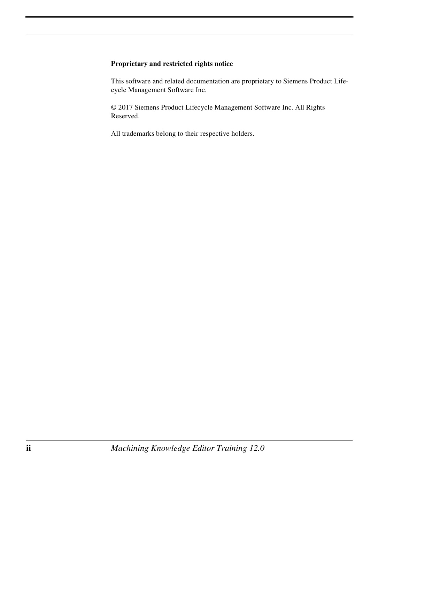
Proprietary and restricted rights notice
This software and related documentation are proprietary to Siemens Product Life-
cycle Management Software Inc.
© 2017 Siemens Product Lifecycle Management Software Inc. All Rights
Reserved.
All trademarks belong to their respective holders.
ii Machining Knowledge Editor Training 12.0
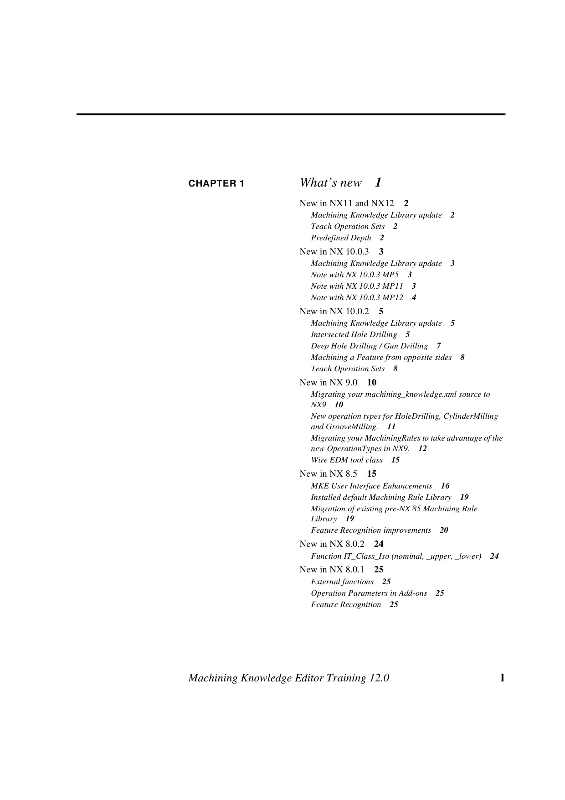
What’s new 1
CHAPTER 1
New in NX11 and NX12 2
Machining Knowledge Library update 2
Teach Operation Sets 2
Predefined Depth 2
New in NX 10.0.3 3
Machining Knowledge Library update 3
Note with NX 10.0.3 MP5 3
Note with NX 10.0.3 MP11 3
Note with NX 10.0.3 MP12 4
New in NX 10.0.2 5
Machining Knowledge Library update 5
Intersected Hole Drilling 5
Deep Hole Drilling / Gun Drilling 7
Machining a Feature from opposite sides 8
Teach Operation Sets 8
New in NX 9.0 10
Migrating your machining_knowledge.xml source to
NX9 10
New operation types for HoleDrilling, CylinderMilling
and GrooveMilling. 11
Migrating your MachiningRules to take advantage of the
new OperationTypes in NX9. 12
Wire EDM tool class 15
New in NX 8.5 15
MKE User Interface Enhancements 16
Installed default Machining Rule Library 19
Migration of existing pre-NX 85 Machining Rule
Library 19
Feature Recognition improvements 20
New in NX 8.0.2 24
Function IT_Class_Iso (nominal, _upper, _lower) 24
New in NX 8.0.1 25
External functions 25
Operation Parameters in Add-ons 25
Feature Recognition 25
Machining Knowledge Editor Training 12.0 I
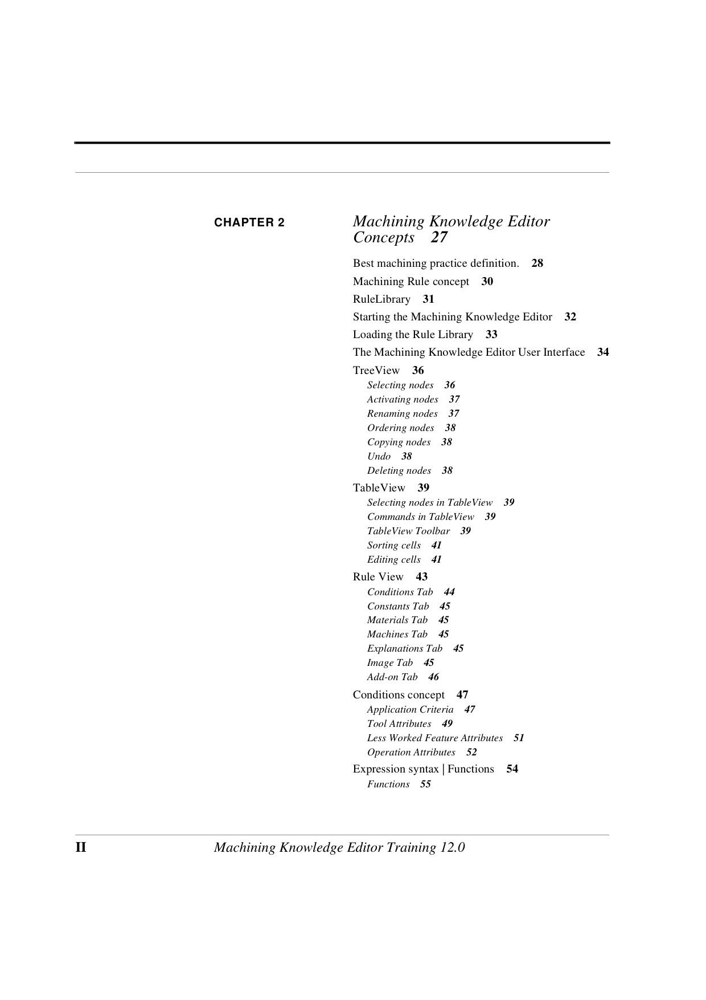
Machining Knowledge Editor
CHAPTER 2
Concepts 27
Best machining practice definition. 28
Machining Rule concept 30
RuleLibrary 31
Starting the Machining Knowledge Editor 32
Loading the Rule Library 33
The Machining Knowledge Editor User Interface 34
TreeView 36
Selecting nodes 36
Activating nodes 37
Renaming nodes 37
Ordering nodes 38
Copying nodes 38
Undo 38
Deleting nodes 38
TableView 39
Selecting nodes in TableView 39
Commands in TableView 39
TableView Toolbar 39
Sorting cells 41
Editing cells 41
Rule View 43
Conditions Tab 44
Constants Tab 45
Materials Tab 45
Machines Tab 45
Explanations Tab 45
Image Tab 45
Add-on Tab 46
Conditions concept 47
Application Criteria 47
Tool Attributes 49
Less Worked Feature Attributes 51
Operation Attributes 52
Expression syntax | Functions 54
Functions 55
II Machining Knowledge Editor Training 12.0
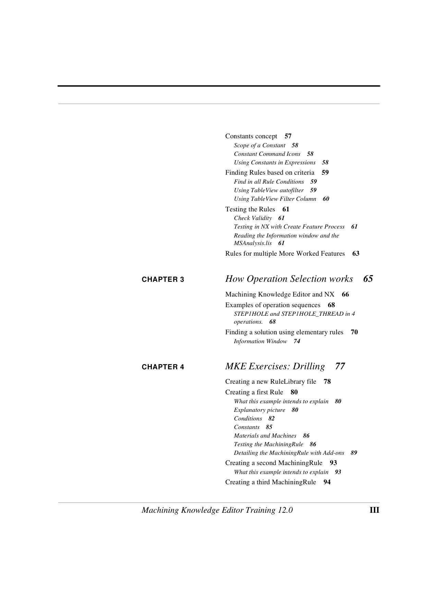
Constants concept 57
Scope of a Constant 58
Constant Command Icons 58
Using Constants in Expressions 58
Finding Rules based on criteria 59
Find in all Rule Conditions 59
Using TableView autofilter 59
Using TableView Filter Column 60
Testing the Rules 61
Check Validity 61
Testing in NX with Create Feature Process 61
Reading the Information window and the
MSAnalysis.lis 61
Rules for multiple More Worked Features 63
How Operation Selection works 65
CHAPTER 3
Machining Knowledge Editor and NX 66
Examples of operation sequences 68
STEP1HOLE and STEP1HOLE_THREAD in 4
operations. 68
Finding a solution using elementary rules 70
Information Window 74
MKE Exercises: Drilling 77
CHAPTER 4
Creating a new RuleLibrary file 78
Creating a first Rule 80
What this example intends to explain 80
Explanatory picture 80
Conditions 82
Constants 85
Materials and Machines 86
Testing the MachiningRule 86
Detailing the MachiningRule with Add-ons 89
Creating a second MachiningRule 93
What this example intends to explain 93
Creating a third MachiningRule 94
Machining Knowledge Editor Training 12.0 III
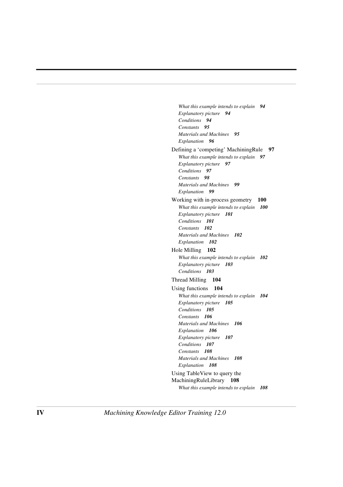
What this example intends to explain 94
Explanatory picture 94
Conditions 94
Constants 95
Materials and Machines 95
Explanation 96
Defining a ‘competing’ MachiningRule 97
What this example intends to explain 97
Explanatory picture 97
Conditions 97
Constants 98
Materials and Machines 99
Explanation 99
Working with in-process geometry 100
What this example intends to explain 100
Explanatory picture 101
Conditions 101
Constants 102
Materials and Machines 102
Explanation 102
Hole Milling 102
What this example intends to explain 102
Explanatory picture 103
Conditions 103
Thread Milling 104
Using functions 104
What this example intends to explain 104
Explanatory picture 105
Conditions 105
Constants 106
Materials and Machines 106
Explanation 106
Explanatory picture 107
Conditions 107
Constants 108
Materials and Machines 108
Explanation 108
Using TableView to query the
MachiningRuleLibrary 108
What this example intends to explain 108
IV Machining Knowledge Editor Training 12.0
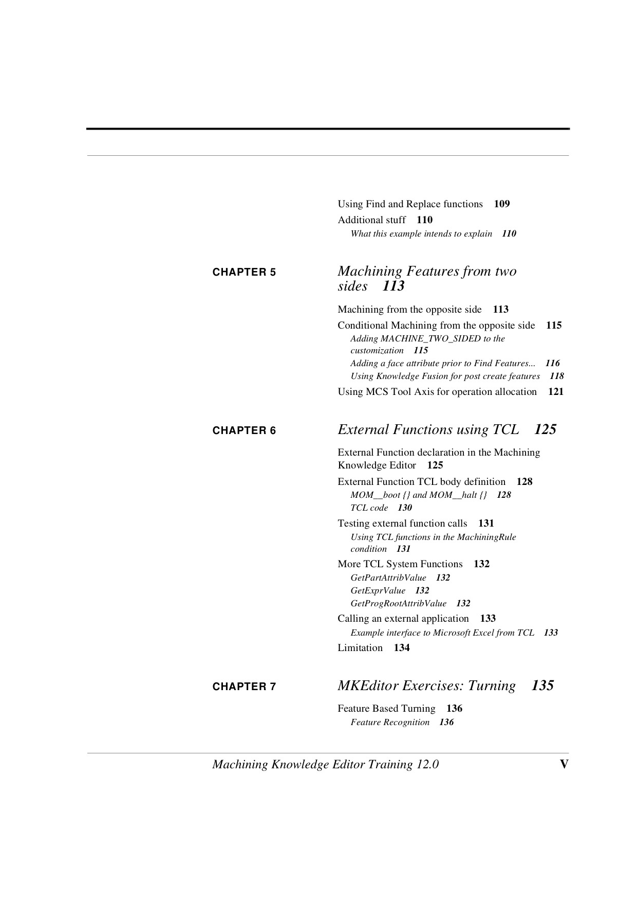
Using Find and Replace functions 109
Additional stuff 110
What this example intends to explain 110
Machining Features from two
CHAPTER 5
sides 113
Machining from the opposite side 113
Conditional Machining from the opposite side 115
Adding MACHINE_TWO_SIDED to the
customization 115
Adding a face attribute prior to Find Features... 116
Using Knowledge Fusion for post create features 118
Using MCS Tool Axis for operation allocation 121
External Functions using TCL 125
CHAPTER 6
External Function declaration in the Machining
Knowledge Editor 125
External Function TCL body definition 128
MOM__boot {} and MOM__halt {} 128
TCL code 130
Testing external function calls 131
Using TCL functions in the MachiningRule
condition 131
More TCL System Functions 132
GetPartAttribValue 132
GetExprValue 132
GetProgRootAttribValue 132
Calling an external application 133
Example interface to Microsoft Excel from TCL 133
Limitation 134
MKEditor Exercises: Turning 135
CHAPTER 7
Feature Based Turning 136
Feature Recognition 136
Machining Knowledge Editor Training 12.0 V
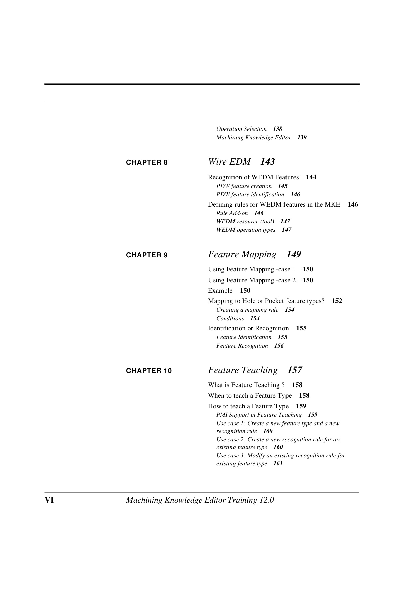
Operation Selection 138
Machining Knowledge Editor 139
Wire EDM 143
CHAPTER 8
Recognition of WEDM Features 144
PDW feature creation 145
PDW feature identification 146
Defining rules for WEDM features in the MKE 146
Rule Add-on 146
WEDM resource (tool) 147
WEDM operation types 147
Feature Mapping 149
CHAPTER 9
Using Feature Mapping -case 1 150
Using Feature Mapping -case 2 150
Example 150
Mapping to Hole or Pocket feature types? 152
Creating a mapping rule 154
Conditions 154
Identification or Recognition 155
Feature Identification 155
Feature Recognition 156
Feature Teaching 157
CHAPTER 10
What is Feature Teaching ? 158
When to teach a Feature Type 158
How to teach a Feature Type 159
PMI Support in Feature Teaching 159
Use case 1: Create a new feature type and a new
recognition rule 160
Use case 2: Create a new recognition rule for an
existing feature type 160
Use case 3: Modify an existing recognition rule for
existing feature type 161
VI Machining Knowledge Editor Training 12.0
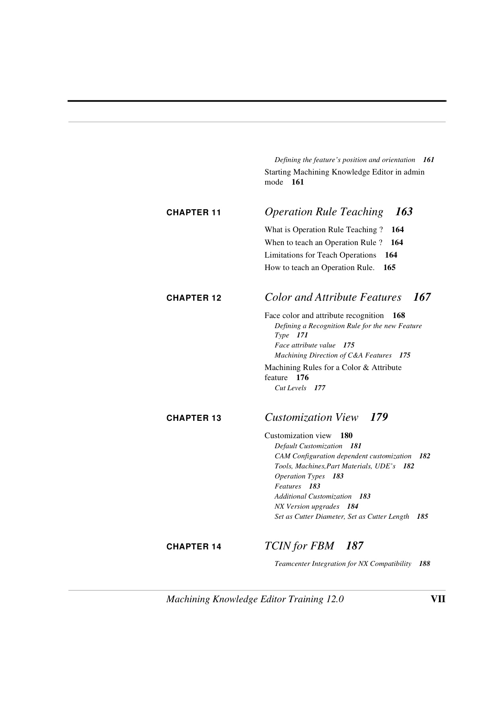
Defining the feature’s position and orientation 161
Starting Machining Knowledge Editor in admin
mode 161
Operation Rule Teaching 163
CHAPTER 11
What is Operation Rule Teaching ? 164
When to teach an Operation Rule ? 164
Limitations for Teach Operations 164
How to teach an Operation Rule. 165
Color and Attribute Features 167
CHAPTER 12
Face color and attribute recognition 168
Defining a Recognition Rule for the new Feature
Type 171
Face attribute value 175
Machining Direction of C&A Features 175
Machining Rules for a Color & Attribute
feature 176
Cut Levels 177
Customization View 179
CHAPTER 13
Customization view 180
Default Customization 181
CAM Configuration dependent customization 182
Tools, Machines,Part Materials, UDE’s 182
Operation Types 183
Features 183
Additional Customization 183
NX Version upgrades 184
Set as Cutter Diameter, Set as Cutter Length 185
TCIN for FBM 187
CHAPTER 14
Teamcenter Integration for NX Compatibility 188
Machining Knowledge Editor Training 12.0 VII
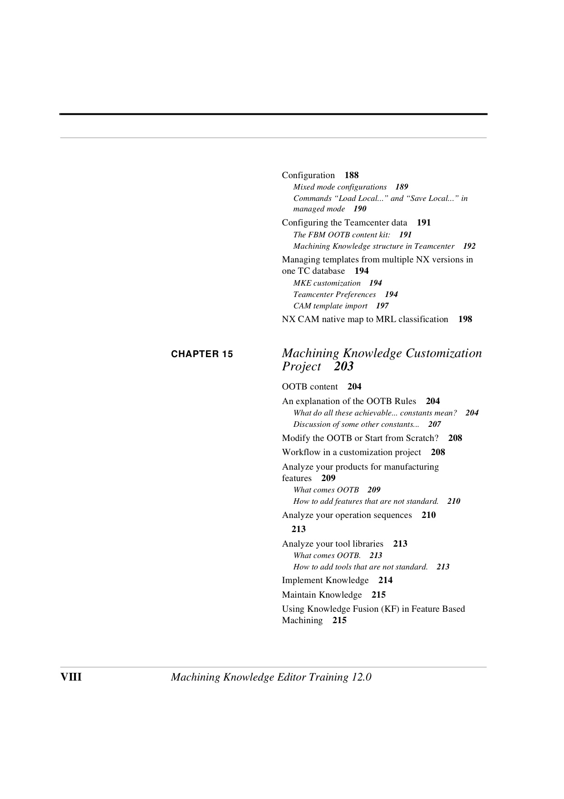
Configuration 188
Mixed mode configurations 189
Commands “Load Local...” and “Save Local...” in
managed mode 190
Configuring the Teamcenter data 191
The FBM OOTB content kit: 191
Machining Knowledge structure in Teamcenter 192
Managing templates from multiple NX versions in
one TC database 194
MKE customization 194
Teamcenter Preferences 194
CAM template import 197
NX CAM native map to MRL classification 198
Machining Knowledge Customization
CHAPTER 15
Project 203
OOTB content 204
An explanation of the OOTB Rules 204
What do all these achievable... constants mean? 204
Discussion of some other constants... 207
Modify the OOTB or Start from Scratch? 208
Workflow in a customization project 208
Analyze your products for manufacturing
features 209
What comes OOTB 209
How to add features that are not standard. 210
Analyze your operation sequences 210
213
Analyze your tool libraries 213
What comes OOTB. 213
How to add tools that are not standard. 213
Implement Knowledge 214
Maintain Knowledge 215
Using Knowledge Fusion (KF) in Feature Based
Machining 215
VIII Machining Knowledge Editor Training 12.0
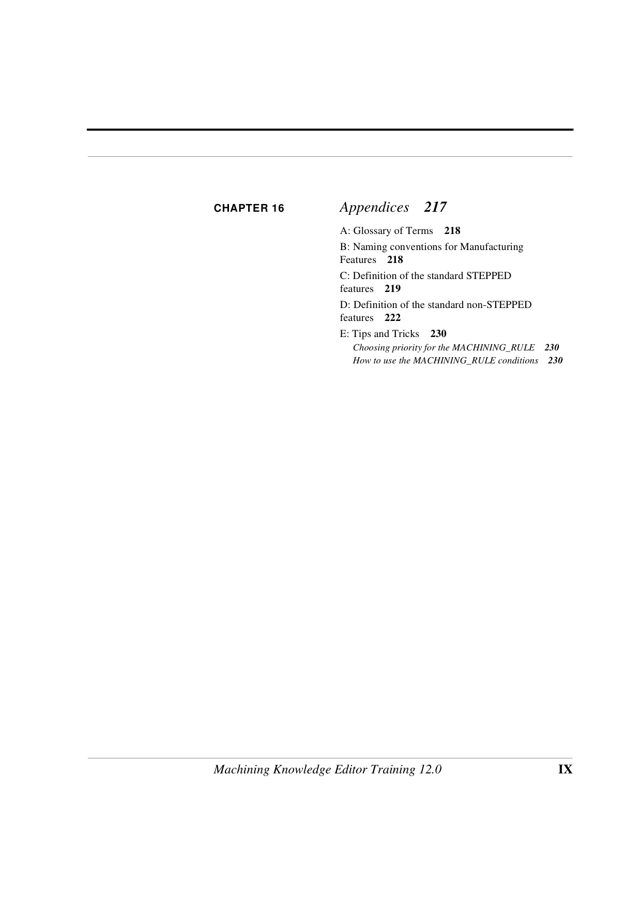
Appendices 217
CHAPTER 16
A: Glossary of Terms 218
B: Naming conventions for Manufacturing
Features 218
C: Definition of the standard STEPPED
features 219
D: Definition of the standard non-STEPPED
features 222
E: Tips and Tricks 230
Choosing priority for the MACHINING_RULE 230
How to use the MACHINING_RULE conditions 230
Machining Knowledge Editor Training 12.0 IX
X Machining Knowledge Editor Training 12.0
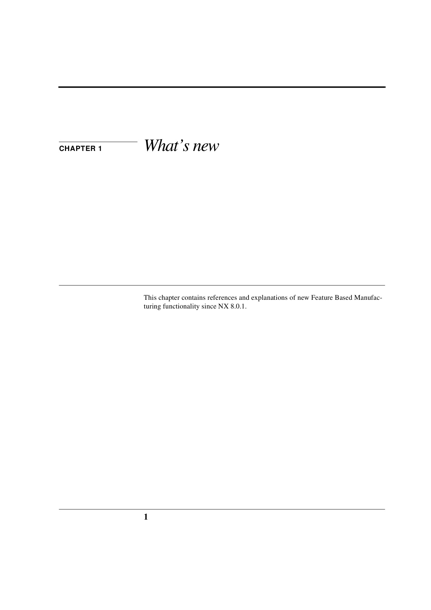
What’s new
CHAPTER 1
This chapter contains references and explanations of new Feature Based Manufac-
turing functionality since NX 8.0.1.
1
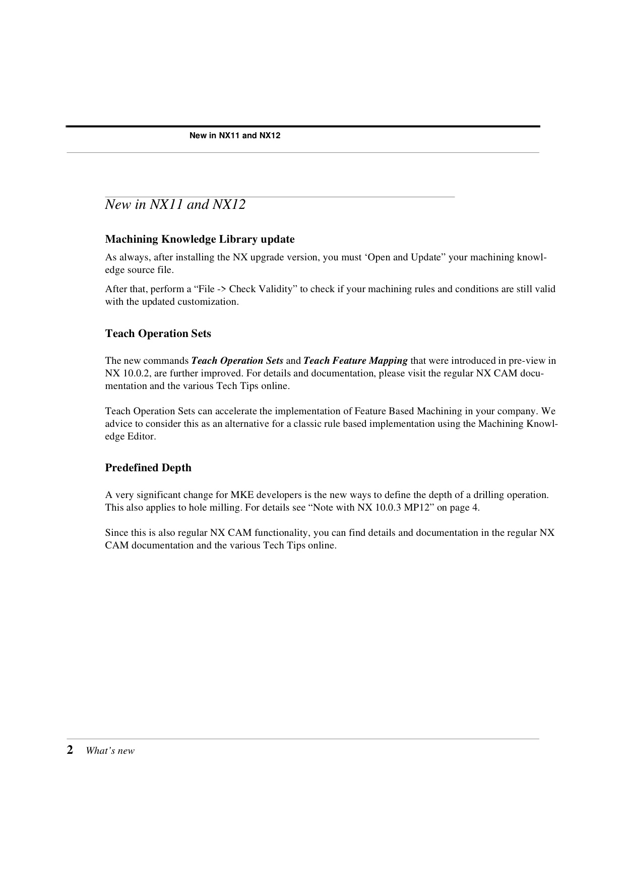
New in NX11 and NX12
New in NX11 and NX12
Machining Knowledge Library update
As always, after installing the NX upgrade version, you must ‘Open and Update” your machining knowl-
edge source file.
After that, perform a “File -> Check Validity” to check if your machining rules and conditions are still valid
with the updated customization.
Teach Operation Sets
The new commandsTeach Operation Sets andTeach Feature Mapping that were introduced in pre-view in
NX 10.0.2, are further improved. For details and documentation, please visit the regular NX CAM docu-
mentation and the various Tech Tips online.
Teach Operation Sets can accelerate the implementation of Feature Based Machining in your company. We
advice to consider this as an alternative for a classic rule based implementation using the Machining Knowl-
edge Editor.
Predefined Depth
A very significant change for MKE developers is the new ways to define the depth of a drilling operation.
This also applies to hole milling. For details see “Note with NX 10.0.3 MP12” on page4.
Since this is also regular NX CAM functionality, you can find details and documentation in the regular NX
CAM documentation and the various Tech Tips online.
2 What’s new
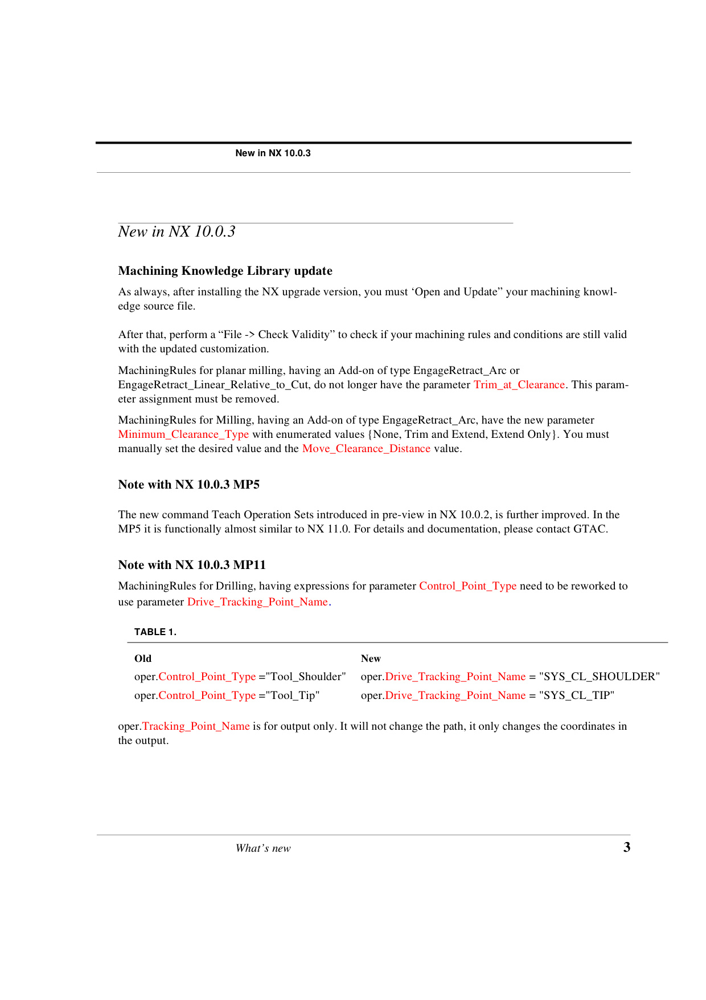
New in NX 10.0.3
New in NX 10.0.3
Machining Knowledge Library update
As always, after installing the NX upgrade version, you must ‘Open and Update” your machining knowl-
edge source file.
After that, perform a “File -> Check Validity” to check if your machining rules and conditions are still valid
with the updated customization.
MachiningRules for planar milling, having an Add-on of type EngageRetract_Arc or
EngageRetract_Linear_Relative_to_Cut, do not longer have the parameterTrim_at_Clearance. This param-
eter assignment must be removed.
MachiningRules for Milling, having an Add-on of type EngageRetract_Arc, have the new parameter
Minimum_Clearance_Type with enumerated values {None, Trim and Extend, Extend Only}. You must
manually set the desired value and the Move_Clearance_Distance value.
Note with NX 10.0.3 MP5
The new command Teach Operation Sets introduced in pre-view in NX 10.0.2, is further improved. In the
MP5 it is functionally almost similar to NX 11.0. For details and documentation, please contact GTAC.
Note with NX 10.0.3 MP11
MachiningRules for Drilling, having expressions for parameterControl_Point_Type need to be reworked to
use parameterDrive_Tracking_Point_Name.
TABLE 1.
Old New
oper.Control_Point_Type ="Tool_Shoulder" oper.Drive_Tracking_Point_Name = "SYS_CL_SHOULDER"
oper.Control_Point_Type ="Tool_Tip" oper.Drive_Tracking_Point_Name = "SYS_CL_TIP"
oper.Tracking_Point_Name is for output only. It will not change the path, it only changes the coordinates in
the output.
What’s new 3
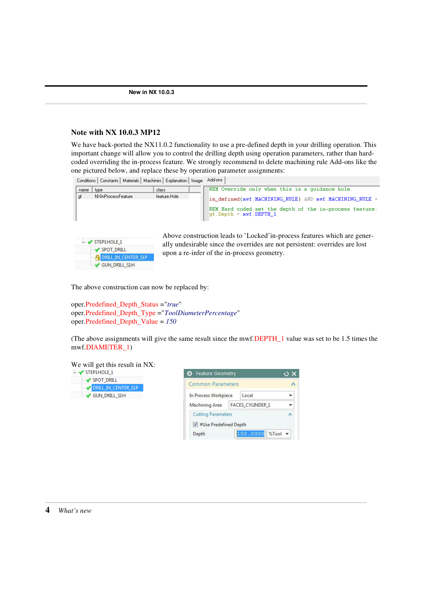
New in NX 10.0.3
Note with NX 10.0.3 MP12
We have back-ported the NX11.0.2 functionality to use a pre-defined depth in your drilling operation. This
important change will allow you to control the drilling depth using operation parameters, rather than hard-
coded overriding the in-process feature. We strongly recommend to delete machining rule Add-ons like the
one pictured below, and replace these by operation parameter assignments:
Above construction leads to ’Locked’in-process features which are gener-
ally undesirable since the overrides are not persistent: overrides are lost
upon a re-infer of the in-process geometry.
The above construction can now be replaced by:
oper.Predefined_Depth_Status ="true"
oper.Predefined_Depth_Type ="ToolDiameterPercentage"
oper.Predefined_Depth_Value =150
(The above assignments will give the same result since the mwf.DEPTH_1 value was set to be 1.5 times the
mwf.DIAMETER_1)
We will get this result in NX:
4 What’s new
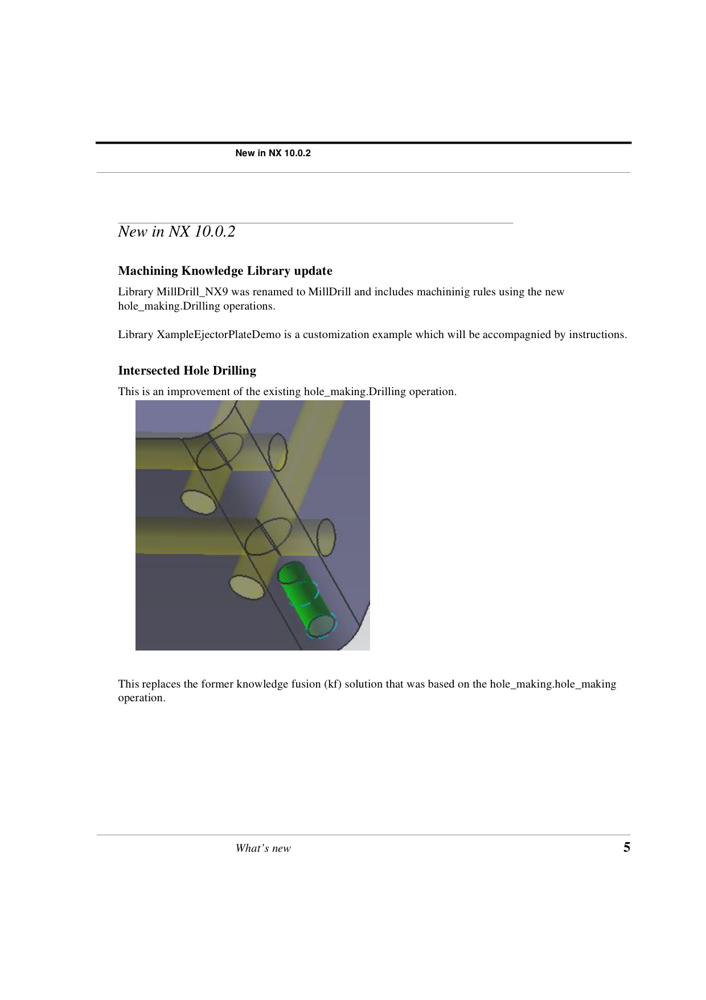
New in NX 10.0.2
New in NX 10.0.2
Machining Knowledge Library update
Library MillDrill_NX9 was renamed to MillDrill and includes machininig rules using the new
hole_making.Drilling operations.
Library XampleEjectorPlateDemo is a customization example which will be accompagnied by instructions.
Intersected Hole Drilling
This is an improvement of the existing hole_making.Drilling operation.
This replaces the former knowledge fusion (kf) solution that was based on the hole_making.hole_making
operation.
What’s new 5
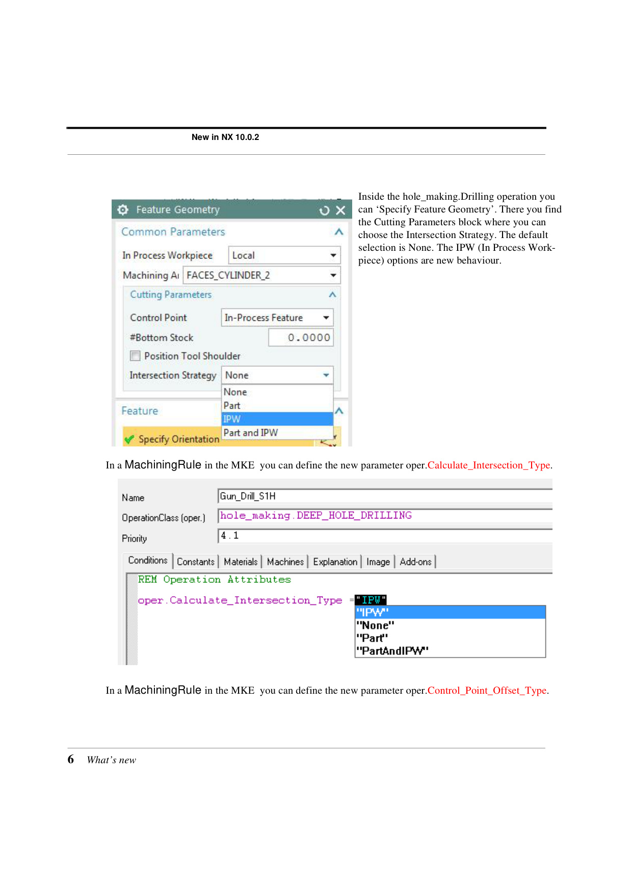
New in NX 10.0.2
Inside the hole_making.Drilling operation you
can ‘Specify Feature Geometry’. There you find
the Cutting Parameters block where you can
choose the Intersection Strategy. The default
selection is None. The IPW (In Process Work-
piece) options are new behaviour.
In aMachiningRule in the MKE you can define the new parameter oper.Calculate_Intersection_Type.
In aMachiningRule in the MKE you can define the new parameter oper.Control_Point_Offset_Type.
6 What’s new
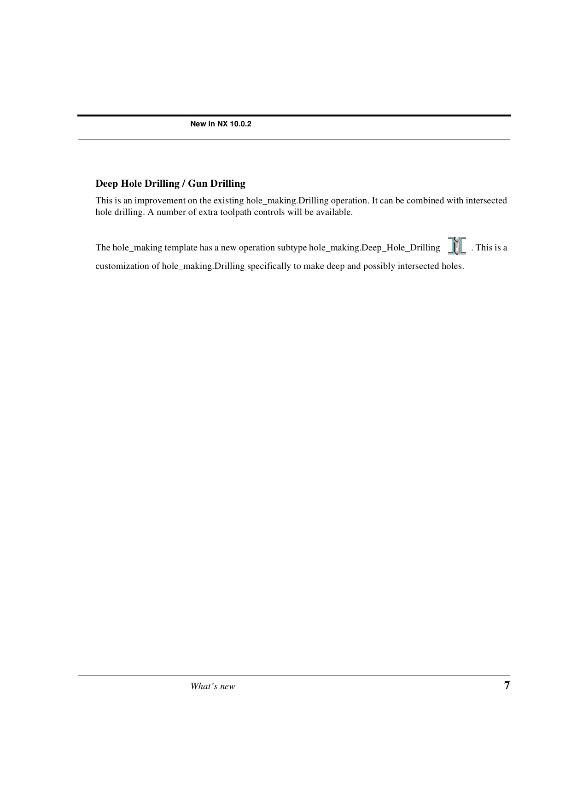
New in NX 10.0.2
Deep Hole Drilling / Gun Drilling
This is an improvement on the existing hole_making.Drilling operation. It can be combined with intersected
hole drilling. A number of extra toolpath controls will be available.
The hole_making template has a new operation subtype hole_making.Deep_Hole_Drilling . This is a
customization of hole_making.Drilling specifically to make deep and possibly intersected holes.
What’s new 7
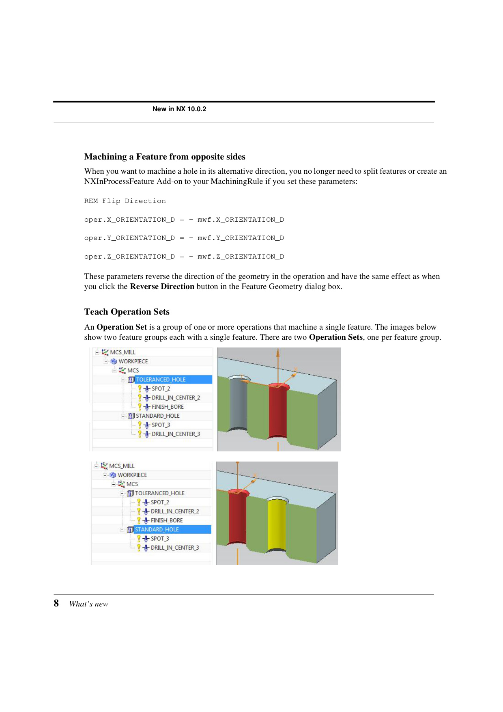
New in NX 10.0.2
Machining a Feature from opposite sides
When you want to machine a hole in its alternative direction, you no longer need to split features or create an
NXInProcessFeature Add-on to your MachiningRule if you set these parameters:
REM Flip Direction
oper.X_ORIENTATION_D = - mwf.X_ORIENTATION_D
oper.Y_ORIENTATION_D = - mwf.Y_ORIENTATION_D
oper.Z_ORIENTATION_D = - mwf.Z_ORIENTATION_D
These parameters reverse the direction of the geometry in the operation and have the same effect as when
you click theReverse Direction button in the Feature Geometry dialog box.
Teach Operation Sets
AnOperation Set is a group of one or more operations that machine a single feature. The images below
show two feature groups each with a single feature. There are twoOperation Sets, one per feature group.
8 What’s new
New in NX 10.0.2
NoteTeach Operation Sets changed significantly in NX 10.0.3 MP5.
What’s new 9
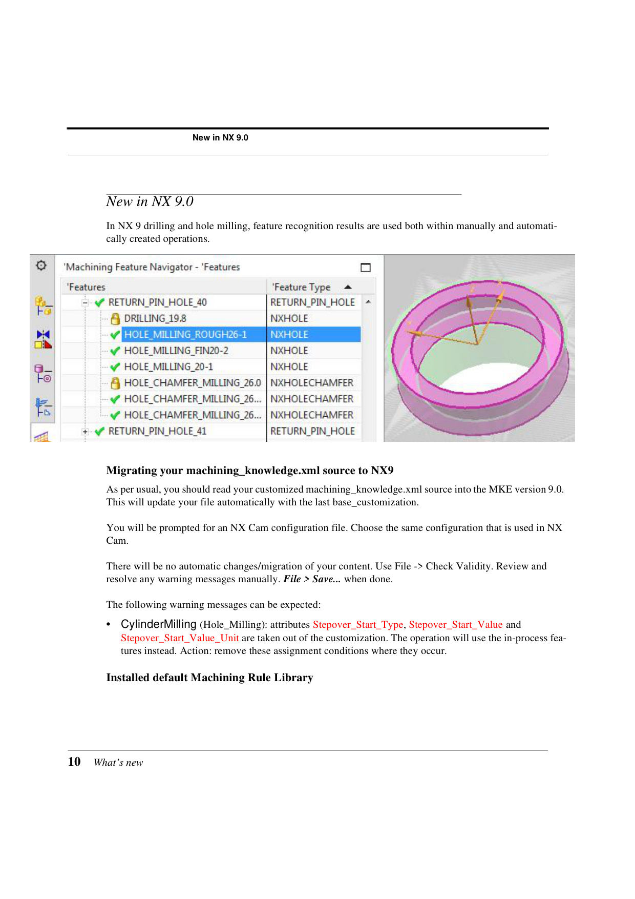
New in NX 9.0
New in NX 9.0
In NX 9 drilling and hole milling, feature recognition results are used both within manually and automati-
cally created operations.
Migrating your machining_knowledge.xml source to NX9
As per usual, you should read your customized machining_knowledge.xml source into the MKE version 9.0.
This will update your file automatically with the last base_customization.
You will be prompted for an NX Cam configuration file. Choose the same configuration that is used in NX
Cam.
There will be no automatic changes/migration of your content. Use File -> Check Validity. Review and
resolve any warning messages manually.File > Save... when done.
The following warning messages can be expected:
(cid:127) CylinderMilling (Hole_Milling): attributesStepover_Start_Type,Stepover_Start_Value and
Stepover_Start_Value_Unit are taken out of the customization. The operation will use the in-process fea-
tures instead. Action: remove these assignment conditions where they occur.
Installed default Machining Rule Library
10 What’s new
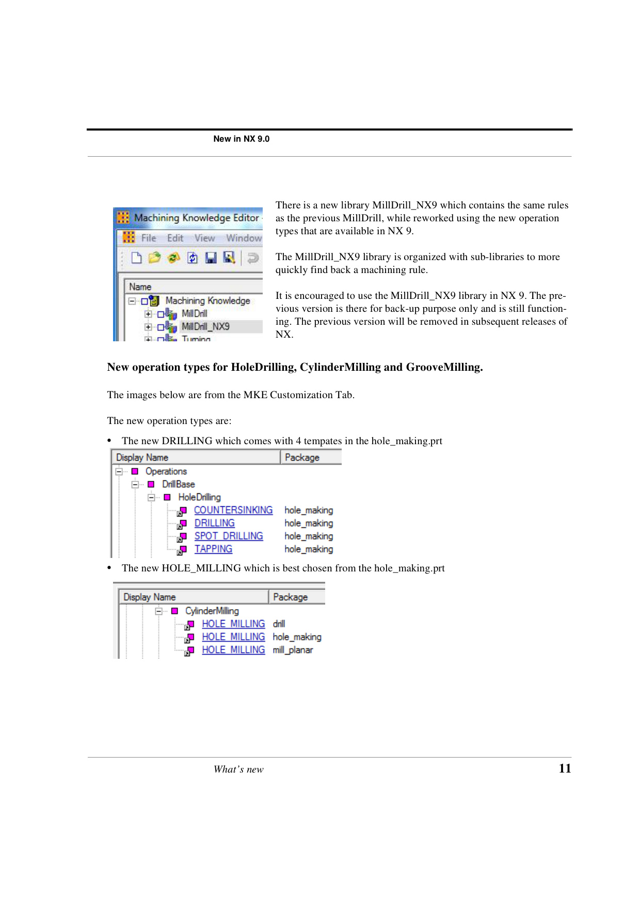
New in NX 9.0
There is a new library MillDrill_NX9 which contains the same rules
as the previous MillDrill, while reworked using the new operation
types that are available in NX 9.
The MillDrill_NX9 library is organized with sub-libraries to more
quickly find back a machining rule.
It is encouraged to use the MillDrill_NX9 library in NX 9. The pre-
vious version is there for back-up purpose only and is still function-
ing. The previous version will be removed in subsequent releases of
NX.
New operation types for HoleDrilling, CylinderMilling and GrooveMilling.
The images below are from the MKE Customization Tab.
The new operation types are:
(cid:127) The new DRILLING which comes with 4 tempates in the hole_making.prt
(cid:127) The new HOLE_MILLING which is best chosen from the hole_making.prt
What’s new 11
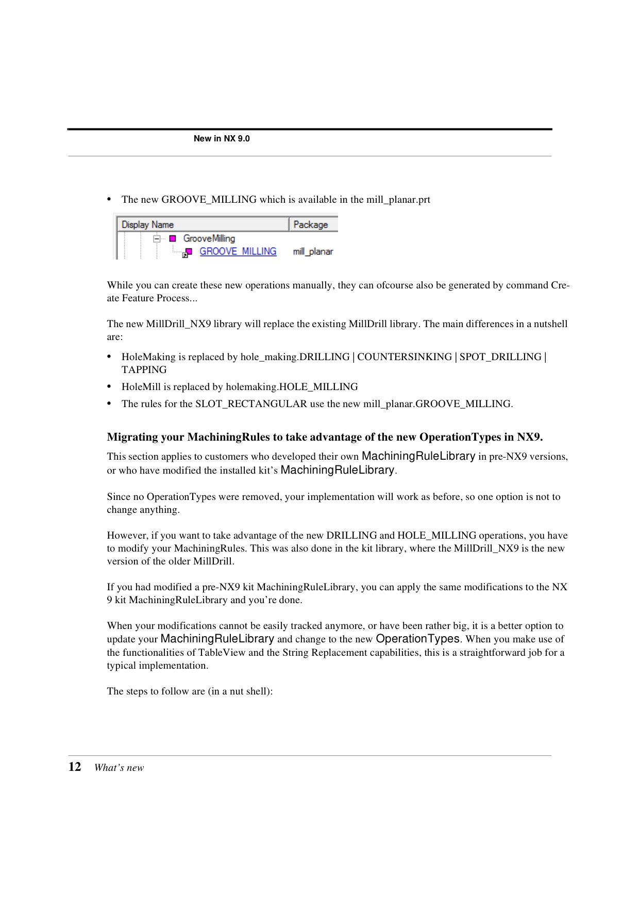
New in NX 9.0
(cid:127) The new GROOVE_MILLING which is available in the mill_planar.prt
While you can create these new operations manually, they can ofcourse also be generated by command Cre-
ate Feature Process...
The new MillDrill_NX9 library will replace the existing MillDrill library. The main differences in a nutshell
are:
(cid:127) HoleMaking is replaced by hole_making.DRILLING | COUNTERSINKING | SPOT_DRILLING |
TAPPING
(cid:127) HoleMill is replaced by holemaking.HOLE_MILLING
(cid:127) The rules for the SLOT_RECTANGULAR use the new mill_planar.GROOVE_MILLING.
Migrating your MachiningRules to take advantage of the new OperationTypes in NX9.
This section applies to customers who developed their ownMachiningRuleLibrary in pre-NX9 versions,
or who have modified the installed kit’sMachiningRuleLibrary.
Since no OperationTypes were removed, your implementation will work as before, so one option is not to
change anything.
However, if you want to take advantage of the new DRILLING and HOLE_MILLING operations, you have
to modify your MachiningRules. This was also done in the kit library, where the MillDrill_NX9 is the new
version of the older MillDrill.
If you had modified a pre-NX9 kit MachiningRuleLibrary, you can apply the same modifications to the NX
9 kit MachiningRuleLibrary and you’re done.
When your modifications cannot be easily tracked anymore, or have been rather big, it is a better option to
update yourMachiningRuleLibrary and change to the newOperationTypes. When you make use of
the functionalities of TableView and the String Replacement capabilities, this is a straightforward job for a
typical implementation.
The steps to follow are (in a nut shell):
12 What’s new
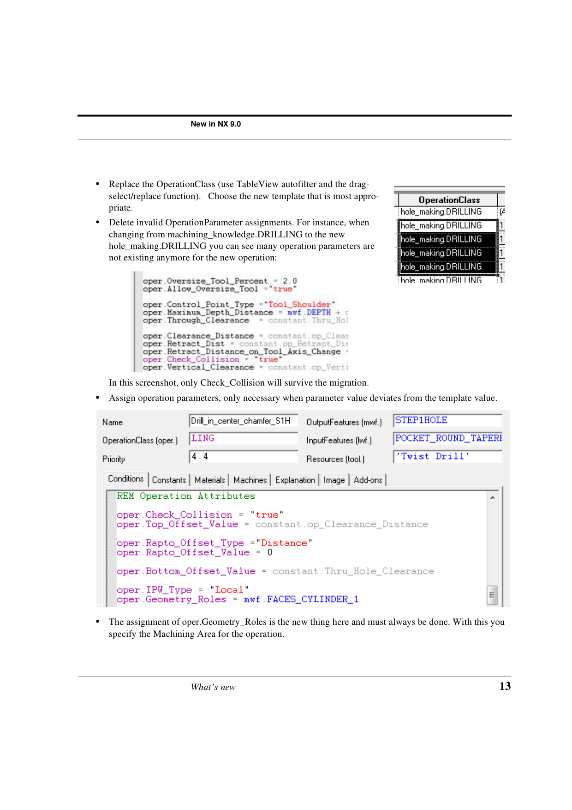
New in NX 9.0
(cid:127) Replace the OperationClass (use TableView autofilter and the drag-
select/replace function). Choose the new template that is most appro-
priate.
(cid:127) Delete invalid OperationParameter assignments. For instance, when
changing from machining_knowledge.DRILLING to the new
hole_making.DRILLING you can see many operation parameters are
not existing anymore for the new operation:
In this screenshot, only Check_Collision will survive the migration.
(cid:127) Assign operation parameters, only necessary when parameter value deviates from the template value.
(cid:127) The assignment of oper.Geometry_Roles is the new thing here and must always be done. With this you
specify the Machining Area for the operation.
What’s new 13
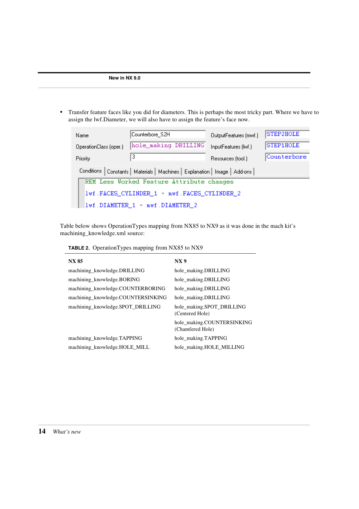
New in NX 9.0
(cid:127) Transfer feature faces like you did for diameters. This is perhaps the most tricky part. Where we have to
assign the lwf.Diameter, we will also have to assign the feature’s face now.
Table below shows OperationTypes mapping from NX85 to NX9 as it was done in the mach kit’s
machining_knowledge.xml source:
TABLE 2. OperationTypes mapping from NX85 to NX9
NX 85 NX 9
machining_knowledge.DRILLING hole_making.DRILLING
machining_knowledge.BORING hole_making.DRILLING
machining_knowledge.COUNTERBORING hole_making.DRILLING
machining_knowledge.COUNTERSINKING hole_making.DRILLING
machining_knowledge.SPOT_DRILLING hole_making.SPOT_DRILLING
(Centered Hole)
hole_making.COUNTERSINKING
(Chamfered Hole)
machining_knowledge.TAPPING hole_making.TAPPING
machining_knowledge.HOLE_MILL hole_making.HOLE_MILLING
14 What’s new
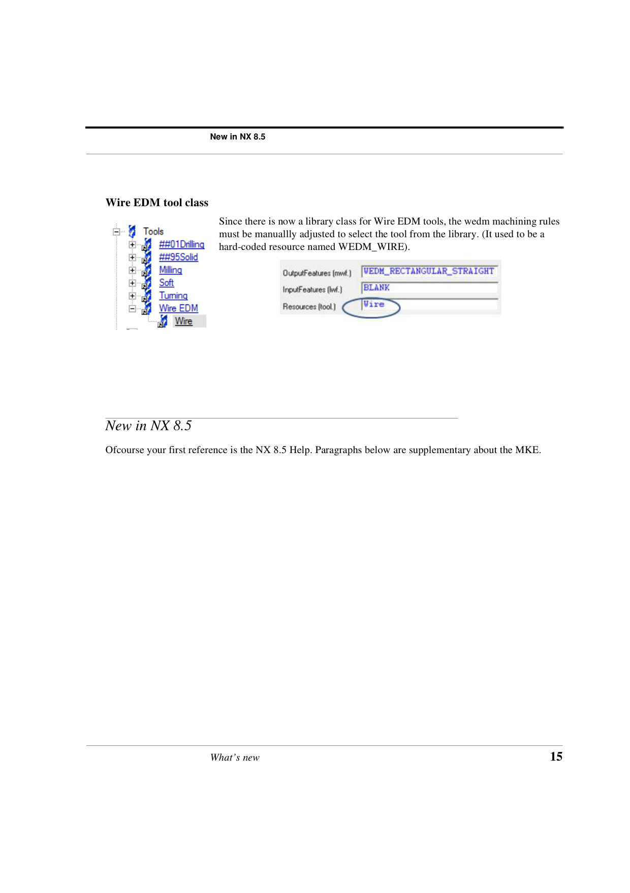
New in NX 8.5
Wire EDM tool class
Since there is now a library class for Wire EDM tools, the wedm machining rules
must be manuallly adjusted to select the tool from the library. (It used to be a
hard-coded resource named WEDM_WIRE).
New in NX 8.5
Ofcourse your first reference is the NX 8.5 Help. Paragraphs below are supplementary about the MKE.
What’s new 15
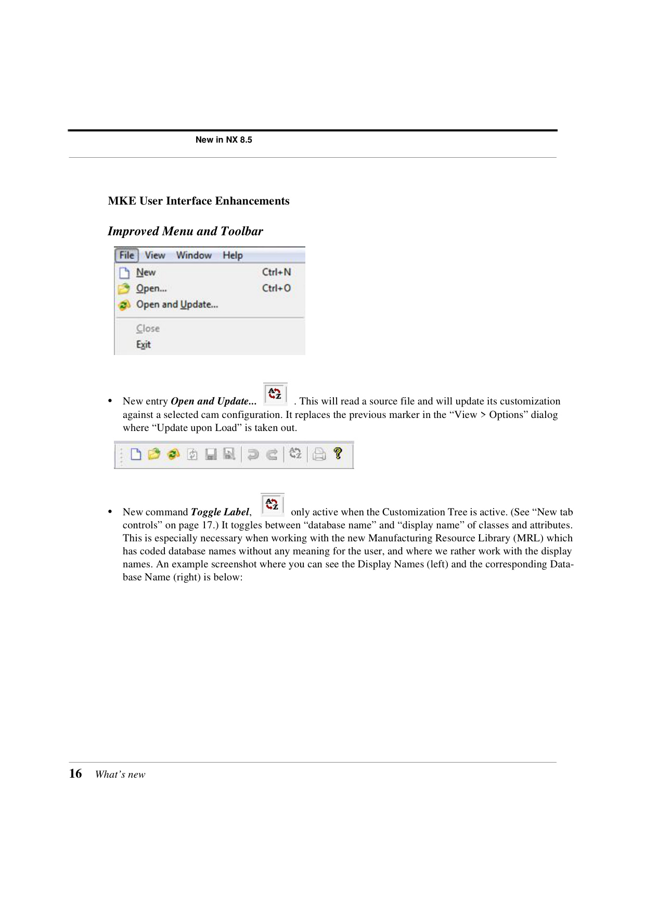
New in NX 8.5
MKE User Interface Enhancements
Improved Menu and Toolbar
(cid:127) New entryOpen and Update... . This will read a source file and will update its customization
against a selected cam configuration. It replaces the previous marker in the “View > Options” dialog
where “Update upon Load” is taken out.
(cid:127) New commandToggle Label, only active when the Customization Tree is active. (See “New tab
controls” on page17.) It toggles between “database name” and “display name” of classes and attributes.
This is especially necessary when working with the new Manufacturing Resource Library (MRL) which
has coded database names without any meaning for the user, and where we rather work with the display
names. An example screenshot where you can see the Display Names (left) and the corresponding Data-
base Name (right) is below:
16 What’s new
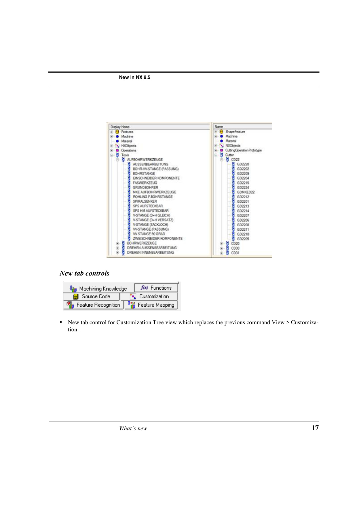
New in NX 8.5
New tab controls
(cid:127) New tab control for Customization Tree view which replaces the previous command View > Customiza-
tion.
What’s new 17
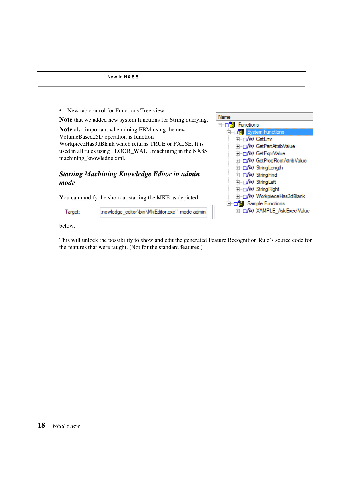
New in NX 8.5
(cid:127) New tab control for Functions Tree view.
Notethat we added new system functions for String querying.
Notealso important when doing FBM using the new
VolumeBased25D operation is function
WorkpieceHas3dBlank which returns TRUE or FALSE. It is
used in all rules using FLOOR_WALL machining in the NX85
machining_knowledge.xml.
Starting Machining Knowledge Editor in admin
mode
You can modify the shortcut starting the MKE as depicted
below.
This will unlock the possibility to show and edit the generated Feature Recognition Rule’s source code for
the features that were taught. (Not for the standard features.)
18 What’s new
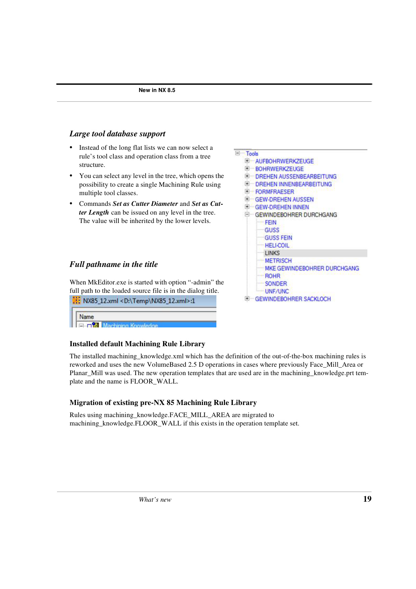
New in NX 8.5
Large tool database support
(cid:127) Instead of the long flat lists we can now select a
rule’s tool class and operation class from a tree
structure.
(cid:127) You can select any level in the tree, which opens the
possibility to create a single Machining Rule using
multiple tool classes.
(cid:127) CommandsSet as Cutter Diameter andSet as Cut-
ter Length can be issued on any level in the tree.
The value will be inherited by the lower levels.
Full pathname in the title
When MkEditor.exe is started with option “-admin” the
full path to the loaded source file is in the dialog title.
Installed default Machining Rule Library
The installed machining_knowledge.xml which has the definition of the out-of-the-box machining rules is
reworked and uses the new VolumeBased 2.5 D operations in cases where previously Face_Mill_Area or
Planar_Mill was used. The new operation templates that are used are in the machining_knowledge.prt tem-
plate and the name is FLOOR_WALL.
Migration of existing pre-NX 85 Machining Rule Library
Rules using machining_knowledge.FACE_MILL_AREA are migrated to
machining_knowledge.FLOOR_WALL if this exists in the operation template set.
What’s new 19
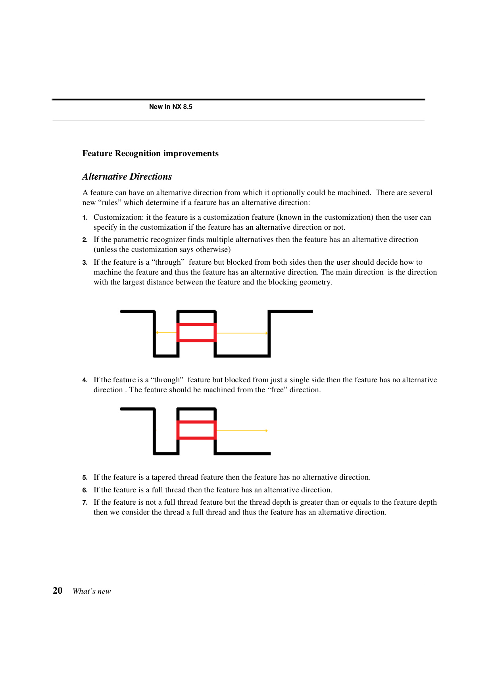
New in NX 8.5
Feature Recognition improvements
Alternative Directions
A feature can have an alternative direction from which it optionally could be machined. There are several
new “rules” which determine if a feature has an alternative direction:
1. Customization: it the feature is a customization feature (known in the customization) then the user can
specify in the customization if the feature has an alternative direction or not.
2. If the parametric recognizer finds multiple alternatives then the feature has an alternative direction
(unless the customization says otherwise)
3. If the feature is a “through” feature but blocked from both sides then the user should decide how to
machine the feature and thus the feature has an alternative direction. The main direction is the direction
with the largest distance between the feature and the blocking geometry.
4. If the feature is a “through” feature but blocked from just a single side then the feature has no alternative
direction . The feature should be machined from the “free” direction.
5. If the feature is a tapered thread feature then the feature has no alternative direction.
6. If the feature is a full thread then the feature has an alternative direction.
7. If the feature is not a full thread feature but the thread depth is greater than or equals to the feature depth
then we consider the thread a full thread and thus the feature has an alternative direction.
20 What’s new
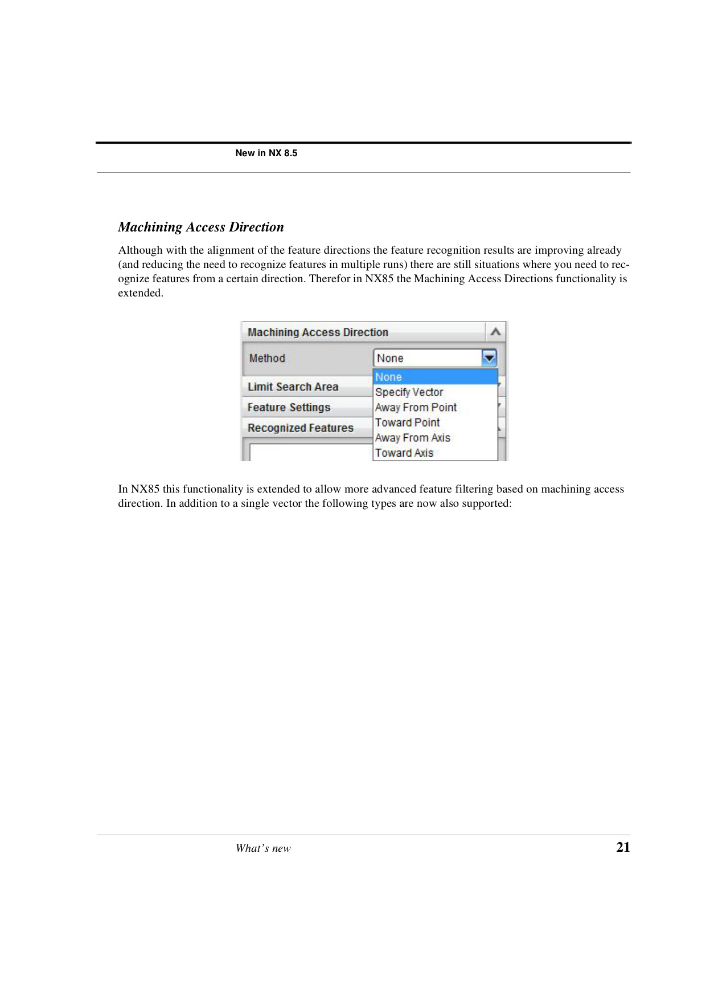
New in NX 8.5
Machining Access Direction
Although with the alignment of the feature directions the feature recognition results are improving already
(and reducing the need to recognize features in multiple runs) there are still situations where you need to rec-
ognize features from a certain direction. Therefor in NX85 the Machining Access Directions functionality is
extended.
In NX85 this functionality is extended to allow more advanced feature filtering based on machining access
direction. In addition to a single vector the following types are now also supported:
What’s new 21
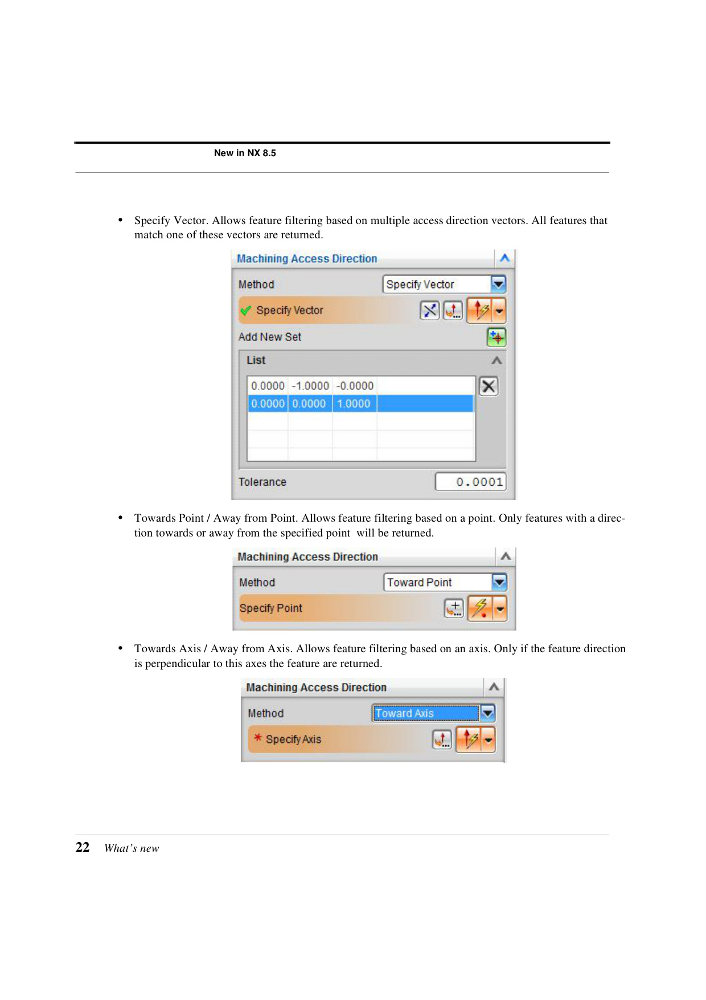
New in NX 8.5
(cid:127) Specify Vector. Allows feature filtering based on multiple access direction vectors. All features that
match one of these vectors are returned.
(cid:127) Towards Point / Away from Point. Allows feature filtering based on a point. Only features with a direc-
tion towards or away from the specified point will be returned.
(cid:127) Towards Axis / Away from Axis. Allows feature filtering based on an axis. Only if the feature direction
is perpendicular to this axes the feature are returned.
22 What’s new
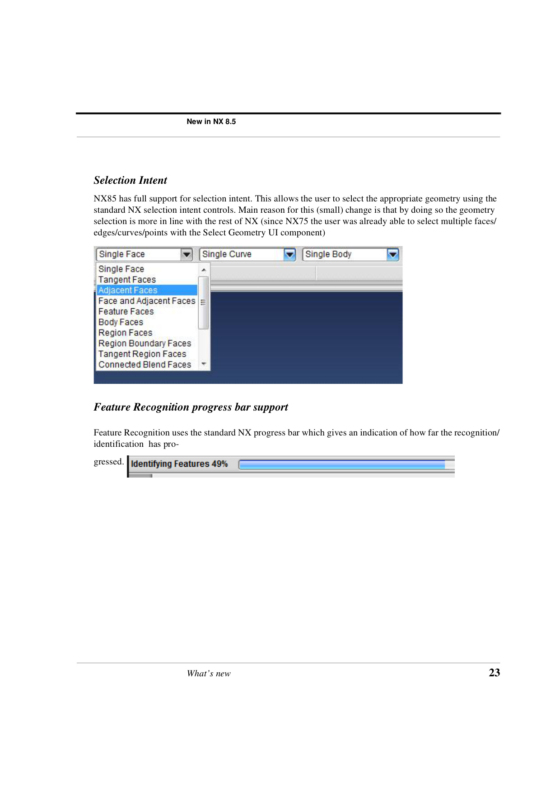
New in NX 8.5
Selection Intent
NX85 has full support for selection intent. This allows the user to select the appropriate geometry using the
standard NX selection intent controls. Main reason for this (small) change is that by doing so the geometry
selection is more in line with the rest of NX (since NX75 the user was already able to select multiple faces/
edges/curves/points with the Select Geometry UI component)
Feature Recognition progress bar support
Feature Recognition uses the standard NX progress bar which gives an indication of how far the recognition/
identification has pro-
gressed.
What’s new 23
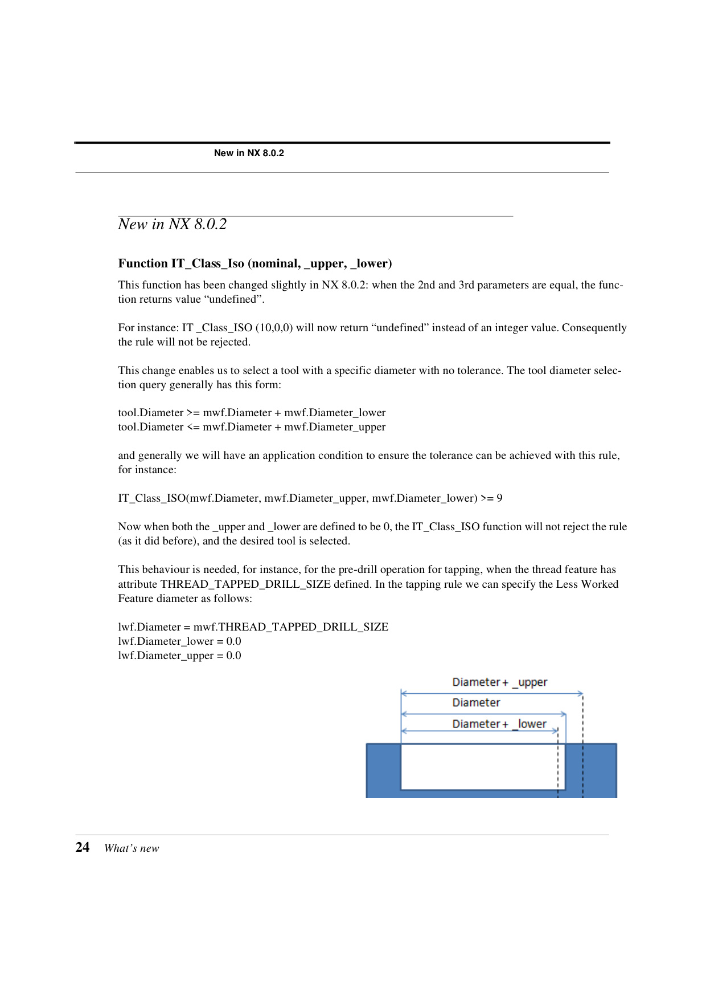
New in NX 8.0.2
New in NX 8.0.2
Function IT_Class_Iso (nominal, _upper, _lower)
This function has been changed slightly in NX 8.0.2: when the 2nd and 3rd parameters are equal, the func-
tion returns value “undefined”.
For instance: IT _Class_ISO (10,0,0) will now return “undefined” instead of an integer value. Consequently
the rule will not be rejected.
This change enables us to select a tool with a specific diameter with no tolerance. The tool diameter selec-
tion query generally has this form:
tool.Diameter >= mwf.Diameter + mwf.Diameter_lower
tool.Diameter <= mwf.Diameter + mwf.Diameter_upper
and generally we will have an application condition to ensure the tolerance can be achieved with this rule,
for instance:
IT_Class_ISO(mwf.Diameter, mwf.Diameter_upper, mwf.Diameter_lower) >= 9
Now when both the _upper and _lower are defined to be 0, the IT_Class_ISO function will not reject the rule
(as it did before), and the desired tool is selected.
This behaviour is needed, for instance, for the pre-drill operation for tapping, when the thread feature has
attribute THREAD_TAPPED_DRILL_SIZE defined. In the tapping rule we can specify the Less Worked
Feature diameter as follows:
lwf.Diameter = mwf.THREAD_TAPPED_DRILL_SIZE
lwf.Diameter_lower = 0.0
lwf.Diameter_upper = 0.0
24 What’s new
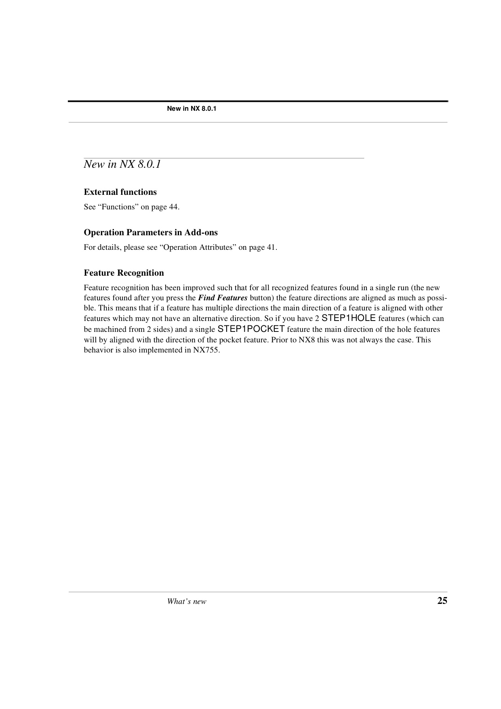
New in NX 8.0.1
New in NX 8.0.1
External functions
See “Functions” on page44.
Operation Parameters in Add-ons
For details, please see “Operation Attributes” on page41.
Feature Recognition
Feature recognition has been improved such that for all recognized features found in a single run (the new
features found after you press theFind Features button) the feature directions are aligned as much as possi-
ble. This means that if a feature has multiple directions the main direction of a feature is aligned with other
features which may not have an alternative direction. So if you have 2STEP1HOLE features (which can
be machined from 2 sides) and a single STEP1POCKET feature the main direction of the hole features
will by aligned with the direction of the pocket feature. Prior to NX8 this was not always the case. This
behavior is also implemented in NX755.
What’s new 25
New in NX 8.0.1
26 What’s new
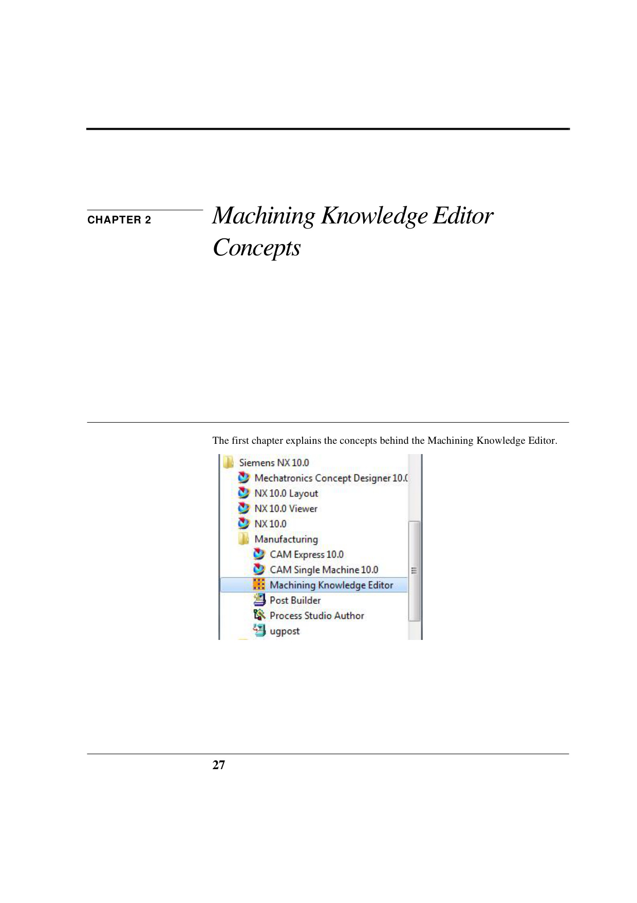
Machining Knowledge Editor
CHAPTER 2
Concepts
The first chapter explains the concepts behind the Machining Knowledge Editor.
27
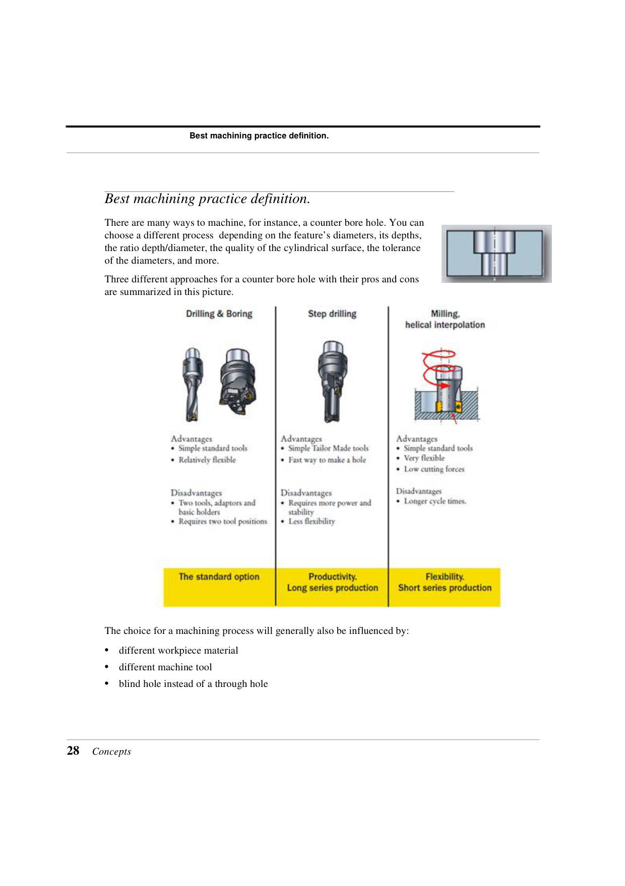
Best machining practice definition.
Best machining practice definition.
There are many ways to machine, for instance, a counter bore hole. You can
choose a different process depending on the feature’s diameters, its depths,
the ratio depth/diameter, the quality of the cylindrical surface, the tolerance
of the diameters, and more.
Three different approaches for a counter bore hole with their pros and cons
are summarized in this picture.
The choice for a machining process will generally also be influenced by:
(cid:127) different workpiece material
(cid:127) different machine tool
(cid:127) blind hole instead of a through hole
28 Concepts
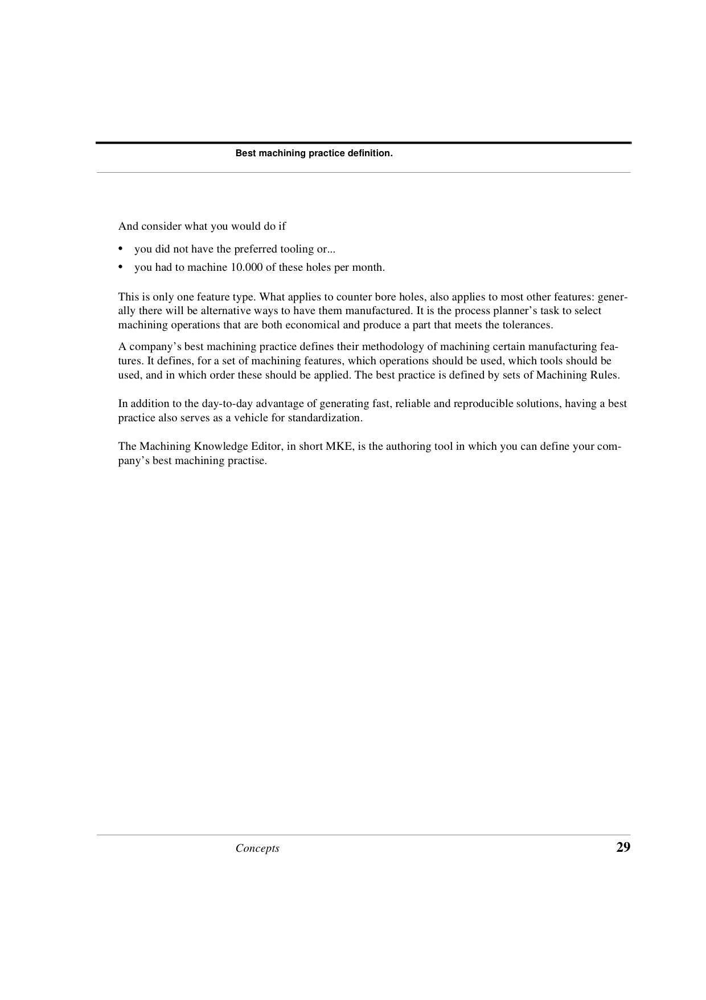
Best machining practice definition.
And consider what you would do if
(cid:127) you did not have the preferred tooling or...
(cid:127) you had to machine 10.000 of these holes per month.
This is only one feature type. What applies to counter bore holes, also applies to most other features: gener-
ally there will be alternative ways to have them manufactured. It is the process planner’s task to select
machining operations that are both economical and produce a part that meets the tolerances.
A company’s best machining practice defines their methodology of machining certain manufacturing fea-
tures. It defines, for a set of machining features, which operations should be used, which tools should be
used, and in which order these should be applied. The best practice is defined by sets of Machining Rules.
In addition to the day-to-day advantage of generating fast, reliable and reproducible solutions, having a best
practice also serves as a vehicle for standardization.
The Machining Knowledge Editor, in short MKE, is the authoring tool in which you can define your com-
pany’s best machining practise.
Concepts 29
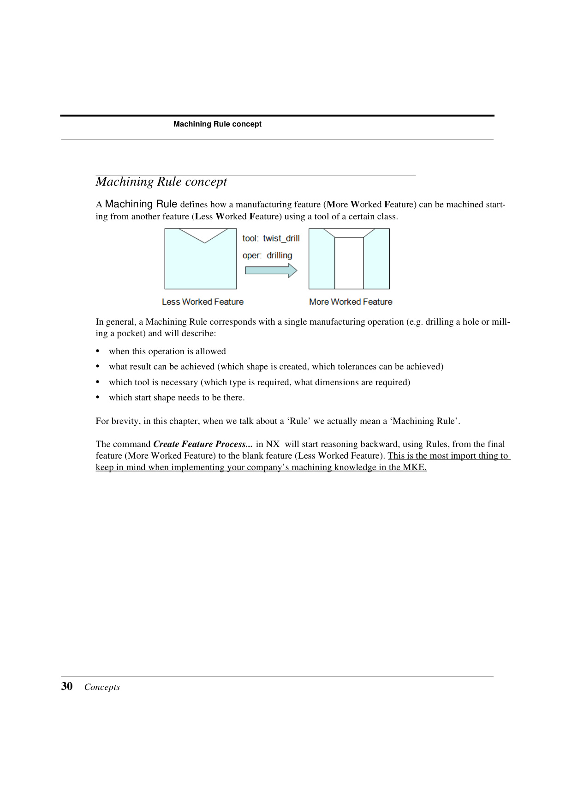
Machining Rule concept
Machining Rule concept
AMachining Rule defines how a manufacturing feature (MoreWorkedFeature) can be machined start-
ing from another feature (LessWorkedFeature) using a tool of a certain class.
In general, a Machining Rule corresponds with a single manufacturing operation (e.g. drilling a hole or mill-
ing a pocket) and will describe:
(cid:127) when this operation is allowed
(cid:127) what result can be achieved (which shape is created, which tolerances can be achieved)
(cid:127) which tool is necessary (which type is required, what dimensions are required)
(cid:127) which start shape needs to be there.
For brevity, in this chapter, when we talk about a ‘Rule’ we actually mean a ‘Machining Rule’.
The commandCreate Feature Process... in NX will start reasoning backward, using Rules, from the final
feature (More Worked Feature) to the blank feature (Less Worked Feature). This is the most import thing to
keep in mind when implementing your company’s machining knowledge in the MKE.
30 Concepts
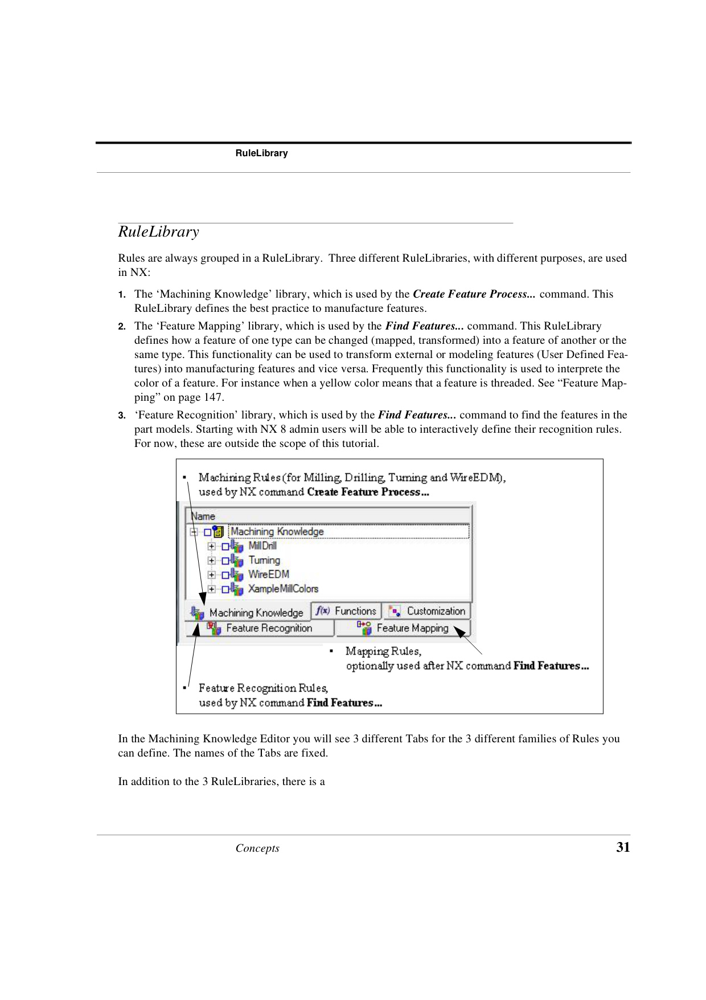
RuleLibrary
RuleLibrary
Rules are always grouped in a RuleLibrary. Three different RuleLibraries, with different purposes, are used
in NX:
1. The ‘Machining Knowledge’ library, which is used by theCreate Feature Process... command. This
RuleLibrary defines the best practice to manufacture features.
2. The ‘Feature Mapping’ library, which is used by the Find Features... command. This RuleLibrary
defines how a feature of one type can be changed (mapped, transformed) into a feature of another or the
same type. This functionality can be used to transform external or modeling features (User Defined Fea-
tures) into manufacturing features and vice versa. Frequently this functionality is used to interprete the
color of a feature. For instance when a yellow color means that a feature is threaded. See “Feature Map-
ping” on page147.
3. ‘Feature Recognition’ library, which is used by theFind Features... command to find the features in the
part models. Starting with NX 8 admin users will be able to interactively define their recognition rules.
For now, these are outside the scope of this tutorial.
In the Machining Knowledge Editor you will see 3 different Tabs for the 3 different families of Rules you
can define. The names of the Tabs are fixed.
In addition to the 3 RuleLibraries, there is a
Concepts 31
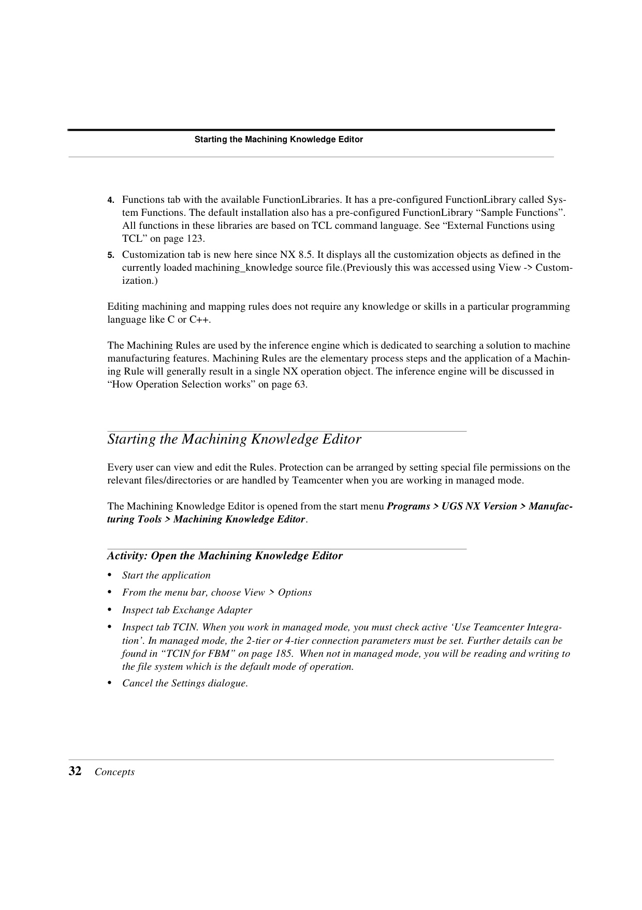
Starting the Machining Knowledge Editor
4. Functions tab with the available FunctionLibraries. It has a pre-configured FunctionLibrary called Sys-
tem Functions. The default installation also has a pre-configured FunctionLibrary “Sample Functions”.
All functions in these libraries are based on TCL command language. See “External Functions using
TCL” on page123.
5. Customization tab is new here since NX 8.5. It displays all the customization objects as defined in the
currently loaded machining_knowledge source file.(Previously this was accessed using View -> Custom-
ization.)
Editing machining and mapping rules does not require any knowledge or skills in a particular programming
language like C or C++.
The Machining Rules are used by the inference engine which is dedicated to searching a solution to machine
manufacturing features. Machining Rules are the elementary process steps and the application of a Machin-
ing Rule will generally result in a single NX operation object. The inference engine will be discussed in
“How Operation Selection works” on page63.
Starting the Machining Knowledge Editor
Every user can view and edit the Rules. Protection can be arranged by setting special file permissions on the
relevant files/directories or are handled by Teamcenter when you are working in managed mode.
The Machining Knowledge Editor is opened from the start menuPrograms > UGS NX Version > Manufac-
turing Tools > Machining Knowledge Editor.
Activity: Open the Machining Knowledge Editor
(cid:127) Start the application
(cid:127) From the menu bar, choose View > Options
(cid:127) Inspect tab Exchange Adapter
(cid:127) Inspect tab TCIN. When you work in managed mode, you must check active ‘Use Teamcenter Integra-
tion’. In managed mode, the 2-tier or 4-tier connection parameters must be set. Further details can be
found in “TCIN for FBM” on page185. When not in managed mode, you will be reading and writing to
the file system which is the default mode of operation.
(cid:127) Cancel the Settings dialogue.
32 Concepts
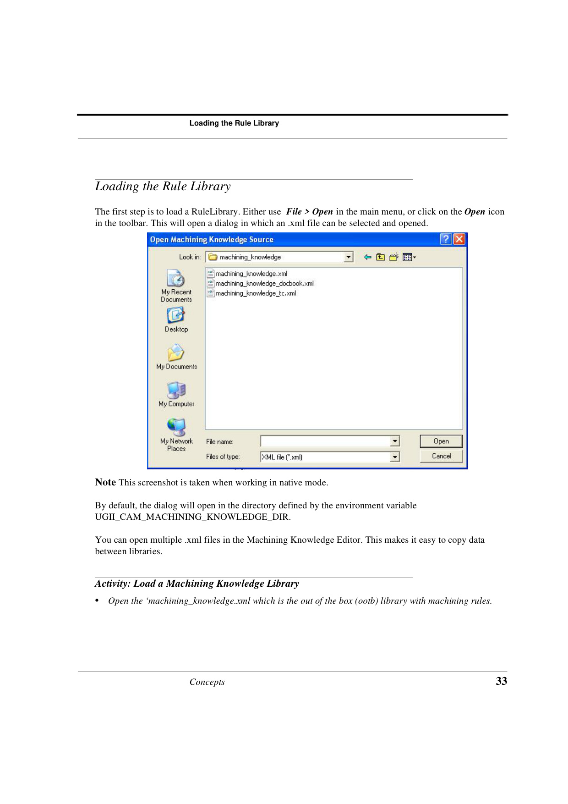
Loading the Rule Library
Loading the Rule Library
The first step is to load a RuleLibrary. Either use File > Open in the main menu, or click on theOpen icon
in the toolbar. This will open a dialog in which an .xml file can be selected and opened.
NoteThis screenshot is taken when working in native mode.
By default, the dialog will open in the directory defined by the environment variable
UGII_CAM_MACHINING_KNOWLEDGE_DIR.
You can open multiple .xml files in the Machining Knowledge Editor. This makes it easy to copy data
between libraries.
Activity: Load a Machining Knowledge Library
(cid:127) Open the ‘machining_knowledge.xml which is the out of the box (ootb) library with machining rules.
Concepts 33
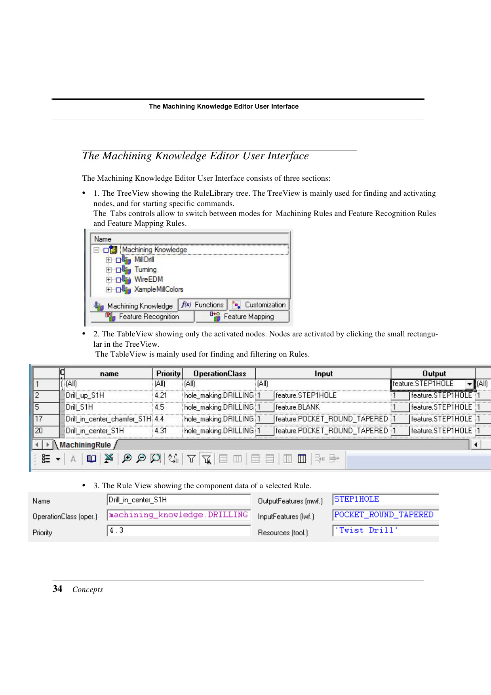
The Machining Knowledge Editor User Interface
The Machining Knowledge Editor User Interface
The Machining Knowledge Editor User Interface consists of three sections:
(cid:127) 1. The TreeView showing the RuleLibrary tree. The TreeView is mainly used for finding and activating
nodes, and for starting specific commands.
The Tabs controls allow to switch between modes for Machining Rules and Feature Recognition Rules
and Feature Mapping Rules.
(cid:127) 2. The TableView showing only the activated nodes. Nodes are activated by clicking the small rectangu-
lar in the TreeView.
The TableView is mainly used for finding and filtering on Rules.
(cid:127) 3. The Rule View showing the component data of a selected Rule.
34 Concepts
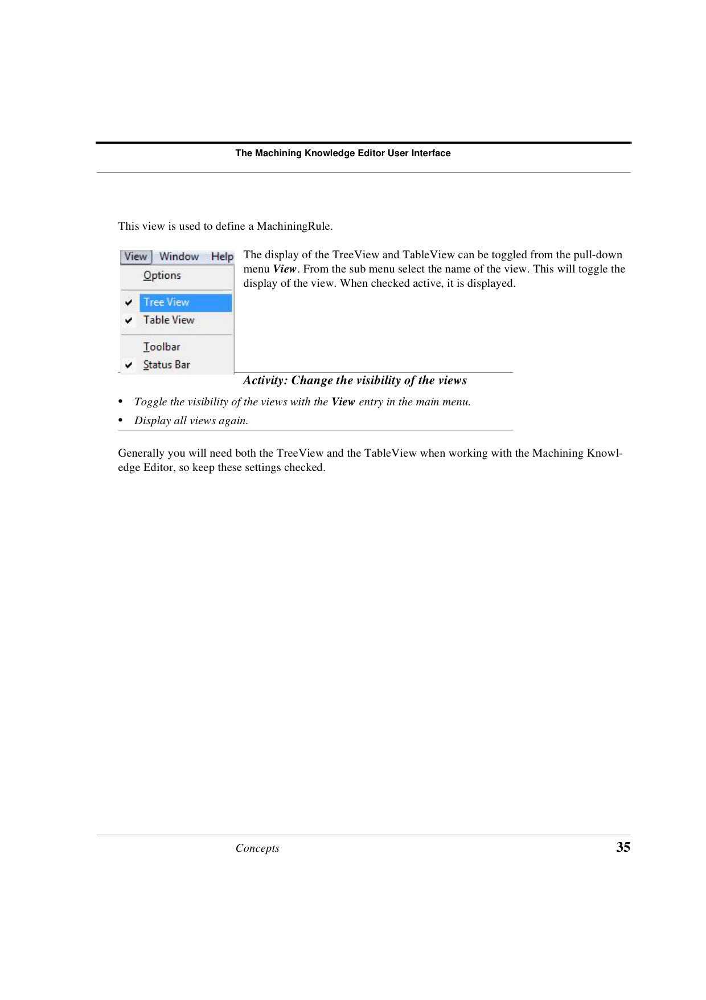
The Machining Knowledge Editor User Interface
This view is used to define a MachiningRule.
The display of the TreeView and TableView can be toggled from the pull-down
menuView. From the sub menu select the name of the view. This will toggle the
display of the view. When checked active, it is displayed.
Activity: Change the visibility of the views
(cid:127) Toggle the visibility of the views with theView entry in the main menu.
(cid:127) Display all views again.
Generally you will need both the TreeView and the TableView when working with the Machining Knowl-
edge Editor, so keep these settings checked.
Concepts 35
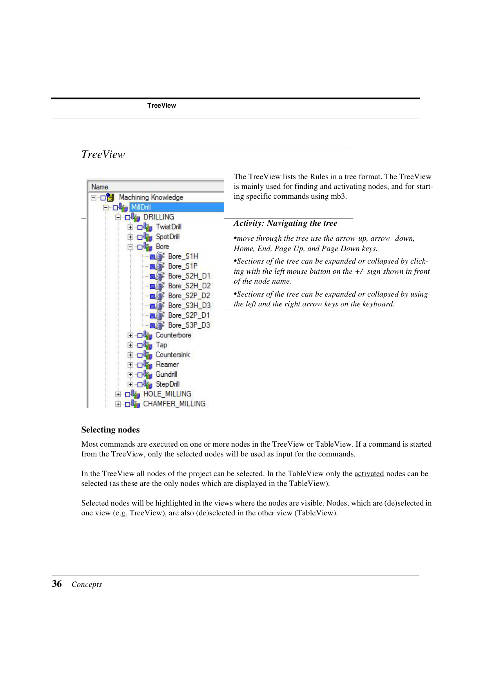
TreeView
TreeView
The TreeView lists the Rules in a tree format. The TreeView
is mainly used for finding and activating nodes, and for start-
ing specific commands using mb3.
Activity: Navigating the tree
(cid:127)move through the tree use the arrow-up, arrow- down,
Home, End, Page Up, and Page Down keys.
(cid:127)Sections of the tree can be expanded or collapsed by click-
ing with the left mouse button on the +/- sign shown in front
of the node name.
(cid:127)Sections of the tree can be expanded or collapsed by using
the left and the right arrow keys on the keyboard.
Selecting nodes
Most commands are executed on one or more nodes in the TreeView or TableView. If a command is started
from the TreeView, only the selected nodes will be used as input for the commands.
In the TreeView all nodes of the project can be selected. In the TableView only the activated nodes can be
selected (as these are the only nodes which are displayed in the TableView).
Selected nodes will be highlighted in the views where the nodes are visible. Nodes, which are (de)selected in
one view (e.g. TreeView), are also (de)selected in the other view (TableView).
36 Concepts
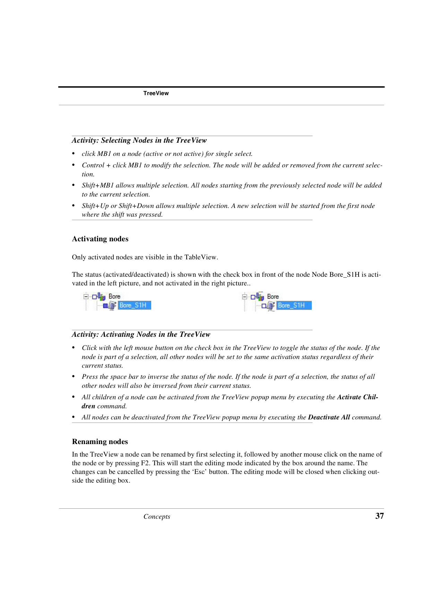
TreeView
Activity: Selecting Nodes in the TreeView
(cid:127) click MB1 on a node (active or not active) for single select.
(cid:127) Control + click MB1 to modify the selection. The node will be added or removed from the current selec-
tion.
(cid:127) Shift+MB1 allows multiple selection. All nodes starting from the previously selected node will be added
to the current selection.
(cid:127) Shift+Up or Shift+Down allows multiple selection. A new selection will be started from the first node
where the shift was pressed.
Activating nodes
Only activated nodes are visible in the TableView.
The status (activated/deactivated) is shown with the check box in front of the node Node Bore_S1H is acti-
vated in the left picture, and not activated in the right picture..
Activity: Activating Nodes in the TreeView
(cid:127) Click with the left mouse button on the check box in the TreeView to toggle the status of the node. If the
node is part of a selection, all other nodes will be set to the same activation status regardless of their
current status.
(cid:127) Press the space bar to inverse the status of the node. If the node is part of a selection, the status of all
other nodes will also be inversed from their current status.
(cid:127) All children of a node can be activated from the TreeView popup menu by executing the Activate Chil-
dren command.
(cid:127) All nodes can be deactivated from the TreeView popup menu by executing theDeactivate All command.
Renaming nodes
In the TreeView a node can be renamed by first selecting it, followed by another mouse click on the name of
the node or by pressing F2. This will start the editing mode indicated by the box around the name. The
changes can be cancelled by pressing the ‘Esc’ button. The editing mode will be closed when clicking out-
side the editing box.
Concepts 37
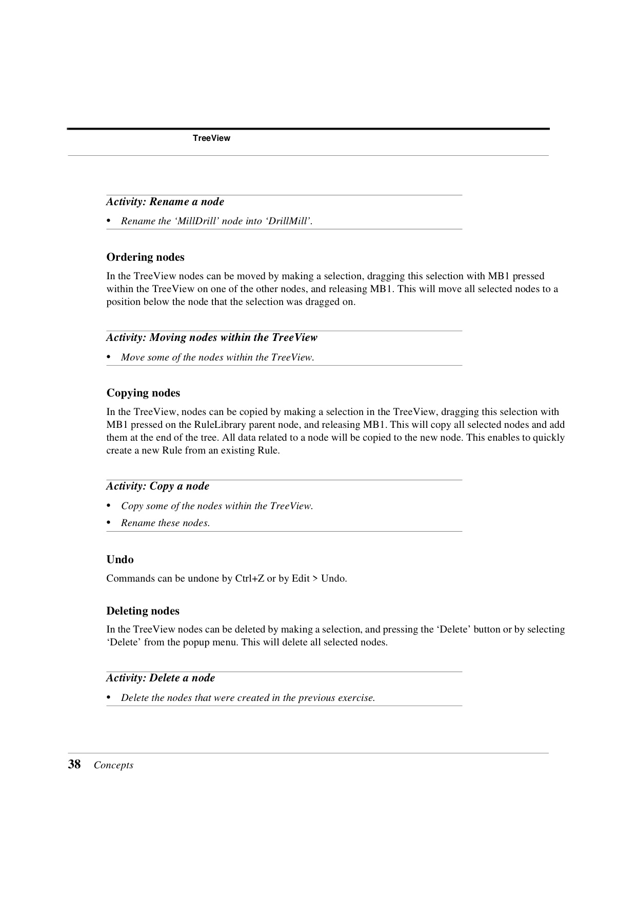
TreeView
Activity: Rename a node
(cid:127) Rename the ‘MillDrill’ node into ‘DrillMill’.
Ordering nodes
In the TreeView nodes can be moved by making a selection, dragging this selection with MB1 pressed
within the TreeView on one of the other nodes, and releasing MB1. This will move all selected nodes to a
position below the node that the selection was dragged on.
Activity: Moving nodes within the TreeView
(cid:127) Move some of the nodes within the TreeView.
Copying nodes
In the TreeView, nodes can be copied by making a selection in the TreeView, dragging this selection with
MB1 pressed on the RuleLibrary parent node, and releasing MB1. This will copy all selected nodes and add
them at the end of the tree. All data related to a node will be copied to the new node. This enables to quickly
create a new Rule from an existing Rule.
Activity: Copy a node
(cid:127) Copy some of the nodes within the TreeView.
(cid:127) Rename these nodes.
Undo
Commands can be undone by Ctrl+Z or by Edit > Undo.
Deleting nodes
In the TreeView nodes can be deleted by making a selection, and pressing the ‘Delete’ button or by selecting
‘Delete’ from the popup menu. This will delete all selected nodes.
Activity: Delete a node
(cid:127) Delete the nodes that were created in the previous exercise.
38 Concepts
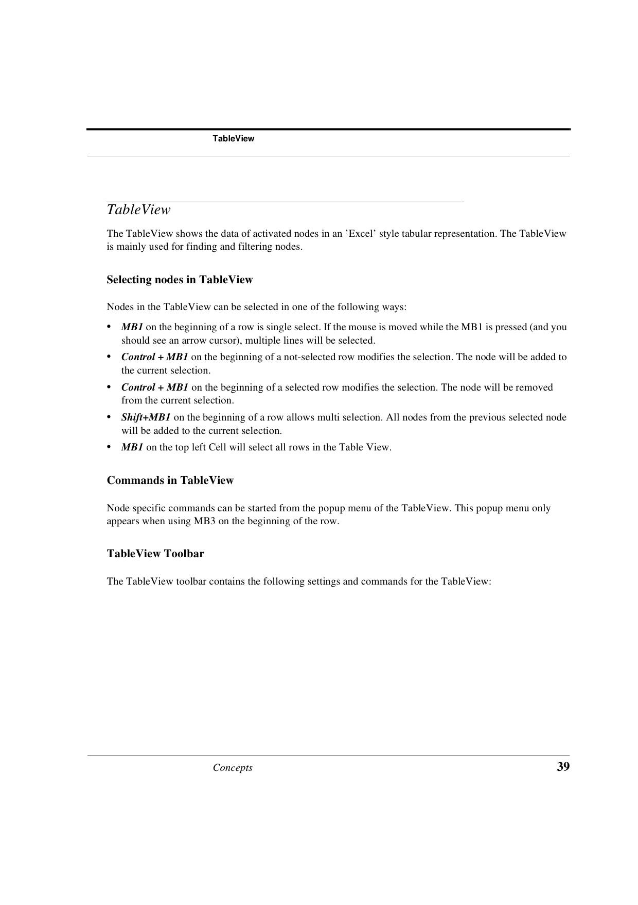
TableView
TableView
The TableView shows the data of activated nodes in an ’Excel’ style tabular representation. The TableView
is mainly used for finding and filtering nodes.
Selecting nodes in TableView
Nodes in the TableView can be selected in one of the following ways:
(cid:127) MB1 on the beginning of a row is single select. If the mouse is moved while the MB1 is pressed (and you
should see an arrow cursor), multiple lines will be selected.
(cid:127) Control + MB1 on the beginning of a not-selected row modifies the selection. The node will be added to
the current selection.
(cid:127) Control + MB1 on the beginning of a selected row modifies the selection. The node will be removed
from the current selection.
(cid:127) Shift+MB1 on the beginning of a row allows multi selection. All nodes from the previous selected node
will be added to the current selection.
(cid:127) MB1 on the top left Cell will select all rows in the Table View.
Commands in TableView
Node specific commands can be started from the popup menu of the TableView. This popup menu only
appears when using MB3 on the beginning of the row.
TableView Toolbar
The TableView toolbar contains the following settings and commands for the TableView:
Concepts 39
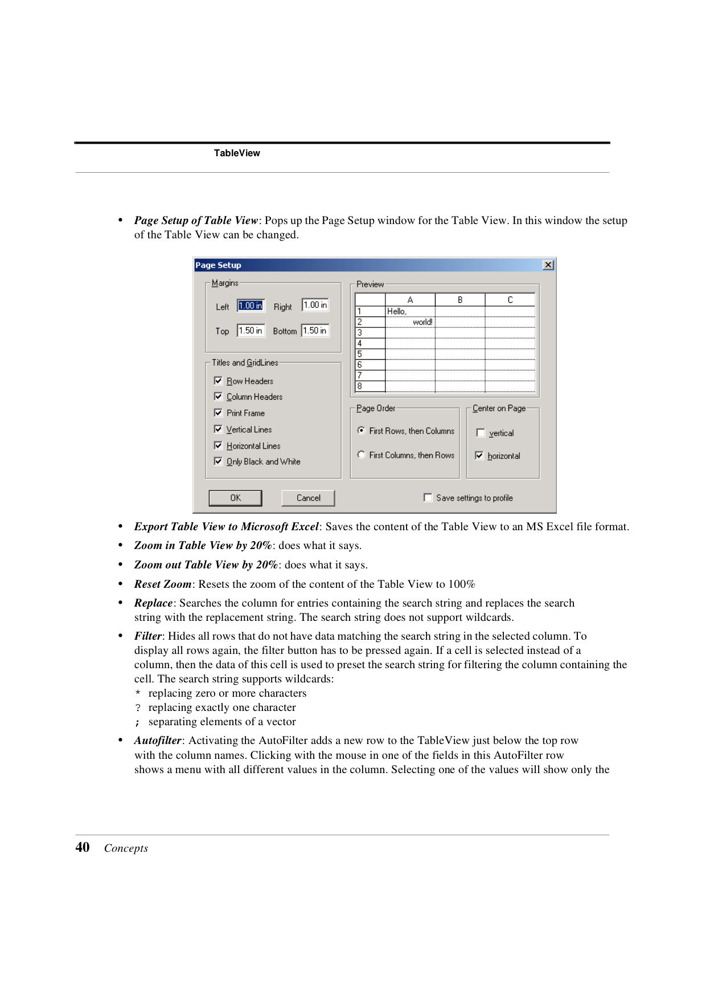
TableView
(cid:127) Page Setup of Table View: Pops up the Page Setup window for the Table View. In this window the setup
of the Table View can be changed.
(cid:127) Export Table View to Microsoft Excel: Saves the content of the Table View to an MS Excel file format.
(cid:127) Zoom in Table View by 20%: does what it says.
(cid:127) Zoom out Table View by 20%: does what it says.
(cid:127) Reset Zoom: Resets the zoom of the content of the Table View to 100%
(cid:127) Replace: Searches the column for entries containing the search string and replaces the search
string with the replacement string. The search string does not support wildcards.
(cid:127) Filter: Hides all rows that do not have data matching the search string in the selected column. To
display all rows again, the filter button has to be pressed again. If a cell is selected instead of a
column, then the data of this cell is used to preset the search string for filtering the column containing the
cell. The search string supports wildcards:
* replacing zero or more characters
? replacing exactly one character
; separating elements of a vector
(cid:127) Autofilter: Activating the AutoFilter adds a new row to the TableView just below the top row
with the column names. Clicking with the mouse in one of the fields in this AutoFilter row
shows a menu with all different values in the column. Selecting one of the values will show only the
40 Concepts
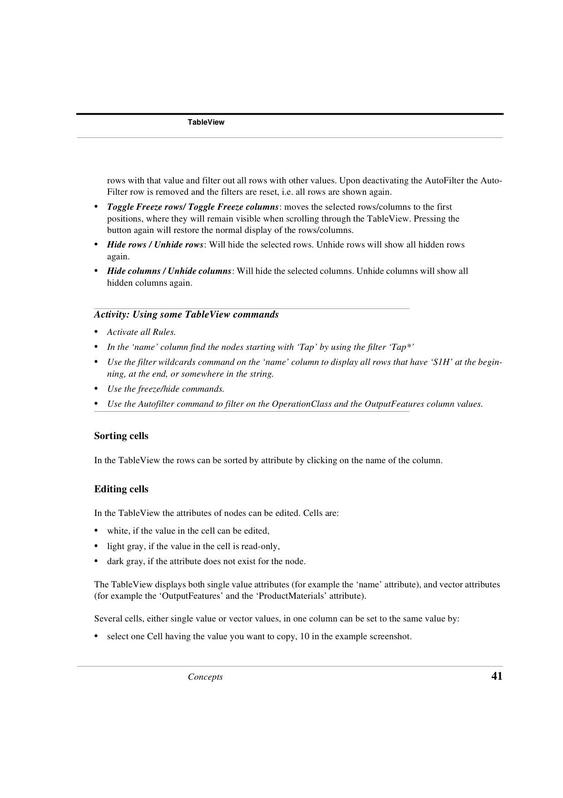
TableView
rows with that value and filter out all rows with other values. Upon deactivating the AutoFilter the Auto-
Filter row is removed and the filters are reset, i.e. all rows are shown again.
(cid:127) Toggle Freeze rows/ Toggle Freeze columns: moves the selected rows/columns to the first
positions, where they will remain visible when scrolling through the TableView. Pressing the
button again will restore the normal display of the rows/columns.
(cid:127) Hide rows / Unhide rows: Will hide the selected rows. Unhide rows will show all hidden rows
again.
(cid:127) Hide columns / Unhide columns: Will hide the selected columns. Unhide columns will show all
hidden columns again.
Activity: Using some TableView commands
(cid:127) Activate all Rules.
(cid:127) In the ‘name’ column find the nodes starting with ‘Tap’ by using the filter ‘Tap*’
(cid:127) Use the filter wildcards command on the ‘name’ column to display all rows that have ‘S1H’ at the begin-
ning, at the end, or somewhere in the string.
(cid:127) Use the freeze/hide commands.
(cid:127) Use the Autofilter command to filter on the OperationClass and the OutputFeatures column values.
Sorting cells
In the TableView the rows can be sorted by attribute by clicking on the name of the column.
Editing cells
In the TableView the attributes of nodes can be edited. Cells are:
(cid:127) white, if the value in the cell can be edited,
(cid:127) light gray, if the value in the cell is read-only,
(cid:127) dark gray, if the attribute does not exist for the node.
The TableView displays both single value attributes (for example the ‘name’ attribute), and vector attributes
(for example the ‘OutputFeatures’ and the ‘ProductMaterials’ attribute).
Several cells, either single value or vector values, in one column can be set to the same value by:
(cid:127) select one Cell having the value you want to copy, 10 in the example screenshot.
Concepts 41
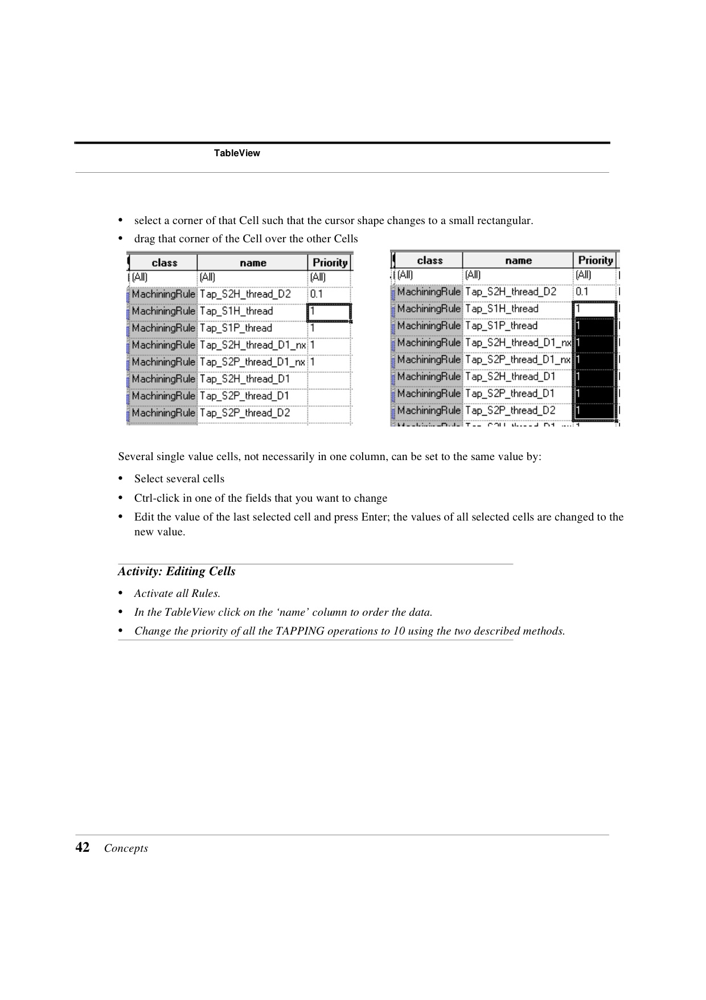
TableView
(cid:127) select a corner of that Cell such that the cursor shape changes to a small rectangular.
(cid:127) drag that corner of the Cell over the other Cells
Several single value cells, not necessarily in one column, can be set to the same value by:
(cid:127) Select several cells
(cid:127) Ctrl-click in one of the fields that you want to change
(cid:127) Edit the value of the last selected cell and press Enter; the values of all selected cells are changed to the
new value.
Activity: Editing Cells
(cid:127) Activate all Rules.
(cid:127) In the TableView click on the ‘name’ column to order the data.
(cid:127) Change the priority of all the TAPPING operations to 10 using the two described methods.
42 Concepts
Rule View
Rule View
The Rule View shows the data of a selected Rule. This is shown in a set of tabs, which are described later,
and six Rule Definition Components. These are:
Name.Contains the name of the Rule.
OperationClass (oper.).Contains the class of the operation that is to be generated based on this Rule.
Pressing the F8 key in the field will pop-up the hierarchy with operation classes. Select one item from the
list, type the value manually, or use a copy/paste sequence. The operation class and its parameters determine
the motions of the tool during the operation.
The display color will change when a valid OperationClass is defined. This also applies for the feature
classes and the tool classes. The classes and related information are defined in the customization belonging
to the RuleLibrary.
There is a special classDummyOperation that can be used to change one feature type into another feature
type. Rules of this class have no tool class.
Priority.Contains a numerical value which determines the relative priority of the Rule, compared to other
Rules producing the same More Worked Feature. The priority defines which Rule will be tried first, when
there are more Rules that can machine the same feature. Generally, we give Rules that correspond to ‘cheap’
operations (like drill operations) a higher priority than Rules that correspond to ‘expensive’ operations (like
ream or bore operations). This way we can be sure the system will try cheap Rules first and when these can
not be applied, try the next more expensive Rule etcetera.
OutputFeatures (mwf.).Contains the class of the Output Feature that is produced by the operation when
the Rule is applied. This corresponds to the shape of the feature at the end of the operation. Pressing the F8
key in the field will pop-up a scrollable list with feature classes. Select one item from the list, type the value
manually, or use a copy/paste sequence. When the Rule produces multiple features, they must be separated
by commas.
Concepts 43
Rule View
InputFeatures (lwf.).Contains the class of the Input Feature that is expected by the operation before the
Rule is applied. This corresponds to the shape of the feature at the beginning of the operation. Pressing the
F8 key in the field will pop-up a scrollable list with feature classes. Select one item from the list, type the
value manually, or use a copy/paste sequence. When the Rule consumes multiple features, they are sepa-
rated by commas.
Resources (tool.).Contains the class of the tool that is used by the operation when the Rule is applied.
Pressing the F8 key in the field will pop-up a scrollable list with tool classes. Select one item from the list,
type the value manually, or use a copy/paste sequence.
When you locate the mouse pointer in any of the above fields you get a short help text.
In addition to the six Rule Definition Components, there are Tabs containing more detailed aspects of the
Rule Definition. These are described in the following sections.
Conditions Tab
This tab shows the conditions belonging to the Rule. Conditions are used to describe specifics of the Rule,
like
(cid:127) when a Rule can be applied (application criteria)
(cid:127) which specific tool should be selected (the tool query)
(cid:127) less worked feature parameters (defining the stock material)
(cid:127) operation parameters
All conditions are interpreted as logical expressions and must be true. If one or more conditions are false, the
Rule will be rejected.
The conditions are described in an easy, Visual Basic style, text based editing environment. This allows for
free text editing (manual typing, delete, insert, copy, paste, etc.) with support for standard windows short-
cuts:
TABLE 1.Shortcuts for condition editing
Ctrl + A Select all text.
Ctrl + X Cut selected item.
Ctrl + C Copy selected item.
Ctrl + V Paste
Home Goes to beginning of current line.
44 Concepts
Rule View
TABLE 1.Shortcuts for condition editing
Ctrl + Home Goes to beginning of document
End Goes to end of current line.
Ctrl + End Goes to end of document.
Shift + Home Highlights from current position to beginning of line
Shift + End Highlights from current position to end of line
Ctrl + Left arrow Moves one word to the left at a time
Ctrl + Right arrow Moves one word to the right at a time.
For more details please refer to “Conditions concept” on page47.
Constants Tab
This tab shows the constants that can be used within conditions to improve consistency and readability. Con-
stants can be used instead of hard-coded values in expressions. See “Constants concept” on page57.
Materials Tab
This tab shows the list of materials that are defined as part materials within NX. A Rule can be made valid
for selected materials. By checking the ‘All Materials’ check box, a Rule will be valid for any material, also
for materials that will be added in the future.
Machines Tab
This tab shows the list of machines that are defined within NX. A Rule can be made valid for selected
machines. By checking the ‘All Machines’ check box, a Rule will be valid for any machine, also for those
that will be added in the future.
Explanations Tab
Contains a free textual explanation of the Rule.
Image Tab
You can add a picture to the Rule. The image can have as format .jpeg or .jpg. Use the command Add
Image... that is available in the popup menu of the Image tab.
Concepts 45
Rule View
The picture appears in the Image Tab.
Add-on Tab
This Tab enables the creation and editing of what we have called “Rule Add-ons”. Depending on the Rule’s
Operation Class, different types of Add-ons can be defined.
Examples of Add-on Object Types for aDrill Rule are:
(cid:127) Cycle - enables definition of the cycle type and its specific parameters
(cid:127) Start of Path Events - like Approach Markers, opstop and many more
(cid:127) End of Path Events
Example of Add-on-Types for aGroove_OD Rule for turning is:
(cid:127) Geometry Parent, class Containment (is mandatory)
Example of Add-on-Types for anInternal_TrimRule for Wire EDM is:
(cid:127) Geometry Parent, class Wedm_Geom (is mandatory)
Examples of Add-on-Types for aCavity_MillRule are:
(cid:127) Geometry Parent, class Mill_Area
(cid:127) CutLevel, class ZlevelBase
(cid:127) NcmLocalEngage, class EngageRetract_Default
46 Concepts
Conditions concept
Conditions concept
A condition is a logical expression which can evaluate toTRUE orFALSE.
We distinguish four categories of Conditions:
(cid:127) ‘Application Criteria” see page47.
(cid:127) ‘Tool Attributes” see page49.
(cid:127) ‘Less Worked Feature Attributes” see page51.
(cid:127) ‘Operation Attributes” see page52.
Although NX does not “know” these categories, it is good to keep them in mind and organize the condition
in these four categories.
Application Criteria
Application criteria state when a Rule may be applied. In general, application criteria are related to the size
and quality of the More Worked Feature. Examples are:
(cid:127) The roughnesses that can be achieved: e.g. drilling is only allowed until a certain roughness, otherwise
reaming/boring should be used.
(cid:127) The size tolerances that can be achieved: e.g. drilling is only allowed until a certain diameter tolerance,
otherwise boring or reaming should be used.
(cid:127) The shape of the feature: e.g. drilling with a straight drill will finish the shape only when there are no
chamfers.
(cid:127) The size of the feature: e.g. drilling is only allowed when the feature is not too deep or too large, other-
wise another operation type should be used.
A Rule can only be applied to a feature when all itsapplication criteria areTRUE. When the expression eval-
uates toFALSE, evidently the Rule may NOT be applied.
An example of an application criterion for using a twist drill is
:
Concepts 47
Conditions concept
REM Application Criteria
mwf.DEPTH / mwf.DIAMETER_1 < 6
$$ Feature is too deep for DRILL cycle
Each line in this example has a different function. The first line starting with ‘REM’ is considered as remark
only and does not have any effect on the behavior of the program. The programmer can use remarks to
include short explanations or observations. It is advised to add remarks so others can understand the behav-
ior of the Rule and the reason for the conditions. There can be several lines of remarks following each other,
but each line needs to start with ‘REM ’.
The second line
mwf.DEPTH / mwf.DIAMETER_1 < 6
is the actual condition. In this case defining that theDEPTH attribute of the mwf (More Worked Feature)
should be smaller than 6 times the DIAMETER_1 of the mwf. When applied to a manufacturing feature,
with its actual parameter values forDEPTH andDIAMETER, this condition is false, the Rule will be
rejected and the system will continue evaluating the next Rule.
The third line starting with $$ defines the message that will be output when the condition is false and thus
the rule is rejected. This message is part of the messages that users will see if they want to analyze why a
certain solution was found. As a consequence, these messages should be clear enough for the users to be able
to understand why a Rule was not used. When the Rule is denied because of this condition, the text prefixed
with “$$” will be printed in the Information window (if displayed) and to the MSAnalysis.lis file on the
$TEMP directory.
In the above examples,DEPTH andDIAMETER_1 are attributes ofSTEP1HOLE. In order to obtain a
complete list of attributes you can use in expressions, type “mwf” followed by a dot “.” and select one from
the list.
When the editor recognizes valid entries, it will display them in a different color. These colors are defined in
the Preferences.xml that can be found in the MACH\machining_knowledge_editor directory.
Another example of an application criterion is:
IT_class_ISO(mwf.DIAMETER_1, mwf.DIAMETER_1_UPPER, mwf.DIAMETER_1_LOWER) >= 11
$$ Feature's tolerance class cannot be achieved with this Rule
48 Concepts
Conditions concept
In the IT-class system for tolerancing dimensions, a low value denotes a tighter tolerance than a high value.
So if the IT class of an actual feature is 7, it is too tightly toleranced to be drilled. Then this application crite-
rion will evaluate toFALSE and the Rule will not be applied.
In the above example, IT_Class_ISO( ) is a function
delivering an integer number as result. When placing
the mouse over the function text, a tool tip will appear
explaining the function, see left.
The default values for _upper and _lower bandwidths of
dimensional parameters like theDIAMETER are in file
mach\resource\feature\metric | english\feature_tolerances.xml.
When _upper and _lower bandwidth have the same value, i.e. the tolerance is zero, then the function returns
‘undefined’. The rule will not be rejected on this test.
In order to obtain a complete list of functions you can use in expressions, press F8 and select one from the
list.
Some other examples of rather common Application Criteria are:
mwf.SIDE_ROUGHNESS_1 > 12.5
$$ Features side roughness cannot be achieved
mwf.DIAMETER_1 < 63
$$ Feature's diameter is too large
mwf.DEPTH_TOP_CHAMFER > 0.01
$$ Feature must have a top chamfer
Tool Attributes
The Tool Query defines the size of the tool that will be used for the operation. Examples are:
(cid:127) The diameter of the tool should be corresponding to the diameter of the mwf: e.g. the drill diameter
should be smaller than the maximum toleranced size of the mwf diameter but should be larger than the
minimum toleranced size.
Concepts 49
Conditions concept
(cid:127) The tool should be long enough: e.g. the length of the drill should be larger than the depth of the hole.
A Rule will have one or more expressions to specify tool attributes like:
tool.Diameter >= mwf.DIAMETER_1 + mwf.DIAMETER_1_LOWER
tool.Diameter <= mwf.DIAMETER_1 + 0.5*(mwf.DIAMETER_1_UPPER +
mwf.DIAMETER_1_LOWER)
tool.FluteLength > mwf.DEPTH
The expressions above were entered using copy and paste, see screenshot below.
In the above example,Diameter, and FluteLength are attributes ofTWIST_DRILL. In order to obtain a
complete list of attributes you can use in expressions, type “tool” followed by a dot “.” and select one from
the list.
The text printed, when one of these conditions evaluates toFALSE, says “Conflict in one of the tool size spec-
ifications”. That would happen, for instance, if we had mistakenly entered something conflicting like:
tool.POINT_ANGLE = 120 AND tool.POINT_ANGLE = 118
Note The operator AND is equivalent to putting the expressions on separate lines.
A Rule should not be rejected based on conditions defining tool Attributes. When the cutting tool of the
class is not available, the Rule will not be applied and NX will try the next Rule. In that case, the $$text will
not be displayed.
Tool Sort Order
NX will try to use the tool with the biggest Cutter Diameter that is still smaller than the maximum as speci-
fied by the expressions. As a consequence, the lower limit only needs to be defined when it is essential for a
correct tool selection, like for drill type operations. For milling operations a lower limit is most of the times
not necessary. For this to function, NX must know which attribute holds the size of the Cutter Diameter.
This is a trivial issue, but since the tool classification is free, it is necessary to appoint one of the tool’s
attributes to be the Cutter Diameter. This is done in the Customization View with command Set as Cutter
Diameter...See “Set as Cutter Diameter, Set as Cutter Length” on page183.
50 Concepts
Conditions concept
Generally, more than one tool of the desired class satisfies the tool query. It is important to avoid choosing a
too long and therefore unstable tool. Tools are ordered by their length. For this to function, NX must know
which attribute holds the size of the Cutter Length. This is a trivial issue, but since the tool classification is
free, it is necessary to appoint one of the tool’s attributes to be the Length. This is done in the Customization
View with commandSet as Cutter Length.
Less Worked Feature Attributes
When defining Less Worked Feature attribute values we define the in-process geometry. The screenshot
above shows the drill point that exists before drilling the hole.
If no Less Worked Feature is required, the class BLANK is used. This means the operation does not need a
defined starting geometry.
NoteIn general, there should be at least one operation with BLANK as LWF for every MWF feature type.
Otherwise there will be no complete solution found for a specific feature type.
In order to calculate the dimensions we need to be familiar with the feature classes and their attributes.
To specify the dimensions of the drill point (classPOCKET_ROUND_TAPERED) we need following expres-
sions:
lwf.DIAMETER_1 = mwf.DIAMETER_1 * 0.5
lwf.DIAMETER_2 = 0
lwf.DEPTH = lwf.DIAMETER_1/2
In the above example,DIAMETER_1,DIAMETER_2and DEPTH are attributes of Less Worked Feature
POCKET_ROUND_TAPERED. In order to obtain a complete list of attributes you can use in expres-
sions, type “lwf” followed by a dot “.” and select one from the list.
When there is no expression for the lwf attribute, NX copies the corresponding value from the mwf. This
works only if the attribute names match exactly. So, if theDEPTH of the feature does not change, you donot
need to enter the expression:
Concepts 51
Conditions concept
lwf.DEPTH = mwf.DEPTH
Also, you donot need to enter expressions like:
lwf.X_POSITION = mwf.X_POSITION
lwf.Y_POSITION = mwf.Y_POSITION
lwf.Z_POSITION = mwf.Z_POSITION
When the LWF is of classBLANK, we do not care about the LWF class and hence do not need to specify
any LWF attributes.
For readability, it is good practice to have lwf attributes on the left side of the equation.
Operation Attributes
The last category of conditions specifies attributes of the Rule’s operation.
Above a screenshot with some examples of assignments to operation attributes. In order to obtain a complete
list of attributes you can use in expressions, type “oper” followed by a dot “.” and select one from the list.
You can use the + operator to concatenate any number of strings. Examples are depicted below:
Since MKE 8.0.1 there is the possibility to define operation parameters in Add-ons. It was already possible
to define operation parameters in the rule's conditions with the prefix “oper.”. If the same operation parame-
ter is defined both in the condition tab and in an Add-on and the values are conflicting then the Add-on will
be rejected.
The main reason for having operation parameter assignments in an Add-on, rather than in the condition tab,
is the timing of the assignment. Expressions in the Add-on are evaluated at the very end of Create Feature
Process, when the operation is selected and a tool is selected. Whereas the expressions in the Conditions tab
52 Concepts
Conditions concept
are continuously re-evaluated during the operation and tool selection process. This behavior may lead to
unexpected and undesirable results in situations where feature parameter ranges and tool parameters are
used to set operation attributes such as the operation name.
It is recommended to define the operation parameters in the Rule’s Add-ons, rather than in the Rule’s Condi-
tion tab. This ensures that operation parameter assignments will not influence the operation selection itself.
In other words: a rule will never be rejected due to an operation parameter assignment when the assignment
is done in the Rule’s Add-on.
Concepts 53
Expression syntax | Functions
Expression syntax | Functions
This section gives a short overview of the expression syntax including the operators and functions that can
be used within the expressions.
Table 2—Operators
Operator Explanation
= equal
< smaller than
<= smaller than or equal
> greater than
>= greater than or equal
< > not equal
+ addition(numbers or
char strings)
- subtraction
* multiplication
/ division
^ power
AND logical
OR logical
NOT logical
( left parenthesis
) right parenthesis
IF THEN ELSE conditional expression
Notea - b + c is evaluated as (a - b) + c . It is advised to use brackets for clarity and correct evaluation.
54 Concepts
Expression syntax | Functions
Functions
Press F8 while in the Conditions Tab to obtain a list of functions:
TABLE 3.Functions to be used in expressions
output function(argument) explanation
[degrees] ACOS (number) returns the arc cosine.
[degrees] ASIN (number) returns the arc sine.
[degrees] ATAN (number) returns the arc tangent.
[number] COS (degrees) returns the cosine.
[number] SIN (degrees) returns the sine.
[number] TAN (degrees) returns the tangent.
[integer] CEIL (number) returns the smallest integer >= input value.
[integer] CEIL_RANGE (number) The input value can be a range, bound sin-
gle or double sided.
IF (a<=number<=b) THEN CEIL((a+b)/2)
Otherwise same as CEIL(number)
[integer] FLOOR (number) returns the largest integer <= input value.
[integer] FLOOR_RANGE (number) Similar to CEIL_RANGE
[boolean] is_defined(arg) returnsTRUE if arg is defined;FALSE other-
wise.
returns FALSE if arg does not exist;
arg can be of type real, integer or string;
[integer] IT_class_ISO(number , Example:
number,number) IT_class(20,0.021,0) = 7
Note: returns undefined if 2nd param = 3rd.
[double] roughness_value(string) returns the roughness value of an attribute
[boolean] on_same_axis(mwf1 , returns true if the two features are on the
mwf2) same axis
[double] distance(mwf1 , mwf2) returns the distance between two features
[real] ToReal(string) converts a number in string format to real
New in 8.0.1
Concepts 55
Expression syntax | Functions
TABLE 3.Functions to be used in expressions
output function(argument) explanation
[integer] ToInt(string) converts a whole number in string format to
real
[string] ToString(param,int) converts a real to a char string with (int)
decimals shown. More decimals are trun-
cated.
In addition to the functions above which are hard-coded, see the system functions defined in the Functions
tab.
56 Concepts
Constants concept
Constants concept
Constants are objects with a name, a type and a value. We use them in conditions instead of ‘hard-coded’
values, for instance:
oper.Depth = mwf.DEPTH + constant.DEPTH_EXTEND
instead of
oper.Depth = mwf.DEPTH + 2
Using constants instead of hard-coded values eases the readability and maintainability of expressions.
Another advantage of using constants is the possibility to vary the values for any combination of machine /
material. If there is no value specified then the default is used.
Above screenshot shows aconstant.Pre_Drill_Limit with a different value for material ALUMINIUM.
A constant can be of datatype ‘double’, ‘integer’, or ‘string’.
Different constant values can be defined for metric and inch part files. Based on the units used in the part
file, NX will automatically select the correct values of the constants.
(cid:127) If you define a constant value in metric (mm) only then NX will calculate the english (inch) value by
division by 25.4.
(cid:127) If you define a constant value in english (inch) only then NX will calculate the metric (mm) value by
multiplication with 25.4.
(cid:127) If you define a value for both english (inch) and metric (mm) unit systems then these values will be used
by NX with no calculation.
Concepts 57
Constants concept
Scope of a Constant
Preferably we declare a Constant ‘globally’, that is on the RuleLibrary level, with its default value and if
applicable its values per machine / material combination.
We use the Constant locally in a Rule’s Conditions and when the value should be different from the global
value we can define the Constant locally at Rule level.
Constant Command Icons
(cid:127) Opens a dialog window to declare a new Constant and its default value.
(cid:127) Cuts selected Constant and saves it on the clipboard.
(cid:127) Copies selected Constant and saves it on the clipboard.
(cid:127) Paste from the Clipboard
(cid:127) Delete selected Constant
(cid:127) Edit selected Constant (alternative for double click)
These commands are also available in the pop-up menu of the list of constants.
Using Constants in Expressions
In order to obtain a complete list of Constants you can use in expressions, type “constant” followed by a dot
“.” and select one from the list.
It is possible to use a constant even before it is declared. However, theCheck Validity command will stum-
ble over this and you can declare afterwards.
58 Concepts
Finding Rules based on criteria
Finding Rules based on criteria
There are several ways of finding and searching within the Machining Knowledge Editor. These options are
described in the following section.
Find in all Rule Conditions
Use commandFind in all Rule Conditions in the condition Tab or on the RuleLibrary, to activate (so
they’re displayed in TableView) all Rules having the search string.
Find/Replace
To search for any text in the conditions and replace that text. When at the end of the Rule’s condition, the
command asks if it should continue to search in the next Rule unless the ‘Wrap around search’ is checked
active.
Using TableView autofilter
(cid:127) Use TableView to filter the RuleLibrary on any criteria, like
Rules for machining a feature of class STEP1HOLE.
Concepts 59
Finding Rules based on criteria
Using TableView Filter Column
(cid:127) You can search a selected column using the Wildcard search. For instance you can find all activated
Rules who’s name starts with Chamfer:
Activity: Searching the Rules
(cid:127) Use the table view to find all Rules with the TAPPING OperationClass.
(cid:127) Find all Rules that use the condition ‘tool.Diameter < mwf.DIAMETER_1’
60 Concepts
Testing the Rules
Testing the Rules
Check Validity
Once a Rule is complete, the Rule can be checked by compiling the Rule or some of the conditions. Compi-
lation of the Rule conditions can be done on different levels. Typically this is done to test conditions on
validity ‘on the fly’.
(cid:127) Select one or more lines in the conditions Tab and execute Check Validity (selection) from the pop-up
menu.
(cid:127) Select the Rule node in the RuleLibrary and executeCheck Validityfrom the pop-up menu.
If the compiler discovers mistakes these are indicated by bookmarks. Locate these bookmarks and correct
the mistakes with the help of the compiler’s error message.
Activity: Check Validity
(cid:127) Select a Rule and check the validity of some of the conditions.
(cid:127) Select several Rules and check the validity of the Rules.
Testing in NX withCreate Feature Process
Once a library has been saved, theCreate Feature Process command in NX can be used to test the Rules.
This can be done by selecting features in the Manufacturing Feature Navigator (MFN) and starting the Cre-
ate Feature Process... from the popup menu.
Reading the Information window and the MSAnalysis.lis
After each execution ofCreate Feature Processthere will be a report in the Information window and in the
MSAnalysis.lis file on the %TEMP% directory.
At the beginning of the file, the used source file is mentioned, for instance:
Knowledge library: C:\Program Files\UGS\NX
7.5\mach\resource\machining_knowledge\machining_knowledge.xml
When a Rule is denied because of a condition which evaluated to False, the $$text after that condition will
be printed. For instance:
Concepts 61
Testing the Rules
mwf.Diameter_1 >= 10.0
$$ Rule denied because Diameter_1 of the feature is < 10.
Activity: Testing the RuleLibrary
(cid:127) Load a test model in NX
(cid:127) Switch to Manufacturing.
(cid:127) In the Feature Navigator, recognize features with theFind Features command
(cid:127) Check if you have a workpiece defined in the Geometry View.
(cid:127) Start theCreate Feature Process command on a feature.
62 Concepts
Rules for multiple More Worked Features
Rules for multiple More Worked Features
It is allowed, for feature mapping rules only, to have multiple mwf’s separated by commas.
AttributeRule.type [direct,composed,indirect] determines the applicability of the Rule.
(cid:127) direct
mwfOR mwfOR mwf
Attributes in conditions are prefixed with “mwf”. Since only attributes can be used that are in all mwf
classes there can be no confusion.
(cid:127) composed
mwfAND mwfAND mwf
Attributes in conditions must be pre-fixed with mwf_1, mwf_2 etcetera.
This is not yet supported in for operation selection rules.
It is supported in NX6 for feature mapping rules.
(cid:127) indirect
Rule will be filtered out in any case duringCreate Feature Process... command.
Concepts 63
Rules for multiple More Worked Features
64 Concepts
How Operation Selection works
CHAPTER 3
This chapter deals with the Operation Selection that was introduced in NX6. It
gives some background on how things work. NX CAM programmers do not neces-
sarily have to be aware of this.
What is Operation Selection?
Rule–based operation selection is a proven technology seamlessly integrated into
NX that helps you automatically create operations such as milling, drilling and tap-
ping from a generic template. Rule–based operation selection is also applicable to
Turning and Wire EDM operations.
It lets you select features such as holes, slots, and pockets from any source, includ-
ing features that are user defined, identified, recognized or tagged.
It applies best practice machining rules on the features while taking into account
certain Part Manufacturing Information (PMI).
Benefits of feature based Operation Selection are:
(cid:127) Standardize on best practice machining knowledge. The software finds the best
solution for a machining task within a company’s environment.
(cid:127) Save time with process automation.
65
Machining Knowledge Editor and NX
Machining Knowledge Editor and NX
There is a clear separation between the tool of the Subject Matter Expert, the Machining Knowledge Editor
(above the dashed line) and the NX Programmer.
66
The Machining Knowledge Source is created using the MKE. NX can be configured to use this source file.
See “CAM Configuration dependent customization” on page180.
67
Examples of operation sequences
Examples of operation sequences
STEP1HOLE and STEP1HOLE_THREAD in 4 operations.
The commandCreate Feature Process... in NX will start reasoning backward, using Rules, from the final
feature (Output Feature) to the blank feature (Input Feature). This is the most import thing to keep in mind
68
STEP1HOLE and STEP1HOLE_THREAD in 4 operations.
STEP1HOLE and STEP1HOLE_THREAD in 4 operations.
when implementing your company’s machining knowledge in the MKE.
Observe thatSpot_Drill andDrill_S1H andChamfer_S1H are three elemental operations that appear in
the solution for both features. This is an essential concept: elementary rules are defined only once and are
applied whenever appropriate. This sets aside the NX FBM solution to other systems or custom made solu-
tions which find solutions by definining the complete set of operations for every case that needs to be auto-
mated. In NX FBM, a modification to a Rule will have effect in all instances where the rule will be applied.
69
STEP1HOLE and STEP1HOLE_THREAD in 4 operations.
Finding a solution using elementary rules
Finding a solution using elementary rules
In this example we will follow the reasoning process that is followed when searching for a solution for a fea-
ture of type STEP1HOLE with a diameter 12H7.
First the candidate rules will be selected. These are the rules that produce a feature of type STEP1HOLE. By
filtering the Table View on STEP1HOLE we can create that list in the MKE. NX Operation Selection will
create the same list internally.
Operation Selection will first try the candiate Rule with highest priority. We have given the rules priorities
such that the least expensive has the highest priority. In the example this means that Drill_S1H is tried first.
It cannot be applied because a diameter tolerance of H7 is not achievable when using a twist drill.
That is one of the Rule’s application criteria. This road ends which is denoted by:
70
STEP1HOLE and STEP1HOLE_THREAD in 4 operations.
STEP1HOLE and STEP1HOLE_THREAD in 4 operations.
Then the next expensive Rule, Drill_in_center_S1H is tried. Also this Rule will fail for the same reason as
Drill_S1H : a tolerance of H7 cannot be achieved with a twist drill.
71
STEP1HOLE and STEP1HOLE_THREAD in 4 operations.
Finding a solution using elementary rules
We skip a few candiate Rules that are rejected and arrive at Ream_S1H. For this Rule all conditions are true,
and it is really applied which is denoted by a new node:
72
STEP1HOLE and STEP1HOLE_THREAD in 4 operations.
STEP1HOLE and STEP1HOLE_THREAD in 4 operations.
The new node is an in-process feature of, again, type STEP1HOLE. The Ream_S1H conditions will have
loosened the tolerance on its diameter.
The in-process STEP1HOLE is the new target for the Operation Selection. And what we have seen before
happens again: the candidate list with Rules is tried in order of priority, highest first.
We see that Drill_S1H is rejected because of a general application settings that rejects drilling directly with-
out centering first.
The second Rule is Drill_in_center_S1H. For this Rule all conditions are true, and it is really applied which
is denoted by a new node:
73
STEP1HOLE and STEP1HOLE_THREAD in 4 operations.
Finding a solution using elementary rules
The new node is an in-process feature of type POCKET_ROUND_TAPERED.
The in-process POCKET_ROUND_TAPERED is the new target for the Operation Selection. And what we
have seen before happens again: the candidate list with Rules is tried in order of priority, highest first.
The applied Rule is Spot_Drill. For this Rule all conditions are true, and it is really applied which is denoted
by a new node:
The input feature of Spot_Drill is of type BLANK.
The Operation Selection has successfully found a suitable set of rules to completely machine this feature.
The resulting process in this simplified example is : Spot_Drill => Drill => Ream.
NX will now create the operations in the Operation Navigator.
As you have surely noticed, the result is found in the reversed order, reasoning backward from the final fea-
ture to the blank feature. Please take a few moments to consider the human approach in finding such a solu-
tion. Do we solve this sort of problems much different ?
Information Window
On your %temp% directory you will find a file MSAnalysis.lis. It has the analysis of the reasoning process
including candidate Rules that were rejected.
For a full understanding of how the solution came about, this file is essential.
74
Information Window
Information Window
With File > Utilities > Customer Defaults...you can activate the check box “Display Information...etc” to
have the file popping up after eachCreate Feature Process...
75
Information Window
Finding a solution using elementary rules
76
Information Window
MKE Exercises: Drilling
CHAPTER 4
Before proceeding, please make sure you have completed reading “Machining
Knowledge Editor Concepts”.
In this chapter you find exercises to create a number of example MachiningRules:
(cid:127) Drill
(cid:127) Tap
(cid:127) Ream
(cid:127) Drill-up
(cid:127) Mill contour
(cid:127) Counterbore
After completing these exercises you are well equiped to ‘translate’ your com-
pany’s best manufacturing practices into MachiningRules that can be used by NX.
The exercises provide detailed instructions. It should be possible to follow this
training off-line, self-paced.
77
Creating a new RuleLibrary file
Creating a new RuleLibrary file
The Rule Library file is an xml source file containing
(cid:127) MachiningRules (tab Machining Knowledge)
(cid:127) FeatureRecognitionRules (tab Feature Recognition)
(cid:127) MappingRules (tab Feature Mapping)
(cid:127) a FunctionLibrary (tab Functions)
(cid:127) the Customization
We will focus on MachiningRules in this part of the Tutorial.
There are several options when creating a new RuleLibrary file, including:
1. Use an existing RuleLibrary file. You can create your own MachiningRuleLibrary in this file to separate
your own rules from the existing rules. Your NX users will be responsible for selecting the right library
duringCreate Feature Process...
2. Create a new RuleLibrary file and start from scratch. You will still have the possibility to import rules
from other libraries, using the commands MB3 > Export/Import.
Activity: Creating a new RuleLibrary file
We will go top-down through the cam configuration in this example.
(cid:127) Copy cam_general.dat and rename to ‘my_cam_general.dat’ on the UGII_CAM_CONFIG_DIR.
(cid:127) Edit my_cam_general.dat and change the MACHINING_KNOWLEDGE entry pointing to MyRules.dat.
(cid:127) Copy machining_knowledge.dat and rename to ‘MyRules.dat’ on the
UGII_CAM_MACHINING_KNOWLEDGE_DIR .
78
Creating a new RuleLibrary file
(cid:127) Edit MyRules.dat and change the MACHINING_KNOWLEDGE_LIBRARY entry pointing to MyRules.
(cid:127) Launch the MKE from the Start menu > Siemens NX10 > Manufacturing Tools > Machining Knowledge
Editor.
(cid:127) Create a new RuleLibrary with File > New.
(cid:127) Use ‘my_cam_general.dat’ from the UGII_CAM_CONFIG_DIR.
(cid:127) Save the initial source file as MyRules.xml
Activity: Setting the Cutter Diameter and Cutter Length
Since we are working on a new source file, we must appoint one of each tool’s attributes to be the Cutter
Diameter.
(cid:127) Open the Customization View by pressing the Customization tab.
(cid:127) Expand the Drilling tree in the Tools tree.
(cid:127) Select node Drilling
(cid:127) Right-click Diameter attribute in the attributes list and selectSet as Cutter Diameter ....
The Diameter attribute in inherited by all Drilling tools and is now
used by the software as the Cutter Diameter.
(cid:127) Expand node Drilling and Select node Twist Drill
(cid:127) Right-click FluteLength attribute in the attributes list and selectSet as Cutter Length....
The Flute Length attribute is specific for the Twist Drill and is not
further inherited. It is now used by NX as the Cutter Length.
(cid:127)Do the same for classes TAP and CHUCKING_REAMER.
(cid:127)PressSave to store your changes.
79
Creating a first Rule
Creating a first Rule
What this example intends to explain
(cid:127) The basics of creating a singleMachiningRule
(cid:127) How to test theMachiningRule
All conditions for this MachiningRule are presented here. Please keep in mind that these are just examples,
as is the MachiningRule itself. Especially conditions of category “Application Criteria” are always customer
specific.
Explanatory picture
We start by defining aMachiningRule which describes how to drill a straight hole in full material using a
twist drill. When creating a newMachiningRule, we have to define the following items:
(cid:127) TheMore Worked Feature class, describing the shape of the end geometry.
(cid:127) TheLess Worked Feature class, describing the shape of the starting geometry.
(cid:127) The cuttingtool class.
(cid:127) Theoperation class describing the machining strategy.
In our example, this maps to the following:
(cid:127) More Worked Feature: a straight through hole corresponds to the feature class ‘STEP1HOLE’.
(cid:127) Less Worked Feature: when starting from full material this corresponds to the feature class ‘BLANK’.
(cid:127) Tool: the twist drill corresponds to the ‘TWIST_DRILL’ cutting tool class.
(cid:127) Operation: the drill motion is defined by the ‘DRILLING’ strategy.
80
Creating a first Rule
Activity: Create a MachiningRuleLibrary
(cid:127) Press the Machining Knowledge tab in the TreeView.
(cid:127) Move the mouse over ‘MachiningKnowledge’, right-click and chooseNew... from the menu.
(cid:127) Check classMachiningRuleLibrary and leave the amount to 1.
(cid:127) Press OK to create a new empty library.
(cid:127) Rename MachiningRuleLibrary* to TrainingRules.
You now have created this:
Activity: Create a MachiningRule for Drilling a Step1Hole
(cid:127) Move the mouse over node ‘TrainingRules’, right-click and choose New... from the menu.
(cid:127) Check classMachiningRule and leave the amount to 1.
(cid:127) Expand ‘TrainingRules’ by clicking the + sign and select MachiningRule*.
(cid:127) Rename MachiningRule* to Drill_STEP1HOLE_Direct.
You now have created this:
(cid:127) Press F8 in the OperationClass field and select DRILLING in the operation class tree.
81
Creating a first Rule
(cid:127) Press F8 in the More Worked Features field and select STEP1HOLE from the list.
(cid:127) Click in the Less Worked Features field and enter the class name BLANK .(You can select from the list as
well.)
(cid:127) Press F8 in the Tool field and select TWIST_DRILL in the tool class tree.
(cid:127) Set the Priority = 3.
Conditions
By creating theMachiningRule, we only defined that you can drill a straight hole with a drill. But we did
not yet define any such detail conditions as:
(cid:127) when we want to use this MachiningRule,
(cid:127) what size of tool do we want to use,
(cid:127) or how deep we want to drill.
Without these conditions, the system will use this operation for any hole independent of size or quality, and
will select any drill with from the library with largest diameter. In order to create a useful MachiningRule,
this information needs to be added. This is done by defining conditions for the MachiningRule. In general,
the conditions can be grouped into 4 categories:
(cid:127) “(1) Application Criteria” describing when the MachiningRule is allowed.
(cid:127) “(2) Tool attributes” describing the details of the tool.
(cid:127) “(3) Less Worked Feature attributes” describing the details of the starting geometry.
(cid:127) “(4) Operation Attributes” describing the details of the operation.
The next sections will detail these conditions.
(1) Application Criteria
Application criteria define when a MachiningRule is allowed. In general, these conditions are related to the
size and quality of the More Worked Feature. Examples are:
(cid:127) The roughnesses that can be achieved: e.g. drilling is only allowed until a certain roughness, otherwise
reaming/boring should be used.
(cid:127) The size tolerances that can be achieved: e.g. drilling is only allowed until a certain diameter tolerance,
otherwise boring or reaming should be used.
(cid:127) The shape of the feature: e.g. drilling with a straight drill will finish the shape only when there are no
chamfers.
82
Creating a first Rule
(cid:127) The size of the feature: e.g. drilling is only allowed when the feature is not too deep or too large, other-
wise another operation type should be used.
Conditions are defined as text in the Conditions tab of the Machining Knowledge Editor. An example of a
condition is the following group of lines:
REM This condition checks for the achievable side roughness
roughness_value( mwf.SIDE_ROUGHNESS_1 ) >= 1.6
$$$$ Cannot achieve roughness on side surface
Each line in this example has a different function. The first line starting with ‘REM’ is considered as remark
and do not have any effect on the behavior of the program. You can use remarks to include short explana-
tions or observations. It is advised to add remarks so others can understand the behavior of the Machinin-
gRule and the reason for the conditions. There can be several lines of remarks following each other, but each
line needs to start with ‘REM ’.
The second line
roughness_value(mwf.SIDE_ROUGHNESS_1) >= 1.6
is the actual condition defining in this case that the SIDE_ROUGHNESS_1 attribute of the mwf (More
Worked Feature) should be larger or equal than 1.6. The MachiningRule is allowed if the condition is true.
In this example, the MachiningRule will be allowed if the SIDE_ROUGHNESS_1 = 1.6 or larger but will
not be allowed if SIDE_ROUGHNESS_1 is smaller. If a condition is false, the whole MachiningRule will
be rejected and the system will continue with evaluating the nextMachiningRule.
The third line starting with $$ defines the message that will be displayed when the previous condition is
false. This message is part of the messages that users will see if they want to analyze why a certain solution
was found. Therefore these messages should be clear enough for the users to understand why aMachinin-
gRule was not used.
Another good example of an application criteria condition is:
IT_class_ISO(mwf.DIAMETER_1,mwf.DIAMETER_1_UPPER,
mwf.DIAMETER_1_LOWER) >= 10
$$ IT class Diameter_1 cannot be achieved.
Another good example of an application criteria condition is:
mwf.DIAMETER_1 <= 25
$$ Diameter_1 is too big to drill at once
83
Creating a first Rule
(2) Tool attributes
Tool attributes criteria define the shape of the tool that will be used for the operation. In NX this is this is the
Tool Query. Examples are:
(cid:127) The diameter of the tool should be corresponding to the diameter of the mwf: e.g. the drill diameter
should be smaller than the maximum toleranced size of the mwf diameter but should be larger than the
minimum toleranced size.
(cid:127) The tool should be long enough: e.g. the length of the drill should be larger than the depth of the hole.
This corresponds to criteria like:
tool.Diameter >= mwf.DIAMETER_1 + mwf.DIAMETER_1_LOWER
tool.Diameter <= mwf.DIAMETER_1 + mwf.DIAMETER_1_UPPER
tool.FluteLength > mwf.DEPTH + constant.Thru_Hole_Bottom_Offset
(3) Less Worked Feature attributes
When defining Less Worked Feature attribute values we define the in-process geometry. Since we start drill-
ing from blank, which means we do not bother about the starting geometry, nothing needs to be specified
here for this rule.
(4) Operation Attributes
The last category of conditions specifies attributes of theMachiningRule’s operation. Examples are:
oper.PROGRAM_ORDER_GROUP = "DRILL"
oper.Bottom_Offset_Value = constant.Thru_Hole_Bottom_Offset
oper.Geometry_Roles = mwf.FACES_CYLINDER_1
Activity: Define Conditions for Drilling a Step1Hole
(cid:127) Click the Conditions Tab of MachiningRule Drill_STEP1HOLE_Direct
(cid:127) Create or Copy the conditions from the previous sections into the conditions area. Add the REM in front
of the remarks. You can copy from a PDF document if you choose Tools > Basic > Select in the Adobe
Reader.
84
Creating a first Rule
(cid:127) Move the mouse into the conditions area, click MB3 and chooseCheck Validity (selection)
(cid:127) The result should look as depicted above. The lines containing an undefined Constant are bookmarked.
Constants
The only constant used in the Conditions, Thru_Hole_Bottom_Offset, should be declared and have a default
value. It is good practice to declare a constant on the MachiningRuleLibrary level, so its default value is
shared by all MachiningRules in the MachiningRuleLibrary.
Activity: Defining a Constant
(cid:127) Select ‘TrainingRules’ and
(cid:127) Press the Constants Tab.
(cid:127) Define a new constant, either by clickingMB3 > New in the constant area or by clicking the New icon.
(cid:127) Define Name = Thru_Hole_Bottom_Offset and as Default Value = 3 mm.
(cid:127) Select the “inch to mm factor” = 25.4.
(cid:127) OK in the Options Dialog window.
(cid:127) In the Machine/Material matrix, define a value = 4 mm for when the product material is
CARBON_STEEL. This overrides the value 3 mm for all machines when the workpiece material is
CARBON_STEEL.
(cid:127) In the tree, select node “Drill_STEP1HOLE_Direct”, right-click in the Conditions and choose Check
Validity (selection).
(cid:127) There should be no more compiler errors now.
85
Creating a first Rule
Materials and Machines
Activity: Select for which Materials and Machines the MachiningRule is valid
(cid:127) Select “Drill_STEP1HOLE_Direct” and click the Materials tab.
(cid:127) Unselect All Materials and select only “ALUMINIUM”.
(cid:127) Click on the Machines tab.
(cid:127) Unselect All Machines and mark only some of them.
(cid:127) Undo your previous changes by checking “All Materials” as well as “All Machines”.
Activity: Learn to use the explanation field
(cid:127) Click the Explanation tab of rule Drill_STEP1HOLE_Direct
(cid:127) Enter a clear textual explanation of this MachiningRule. Be sure it will be understandable for another
person.
(cid:127) Ask your tutor to review your explanation.
Activity: Adding an Image file to a MachiningRule
(cid:127) Save the picture on page80 to a file named Drill_STEP1HOLE_Direct.JPG
(cid:127) Click the Image tab
(cid:127) From the popup menu selectAdd Image....
(cid:127) Locate file Drill_STEP1HOLE_Direct.JPG and press OK.
(cid:127) Save MyRules.xml
Testing the MachiningRule
In order to test the MachiningRule we must have feature instances. In real MachiningRuleLibrary develop-
ment projects it’s crucial to collect ‘families’ of feature instances in one reference product.
For testing the MachiningRuleLibrary we use cam_sample_fbm_1_mm.prt which comes in the samples
folder in MACH. This sample model already has manufacturing features and FBM operations defined.
Before proceding, we will clean this up to have a clear visibility on our own job.
86
Creating a first Rule
Activity: Remove existing operations
(cid:127) Load cam_sample_fbm_1_mm.prt in NX.
(cid:127) Save the modelas my_cam_sample_fbm_1_mm.prt
(cid:127) Choose Preferences > Manufacturing
(cid:127) Under Configuration File, choose my_cam_general.dat and pressOK.
(cid:127) Go to the Operation Navigator
(cid:127) Go to Geometry View
(cid:127) Delete all Feature Geometry Groups (under the MCS’s)
(cid:127) Delete all Tools in the Machine Tool View
(cid:127) Go to the Machining Feature Navigator
(cid:127) Delete all features.
(cid:127) Save the model.
Activity: Testing the MachiningRule
Before we can test the rule, we must have at least one feature of type step1hole. Since we deleted all fea-
tures in the previous activity we first have to recognize the features again.
(cid:127) Switch to the Feature Navigator. Start the Find Features... command.
(cid:127) Recognize only the STEPS feature types.
87
Creating a first Rule
(cid:127) Use a face of the product to define the Machining Access
Direction with Method = Specifiy Vector..
(cid:127) Press the Find Features command icon.
A large number of stepped hole features is recognized.
(cid:127) Select all recognized features of typestep1hole and exe-
cuteCreate Feature Process...
(cid:127) Select the checkbox for TrainingRules.
(cid:127) Leave the allocation to Geometry objects at Automatic.
(cid:127) PressOK
The rule is applied on the step1hole features. Two Feature Geometry
Groups were created automatically. One of them contains all the 9.5
mmstep1holes.
(cid:127) Check the selected tools, 2 different drills are used.
You will find that a drill 9.7 mm was used for the 9.5 hole diameter and a drill 10.2 mm for the 10 mm hole.
This is correct within the tolerance zone of +/- 0.2 mm specified by the values ofdiameter_1_upper and
diameter_1_lower. NX always tries to select the library tools with the biggest diameter that still fits within
the tolerance zone.
(cid:127) What happens when you have as tool condition: tool.Diameter <= mwf.DIAMETER_1 ?
NoteIf we had not previously deleted the 9.5 mm drill and the 10 mm drill in the Machine Tool View,
these tools would have been selected since they take precedence over library tools not yet in the part file,
and they satify the tool query conditions of our MachiningRule.
NoteThe default values for _upper and _lower bandwidths of dimensional parameters like theDIAME-
TER are in file mach\resource\feature\metric | english\feature_tolerances.xml. Only when PMI is defined
you will see deviating values for the diameter_1_upper anddiameter_1_lower. In
cam_sample_fbm_1_mm.prt you can see PMI in the Feature Navigator for feature step1hole_14, among
others, as depicted below:
88
Creating a first Rule
(cid:127) Generate the toolpaths for the operations.
(cid:127) Verify the tool path of the operations.
Detailing the MachiningRule with Add-ons
In these activities we will further
(cid:127) “(1)Define the Cycle Type and Parameters” This is done by creating an Add-on to the rule.
(cid:127) “(2) Define a Start/End UDE.”
(cid:127) “(3) Define Markers”
(cid:127) “(4) Change the Ncm traverse move”
Activity: (1)Define the Cycle Type and Parameters
(cid:127) Click the Add-ons Tab
(cid:127) Click New Add-on
89
Creating a first Rule
(cid:127) You can choose any name for the object, like dd in this example.
(cid:127) The Type of the Add-on object is Cycle.
(cid:127) Choose the class of Cycle, like canned.Drill_Deep in this example.
In the expression area you can enter expressions by typing the name of the object followed by a dot. You get
a list of attributes that can be used in your expressions.
In your expressions you can use more worked feature attributes (mwf.) and tool attributes (tool.) to calculate
the values of the cycle attributes. Also you can use conditional constructions with IF THEN ELSE. Use of
90
Creating a first Rule
less worked features attributes (lwf.) and operation attributes (oper.) is allowed but this seems not very likely
in practice.
(cid:127) Define expressions for ‘dd’ as in image below.
On a single MachiningRule you can define multiple Cycle Add-on objects as shown below.
NX will create the first Cycle object of which all conditions are True. In this example the criterion is the
depth/diameter ratio of 3.
(cid:127) Create a second Add-on named ‘bc’ with expressions as in image above.
Activity: (2) Define a Start/End UDE.
If you define multiple UDE’s, NX will create all UDE objects of which all conditions are True. This is dif-
ferent from Cycle type objects where only one object will be created.
To create a User Defined Event (UDE) you first create an Add-on object of type UDE_Start_of_Path or
UDE_End_of_Path. Choose a name and the class, like ude1 below.
91
Creating a first Rule
In the expression area you type the name of the Add-on Object followed by a dot. Then you can choose from
the list of available attributes.
UDEs can be conditional using IF THEN ELSE constructs in the expression.
The sequence of the UDEs in the 'Defined list' is the order in the list of Add-ons. UDEs can be
moved up and down using the arrow buttons.
(cid:127) Create an Add-on like ‘ude1’ with expressions as in image above.
Activity: (3) Define Markers
Markers will generally not have any conditions.
Markers serve to tell NX where to output an event.
For instance, the Tool Change Marker allows you
to specify where you want NX to output the tool
change event. If you insert this marker into the list
of Add-ons, NX writes the commands above the
marker to the CLSF before the LOAD or TURRET
command, and it writes the commands below the
marker to the CLSF after the LOAD or TURRET
command.
(cid:127) Create a few markers like in this image:
(cid:127) In NX remove the current operations on the sample model
(cid:127) ExecuteCreate Feature Process... again on thestep1holes.
What is the selected Cycle Type,Break Chip orDeep ? Inspect the Drilling dialogue.
What about the End of Path Event, Operator Message, is it “check tool” or “go ahead” ? Inspect the Machine
Control block in the Drilling dialogue.
92
Creating a second MachiningRule
Activity: (4) Change the Ncm traverse move
Also the Non Cutting Moves can be defined as Rule Add-on. If not specified in the Add-on, the template set-
tings are used.
(cid:127) Create Add-on of type NcmDefaultTraverse
(cid:127) Choose any name, like trav
(cid:127) Choose move type “Lowest Safe Z”
(cid:127) Test your rule on the sample part.
Creating a second MachiningRule
What this example intends to explain
The first MachiningRule operates on features of typestep1hole which is a through hole. We will learn
how easy it is to copy the first rule and adapt it where necessary to let it solve blind holes, which is feature
typestep1pocket.
Activity: Copy the first rule and make changes
(cid:127) In the TreeView, select Drill_STEP1HOLE_Direct and drag this rule onto its parent node TrainingRu-
les. Then release MB1.
(cid:127) Select the copied rule and make the following changes:
- change OutputFeatures toSTEP1POCKET
- change Name to Drill_STEP1POCK_Direct
- change the Conditions since the tool should go to the bottom and not thru:
93
Creating a third MachiningRule
oper.PROGRAM_ORDER_GROUP = "DRILL"
oper.Bottom_Offset_Value = 0
oper.Geometry_Roles = mwf.FACES_CYLINDER_1
(cid:127) In NX, test the second rule by executing commandCreate Feature Process... on one or more features of
typeSTEP1POCKET.
Creating a third MachiningRule
What this example intends to explain
We will create a MachiningRule to tap aSTEP1POCKET_THREAD by cutting the thread. This will
help to explain two important things:
1. In addition to the previous example, you learn the basics of in-process geometry by specifying Less
Worked Feature attribute values.
2. Tapping a feature will rarely be the only operation on a feature. There will usually be a drillling operation
before. And we will see thatDrill_STEP1POCK_Direct, which we defined earlier, can do that job too.
We only need to define the Tapping MachiningRule.
NoteThe instructions for defining the MachiningRule will be less detailed now.
Explanatory picture
Conditions
Application Criteria.
94
Creating a third MachiningRule
The Thread_Method already tells us if a thread is to be rolled, milled, cut or otherwise. The machine tap may
be used when the method is “Cut”:
mwf.Thread_Method = “Cut”
Tool attributes
Since machine taps are usually standard tools from a catalogue, it is enough we specify just the selection cri-
teria to select the correct tool. Most importantly these are the diameter, pitch and length.
tool.Diameter = mwf.THREAD_MAJOR_DIAMETER
tool.Pitch = mwf.THREAD_PITCH
Less Worked Feature attributes
We need to define the diameter of the less worked feature to match the core of the threaded pocket. This is
done with the following conditions:
REMARK The core diameter is usually calculated according to a simple formula:
lwf.DIAMETER_1 = mwf.THREAD_TAPPED_DRILL_SIZE
lwf.DIAMETER_1_UPPER = 0
lwf.DIAMETER_1_LOWER = mwf.DIAMETER_1_LOWER
Operation Attributes
oper.PROGRAM_ORDER_GROUP = "TAP"
oper.Bottom_Offset_Value = mwf.THREAD_PITCH
REMARK specify the feed and unit.
oper.Feed_Cut__Unit ="mmpr"
oper.Feed_Cut = tool.Pitch
Constants
We do not make use of a constant parameter in this MachiningRule.
Materials and Machines
In the Materials tab, make the MachiningRule valid for Alloy Steel only. It is good practice to change the
name of the rule to something likeDrill_S1P_Thread_Direct_St.
95
Creating a third MachiningRule
Explanation
Tapping by cutting is done whenever a thread feature has been defined.
Activity: Create rule Tap_STEP1POCKET_THREAD
(cid:127) Create the MachiningRule named “Tap_STEP1POCKET_THREAD”.
(cid:127) Define the MachiningRule definition components to match the explanatory picture on page94.
(cid:127) Create or Copy the above conditions into the conditions area.
(cid:127) In the Materials tab, selectALLOY STEEL.
(cid:127) Provide an Explanation in your own words.
(cid:127) Add an Image to the MachiningRule. Create one yourself if you have time. Store the image on page94 as
a JPG and attach it to the rule.
Activity: Test the tapping Rule
(cid:127) Save the machining knowledge source file.
(cid:127) Test the MachiningRules withCreate Feature Process on all features of type
STEP1POCKET_THREAD.
(cid:127) Check the selected tools and operations
(cid:127) Generate Tool Path
(cid:127) Verify Tool Path
At this point it is important to understand that Rule Drill_STEP1POCK_Direct is used for machining a fea-
ture that is a ‘final’ manufacturing feature, as well as for an in-process feature. The MachiningRule is the
same in both cases. Below you see two different Feature Geometry Groups. In the second group the rule
Drill_STEP1POCK_Direct is applied to create the pre-drilled hole.
NoteCollisions will be detected during tool path creation because the tools are not sticking out long enough
to avoid the walls in this part. A longer tool must be selected manually to avoid the collisions.
96
Defining a ‘competing’ MachiningRule
Defining a ‘competing’ MachiningRule
What this example intends to explain
We will define a MachiningRule for reaming aSTEP1HOLE.
In addition to the previous examples, you learn the basics of ‘competition’ between two or more Machinin-
gRules having the same More Worked Feature class. The Reaming Rule you are going to create in this exer-
cise is an alternative for Drilling and can be seen as a ‘competitor’ for Drilling.
The competition between MachiningRules is controlled using theMachiningRule.Priority together with
the MachiningRule’s conditions.
TheMachiningRule.Priority is a numerical value which determines the relative priority of the Machinin-
gRule, compared with other MachiningRules, producing the same More Worked Feature. The priority
defines which MachiningRule will be tried first, when there are alternative MachiningRules to machine the
same feature. Generally, we recommend to give cheaper MachiningRules a higher priority than expensive
MachiningRules. This way we can be sure the system will try cheap MachiningRules first and only when
these cannot be applied (because of Application Criteria) NX will try the next more expensive Machinin-
gRule etc. etc.. See “How Operation Selection works” on page65.
Explanatory picture
Conditions
Application Criteria
We will test on the side roughness of theSTEP1HOLE, and on the diameter tolerance bandwidth.
97
Defining a ‘competing’ MachiningRule
REM Application Criteria
roughness_value(mwf.SIDE_ROUGHNESS_1) >= 0.8
$$ Feature has a too smooth surface for reaming.
IT_class_ISO(mwf.DIAMETER_1,mwf.DIAMETER_1_UPPER,mwf.DIAMETER_1_LOWER) >=
6
$$ IT class Diameter_1 cannot be achieved.
Tool attributes
tool.Diameter>=mwf.DIAMETER_1+mwf.DIAMETER_1_LOWER
tool.Diameter<=mwf.DIAMETER_1+mwf.DIAMETER_1_UPPER
Less Worked Feature attributes
lwf.DIAMETER_1 >= mwf.DIAMETER_1-
constant.ALLOWANCE_REAM_MAX
lwf.DIAMETER_1 <= mwf.DIAMETER_1-
constant.ALLOWANCE_REAM_MIN
lwf.DIAMETER_1_UPPER = 0.2
lwf.DIAMETER_1_LOWER = -0.2
lwf.SIDE_ROUGHNESS_1 = "12.5"
Operation Attributes
oper.PROGRAM_ORDER_GROUP = "REAM"
oper.Bottom_Offset_Value = constant.Thru_Hole_Bottom_Offset
oper.Geometry_Roles = mwf.FACES_CYLINDER_1
Constants
We introduced newconstantsin the Less Worked Feature Attributes conditions above.
(cid:127) Declareconstant.ALLOWANCE_REAM_MAX with default value = 2 mm.
(cid:127) Similarly, declareconstant.ALLOWANCE_REAM_MIN with a default value = 1 mm.
Declare both constants on the TrainingRules library, better than on the reaming rule itself.
98
Defining a ‘competing’ MachiningRule
Materials and Machines
MachiningRule is valid for all Materials and all Machines.
Explanation
Enter an explanation text in your own words.
Activity: Reaming a Step1Hole
(cid:127) Copy Rule “Drill_STEP1HOLE_Direct” by dragging it onto its parent‘MachiningRuleLibrary’.
(cid:127) Change the MachiningRule definition components to match the explanatory picture.
(cid:127) Since Reaming is more expensive than Drilling we should give Reaming a lower priority. Give this
MachiningRule a priority = 1 and verify this is lower than the priority of Drill_STEP1HOLE_Direct.
(cid:127) Work on all Tabs, starting with Conditions, and enter the expressions provided above.
(cid:127) Replace the image and delete the Add-ons (all were copied).
(cid:127) When finished, File > Save the library.
(cid:127) In NX, test the rules on allstep1hole features withCreate Feature Process...(First delete all previ-
ously generated operations, tools and geometry groups.)
Noteyou will see that the results are not different from the previous run. In order to trigger the reaming
operation we must tighten the tolerances of a feature. Let us modify the side roughness of one of the
step1holes. This is normally done using commandPMI > Surface Finish and will then be picked up
by the Feature Recognition. Alternatively, we can modify the feature attribute directly like this:
99
Working with in-process geometry
(cid:127) In the MFN, select astep1hole and modify theSIDE_ROUGHNESS_1 attribute value to0.8.
(cid:127) Create Feature Process...on thisstep1hole.
(cid:127) Locate file MSAnalysis.lis on your %TEMP% directory and try to understand how the reasoning process
found a solution for this feature. Observe that MachiningRule “Drill_STEP1HOLE_Direct” is rejected
the first time because it cannot achieve the required surface roughness.
Then Ream_STEP1HOLE is the next in the priority list and it is applied. The in-process geometry is then
made by “Drill_STEP1HOLE_Direct”.
Working with in-process geometry
What this example intends to explain
We will define aMachiningRuleDrill_STEP1HOLE_Big for drilling up a bigSTEP1HOLE with a
Diameter larger than 25. SuchSTEP1HOLE needs to be pre-drilled. The size of the pre-drill has to be
within a range with a lower- and upper boundary.
100
Working with in-process geometry
In addition to the previous examples, you learn the basics of working with ranges for in-process geometry.
Explanatory picture
Conditions
Starting with a copy of “Drill_STEP1HOLE_Direct”, only a few conditions need to be changed, these are:
Application Criteria
mwf.DIAMETER_1 > 25
$$ Rejected because Diameter_1 is too small
Tool Attributes
No changes.
Less Worked Feature attributes
It is good practice for the in-process diameter to be within 20% and 40% of the feature diameter. So:
lwf.DIAMETER_1 >= 0.2 * mwf.DIAMETER_1
lwf.DIAMETER_1 <= 0.4 * mwf.DIAMETER_1
lwf.DIAMETER_1_UPPER = 0.2
lwf.DIAMETER_1_LOWER = -0.2
NoteInstead of hard-coded numerical values, you can also use constants here.
101
Hole Milling
Operation Attributes
No changes.
Constants
No new constant used here. But if you want you can replace the 0.2 and 0.4 by Constants.
Materials and Machines
Valid for all.
Explanation
Please enter a text in your own words.
The in-process diameter must be within 20% and 40% of theMoreWorkedFeature diameter.
For a mwf.DIAMETER_1 = 30 this means:
6 <= lwf.DIAMETER_1 <= 12
Activity: Create a MachiningRule for drilling a big hole
(cid:127) Drag “Drill_STEP1HOLE_Direct” on its parent‘TrainingRules’. This will create a copy.
(cid:127) Rename the copy to “Drill_STEP1HOLE_Big”.
(cid:127) Change the Less Worked Feature toSTEP1HOLE.
(cid:127) Set the priority to 2
(cid:127) Work on all Tabs, starting with Conditions, and enter the expressions provided above. Replace the Image
and delete the Add-ons that were copied. Save your XML file.
(cid:127) In NX, runCreate Feature Process... on the biggest hole and see if this rule is applied.
Hole Milling
What this example intends to explain
The hole with Diameter = 85 is too big for even the largest drill in the standard NX ascii tool database. This
calls for a rule that uses an end mill that starts from a pre-drilled hole.
102
Hole Milling
Explanatory picture
Conditions
Application Criteria
none
Tool Attributes
tool.Diameter < lwf.DIAMETER_1
tool.FluteLength > mwf.DEPTH + constant.Thru_Hole_Bottom_Offset
LWF
lwf.DIAMETER_1 >= mwf.DIAMETER_1*0.5
lwf.DIAMETER_1 <= mwf.DIAMETER_1 - 2.0
lwf.DIAMETER_1_LOWER = -0.2
lwf.DIAMETER_1_UPPER = 0.2
Operation Parameters
oper.PROGRAM_ORDER_GROUP = "MILL"
oper.Bottom_Offset_Value = constant.Thru_Hole_Bottom_Offset
oper.Geometry_Roles = mwf.FACES_CYLINDER_1
103
Thread Milling
oper.Region_Cut_Method = "Helical"
Activity: Contour Milling of a step1hole
(cid:127) Copy rule Drill_STEP1HOLE_Big and rename to Mill_Step1Hole_Contour
(cid:127) Choose operation class hole_making.HOLE_MILLING
(cid:127) Modify the Rule with the conditions as described above
(cid:127) Give a priority = 1
(cid:127) Savethe library
(cid:127) In NX, test on the big hole with diameter = 85
Thread Milling
There are a few examples in the ootb machining rules usingTHREAD_MILLING.
The thread milling rules will be used if:
mwf.THREAD_METHOD = "MILLED" OR mwf.THREAD_METHOD = "Milled"
Using functions
What this example intends to explain
We will define twoMachiningRules:Drill_chamfered_STEP1POCKET for drilling a step1pocket
with a chamfer starting from a centerpoint, andSpot_drill for drilling the centerpoint.
In addition to the previous examples, you learn to use some functions available in the Machining Knowledge
Editor.
104
Using functions
Explanatory picture
We first will define a new MachiningRuleDrill_chamfered_STEP1POCK. This rule can be started as
copy from the existing Drill_STEP1POCK_Direct. The main changes will be in the less worked feature,
which will be changed to aPOCKET_ROUND_TAPERED and we will give the rule a higher priority.
Conditions
Starting with a copy of “Drill_STEP1POCK_Direct”, only a few conditions need to be changed, these are:
Application Criteria
We need to add 2 additional conditions to check for the existance of a top chamfer:
mwf.DEPTH_TOP_CHAMFER > 0
mwf.ANGLE_TOP_CHAMFER > 0
$$ There is no top chamfer defined.
Tool Attributes
No changes in the copiedMachiningRule.
Less Worked Feature attributes
We need to define the shape of thepocket_round_tapered. This shape depends on the top chamfer
parameters and can be described with:
105
Using functions
lwf.DIAMETER_1 = mwf.DIAMETER_1 +
2*mwf.DEPTH_TOP_CHAMFER*TAN(mwf.ANGLE_TOP_CHAMFER)
lwf.DIAMETER_2 = 0
lwf.DEPTH=lwf.DIAMETER_1/2 * TAN(mwf.ANGLE_TOP_CHAMFER)
Operation Attributes
No changes.
Constants
No changes.
Materials and Machines
Valid for all.
Explanation
Please enter a text in your own words.
Activity: Create MachiningRule for drilling a chamfered hole
(cid:127) Drag “Drill_STEP1POCK_Direct” on ‘TrainingRules’. This will create a copy.
(cid:127) Rename the copy to “Drill_Chamfered_STEP1POCK”.
(cid:127) Change the Less Worked Feature toPOCKET_ROUND_TAPERED.
(cid:127) Set the priority to 4
(cid:127) Work on all Tabs, starting with Conditions, and enter the expressions provided above.
106
Using functions
Explanatory picture
Next we define a newMachiningRuleSpotDrill for drilling the POCKET_ROUND_TAPERED. This
requires a newMachiningRule with as more worked feature aPOCKET_ROUND_TAPERED fea-
ture, a less worked featureBLANK, a toolSPOT_DRILL and an operation classSPOT_DRILLING.
Conditions
All conditions need to be defined since we are not copying an existing rule.
Application Criteria
We will not need any application criteria as the operation should be used whenever there is a
POCKET_ROUND_TAPERED.
Tool Attributes
The tool should be large enough for the diameter and have the correct point angle. This is defined with:
tool.Diameter > mwf.DIAMETER_1
tool.PointAngle = 2*ATAN(0.5*mwf.DIAMETER_1/mwf.DEPTH)
Less Worked Feature attributes
The less worked feature is theBLANK feature. We do not need to define any conditions.
Operation Attributes
oper.PROGRAM_ORDER_GROUP = "SPOT_DRILL"
107
Using TableView to query the MachiningRuleLibrary
No extra conditions, so we will use the template settings.
Constants
No constants needed.
Materials and Machines
Valid for all.
Explanation
Please enter a text in your own words.
Activity: Create MachiningRule for spot drilling
(cid:127) Create a new Rule ‘SpotDrill’ according to the description above.
(cid:127) When finished, chooseFile >Save.
(cid:127) Test the rules withCreate Feature Process on the threaded pockets around the large hole.
Activity: Create Machining Rules for STEP2HOLE, STEP2POCKET and STEP3HOLE1
(cid:127) Note that the feature type can change
(cid:127) Note that you may have to assign diameters and geometry roles to the Less Worked Feature.
Using TableView to query the MachiningRuleLibrary
What this example intends to explain
We are able to search MachiningRules by filtering on the Rule Definition components.
Activity: Searching MachiningRules with MWF = STEP1HOLE
(cid:127) Activate all Rules of your own Library with commandActivate Children.
108
Using Find and Replace functions
(cid:127) Press TableView toolbar button Autofilter
(cid:127) SelectSTEP1HOLE from the drop down list.
(cid:127) Verify there are 3 MachiningRules with that output feature.
Using Find and Replace functions
Activity: Using Find in all Rule Conditions
(cid:127) Deactivate all nodes usingDeactivate All
(cid:127) Press MB3 while the cursor is in the Conditions Tab of the first MachiningRule of your Library.
(cid:127) ExecuteFind in all Rule Conditions...
(cid:127) Enter something as search string, like DIAMETER_2 and press OK.
(cid:127) Verify if the activated Rule(s) have a condition on DIAMETER_2.
Activity: Using Find/Replace
(cid:127) Replace REM by REMARK and find out that both compile OK.
109
Additional stuff
Additional stuff
What this example intends to explain
This exercise prepares us for ‘knowledge acquisition’ that is part of each customization project and further
elaborated in “Machining Knowledge Customization Project” on page201.
In case there’s still time, create a set of Rules for machining a POCKET_RECTANGULAR_STRAIGHT
feature. In general, defining a RuleLibrary requires:
(cid:127) identifying the feature types that should be covered
(cid:127) defining possible operation sequences for each feature type
(cid:127) defining the decision criteria to select between the sequences
(cid:127) defining MachiningRules for each step in the sequence
This analysis always starts by questioning the experts on common work practices. During the process, itera-
tions are often necessary as common work practices contain decision criteria or sequences that are not
always clearly and consistently defined (‘I always do it that way’) and sometimes implicitly (‘Of course, you
never use the same tool for roughing and finishing’). This normally calls for additional criteria to get the
right sequences. The task of the knowledge engineer is to identify possible problem areas and to ask for
additional information in these areas.
An example of the definition of a set of sequences can be the following (based on the feature type
POCKET_RECTANGULAR_STRAIGHT):
(cid:127) Finishing is only necessary if one of the surfaces has a roughness < 6.3
(cid:127) Only the surfaces with a roughness < 6.3 should be finished. This finishing requires a stock of 0.5 mm.
(cid:127) Bottom and side surfaces can only be finished together if the depth <= 5 mm
(cid:127) If roughing requires more than two passes along the side surfaces, then roughing should be split in to two
operations: one with the largest possible mill removing the bulk of the material, followed by a second
operation removing the remaining material in the corners.
Activity: Create a set of MachiningRules for POCKET_RECTANGULAR_STRAIGHT features
(1)
(cid:127) Based on the description in the previous section, identify how many MachiningRules are necessary.
(cid:127) Analyze if the data is complete
(cid:127) What should a test product look like?
110
Additional stuff
In this specification there are already lots of unspecified items where additional information is necessary,
like:
(cid:127) What operation types should be used?
(cid:127) Which tool classes should be used?
(cid:127) Can the same tool be used for roughing and finishing? If not: what is the difference between a roughing
tool and a finishing tool?
(cid:127) Are the specified limits general or specific for a certain material?
(cid:127) When the operation is manufacturing the corners: can the tool diameter be equal to the corner radius of
the feature or should the tool diameter be smaller?
(cid:127) When does roughing require more than two passes?
Activity: Create a set of MachiningRules for POCKET_RECTANGULAR_STRAIGHT features
(2)
(cid:127) Define the MachiningRules. Use OperationClass=’CAVITY_MILL’ for roughing operations and Opera-
tionClass=’FLOOR_WALL’ for finishing operations. Use as
Resources=’END_MILL_NON_INDEXABLE’.
(cid:127) Test the MachiningRules on a product covering all situations.
111
Additional stuff
112
Machining Features from two sides
CHAPTER 5
Machining from the opposite side
Through holes can generally be machined from two sides. Features are recognized
from one side (indicated graphically by an XYZ coordinate system) and can have
an alternative direction (indicated by an arrow).
When you want to machine a hole in its alternative direction, you set these parame-
ters:
REM Flip Direction
oper.X_ORIENTATION_D = - mwf.X_ORIENTATION_D
oper.Y_ORIENTATION_D = - mwf.Y_ORIENTATION_D
oper.Z_ORIENTATION_D = - mwf.Z_ORIENTATION_D
These parameters reverse the direction of the geometry in the operation and have
the same effect as when you click theReverse Direction button in the Feature
Geometry dialog box.
113
Machining Features from two sides
In this image we see a counter bore hole (STEP2HOLE) is
1. drilled from the bottom
2. milled out
3. finished
You can re-use Countermill_S2H and Bore_S2H_D2 for resp. the second annd third rule. (Use Export/
Import from the MillDrill library.) In the following activity you create the first rule.
Activity: Create a machining rule to pre-drill a STEP2HOLE from its opposite direction
(cid:127) Use mwf type STEP1HOLE
(cid:127) Use lwf type BLANK
(cid:127) Use tool type TWIST_DRILL
(cid:127) Use operation type hole_making.DRILLING
(cid:127) Give this rule a higher or lower priority than other rules for a STEP1HOLE
(cid:127) The conditions are the same as in rule“Create a MachiningRule for Drilling a Step1Hole” on page81
Additionally, define:
REM Flip Direction
oper.X_ORIENTATION_D = - mwf.X_ORIENTATION_D
oper.Y_ORIENTATION_D = - mwf.Y_ORIENTATION_D
oper.Z_ORIENTATION_D = - mwf.Z_ORIENTATION_D
(cid:127) Test your machining rule on a part having a STEP2HOLE feature.
114
Machining from the opposite side
Conditional Machining from the opposite side
(cid:127) You most likely run into the problem that either you always machine a STEP1HOLE from the bottom, or
you always machine from the top. We need extra information to make this decision!
Conditional Machining from the opposite side
Adding MACHINE_TWO_SIDED to the customization
We will test on the value of a face attribute to decide if we have to flip directions.
When we want to test the attribute value in the MKE, of course the attribute must be available. This is
accomplished by adding it to the customization. (MACHINE_TWO_SIDED is not a standard attribute of the
features. However, you will see it in the ootb customization as an example.)
Activity: Adding an Attribute to the Customization
(cid:127) With MyRules.xml loaded in the MKE, choose View > Customization
(cid:127) Drill down to STEP1HOLE
(cid:127) In the attributes window, click MB3 and chooseAdd...
115
Conditional Machining from the opposite side
Machining Features from two sides
(cid:127) Enter the Name and pressOK.
(cid:127) You see the custom attribute underlined and in a different color.
(cid:127) Note that the attribute will be inherited by all children
of the STEP1HOLE
Save MyRules.xml
Adding a face attribute prior to Find Features...
You can manually add an attribute to a model face. This attribute and its value will be picked up by com-
mandFind Features... and will appear as a feature attribute.
(cid:127) Choose selection class Face
116
Conditional Machining from the opposite side
Conditional Machining from the opposite side
(cid:127) Click MB3 on a model face and choose Properties.
(cid:127) Enter the TitleMACHINE_TWO_SIDEDand ValueYESfields as shown above and press Apply or OK.
(cid:127) Execute commandFind Features and find back the face
attribute as a feature attribute.
We introduced a feature attributeMACHINE_TWO_SIDED,
type String, with valueYES orNO.
This attribute and its value were assigned to a model face prior to command Find Features...
We can now make the flip of orientation conditional by testing our custom attribute.
Activity:REM Conditionally flip Direction by testing MACHINE_TWO_SIDED
IF mwf.MACHINE_TWO_SIDED = “YES” THEN
oper.X_ORIENTATION_D = - mwf.X_ORIENTATION_D
Repeat above construct for Y and Z.
The value of attribute MACHINE_TWO_SIDED can also be added automatically using a Knowledge
Fusion function. See “Automating 2-sided machining using KF functions” on page118.
Another convenient way of adding attributes to model faces and features is by feature tagging. See the NX
help and command finder with keyword tag.
117
Conditional Machining from the opposite side
Machining Features from two sides
Using Knowledge Fusion for post create features
Automating 2-sided machining using KF functions
The following KF functions were added for this purpose in NX 6.0.3:
ug_cam_askOrderedMcsNamesAndToolAxes() [ug_cam_func.dfa]
(cid:127) This function retrieves an ordered list of pairs of MCS names and tool axes.
The tool axis of an MCS is based on the tool axis parameter, if the tool axis parameter is ‘All axes’ or
when the tool axis parameter is not available, like in MCS’s of turning or wireEDM, the vector (0,0,0) is
returned.
(cid:127) Sample input:
(cid:127) Sample output:
{ {“MCS_ALL_AXES”,Vector(0,0,0) },
{“MCS_SETUP11”, Vector(0,0,-1) },
{“MCS_SETUP12”, Vector(0,0,1)},
{“MCS_SETUP2”, Vector(0,1,0) },
{“MCS_WEDM”,Vector(0,0,0) },
{“MCS_SPINDLE_TURN”,Vector(0,0,0) }
ug_fbm_postCreateFeaturesCustomFunction_MachineFeaturesFromTwoSides()
[ug_cam_samples.dfa]
(cid:127) This postCreateFeatures sample function demonstrates how you could decide if a feature has to be
machined from two sides. The function sets aMACHINE_TWO_SIDES attribute, which can be used in
the Machining Knowledge to create a process accordingly.
118
Conditional Machining from the opposite side
Conditional Machining from the opposite side
(cid:127) Choose Tools > Knowledge Fusion > DFA Manager and select fileug_cam_samples.dfa.
(cid:127) The sample function uses the KF functionug_cam_askOrderedMcsNamesAndToolAxes ( see 1).
This sample only uses the tool axes information and the ordered MCS names are only printed (see d).
NoteMake sure that this function is renamed to
ug_fbm_postCreateFeaturesCustomFunction(), so it will be called upon the OK button of the
Find Features... dialog.
The sample code ug_fbm_postCreateFeaturesCustomFunction is found in file UGII\dfa\examples\manufac-
turing\ug_cam_samples.dfa.
The logic ofug_cam_askMachineFromTwoSides is also defined inug_cam_samples.dfa. It states
that the attributeMACHINE_TWO_SIDED is set to “YES” when the feature has an alternative machining
direction and an MCS with that alternative machining direction appears in the ordered list of MCS’s before
the main orientation. This is just a convention, so you must create the ordered MCS’s with this behaviour in
mind.
Defun: ug_cam_askMachineFromTwoSides( Any $feature, List $tool_axes )
@{
# Context information
$feat_name << ug_fbm_askFeatureName( $feature );
# Get the list of accessible feature vectors
$feat_normals << ug_cam_askAccessibleVectorsOfNcFeature( $feature );
# This example only supports two alternative feature directions, default is no split
$do_split << if length( $feat_normals ) = 2 then
@{
$major_dir << First( $feat_normals );
$alt_dir << Last( $feat_normals );
printValue( $feat_name + "> Major direction - " + ug_vectorToString( $major_dir ) );
printValue( $feat_name + "> Alternative direction - " + ug_vectorToString( $alt_dir ) );
# First check if the alternative feature direction is available, if not do not split
if member( $alt_dir, $tool_axes ) & member( $major_dir, $tool_axes ) then
@{
$major_index << Position( $major_dir, $tool_axes );
$alt_index << Position( $alt_dir, $tool_axes );
119
Conditional Machining from the opposite side
Machining Features from two sides
# Check if the alternative feature direction is before the major feature direction,
# if so split the feature otherwise do not split the feature
if ( $alt_index < $major_index ) then
true
else false;
}
else false;
}
else false;
# Function result
printValue( $feat_name + "> Split feature = " + StringValue( $do_split ) );
$do_split;
} Boolean;
120
Conditional Machining from the opposite side
Using MCS Tool Axis for operation allocation
(cid:127) Post_feature_recognition functions from the current online help:
Using MCS Tool Axis for operation allocation
You can design your own model for testing this rule. A simple block with a thru hole that is chamfered on
both ends will do. Create a manufacturing setup for this part and performFind Features...
121
Using MCS Tool Axis for operation allocation
Machining Features from two sides
Create an MCS withTool Axis =All Axes.
In case the dialog on the MCS does not show the Tool Axis box, you
must use mb3Object > Customize... on the MCS object and add Tool-
Axis to the dialog.
Alternatively you can create 2 MCS’s with opposite directions with
Tool Axis =+Z of MCS.
Activity: Test the Rule for chamfering a STEP1HOLE feature
with back chamfer
(cid:127) Define the necessary MCS objects for the test model, as below.
(cid:127) Run Create Feature Process...
(cid:127) In theLocation box, choose Geometry = Automatic.
TheAutomatic allocation to Geometry allocates the operations under an MCS if they match the MCS direc-
tion. The MCS’s are tried in a top-down order. Operations that cannot be allocated under the first MCS are
subsequently tried under the next MCS etc. etc. Since we have a first MCS whereTool Axis =All Axes we
can expect that all operations are allocated there.
(cid:127) PressOK
The result for a feature with top and bottom chamfers looks like this:
122
Using MCS Tool Axis for operation allocation
Using MCS Tool Axis for operation allocation
If we have 2 MCS’s with opposite directions withTool Axis =+Z of MCS, the result looks like this:
123
Using MCS Tool Axis for operation allocation
Machining Features from two sides
124
Using MCS Tool Axis for operation allocation
External Functions using TCL
CHAPTER 6
External Function declaration in the Machining
Knowledge Editor
We can define our own functions and use them in expressions in the Machinin-
gRule conditions and Add-ons.
A few example functions are supplied with the installation in a folder called "Sys-
tem Functions". (They come with the customization_base.xml)
GetEnv is one of them. It does what it says: get the (string type) value of an envi-
ronment variable.
125
External Functions using TCL
Here's how you would define a function yourself. In this example we will glue a
string after a real number, just like the new + operator introduced in NX 8.0.1. The
TCL function concat is used for that.
(cid:127) Use the MB3New… command to create a new FunctionLibrary, like MyFunc-
tions.
NoteDon't add your own functions to the "System Functions" library to avoid
future conflicts with additional OOTB functions.
(cid:127) In the FunctionLibrary, use the MB3New… command to create a new Function
and change the name to concatNumberString.
(cid:127) Right click node concatNumberString and choose MB3 Attributes… to select
Type = "String" from the drop-down list and close the Attributes window again.
(cid:127) Use the MB3New… command to create 2 new FunctionParameters; They will
hold the names and types of the input parameters:
126
External Function declaration in the Machining Knowledge Editor
(cid:127) Rename the FunctionParameter nodes.
You can freely choose the parameter names, likeR1 andStr1.
(cid:127) Right click the nodeStr1 and choose MB3Attributes… selectType = "String"
from the drop-down list.
(cid:127) Right click the nodeR1 and choose MB3Attributes… selectType = "Double"
from the drop-down list
Press A in the attributes window to see All attributes.
Now you see the comment field, which can be used to enter a description of what
the function does.
This completes the declaration of the example function.
Upon pressing F8 in the Conditions area of a machining rule you now can select the
function concatNumberString just like any other function.
When hovering the mouse over the function you see its output type and the number
and type of the input parameter(s). Also the comment field value is displayed.
Next we will define the function body in the TCL language.
127
External Functions using TCL
External Function TCL body definition
Select the Function to activate the TCL editor. Here's where you write the function
body, in this case the code to concatenate the two input parameters:
set mke_string_result [concat [format "%10.2f" $mke_R1] $mke_Str1]
The following remarks apply:
(cid:127) Mandatory name must be used for the output parameter. Can be one and only
one of three: [mke_string_result, mke_integer_result, mke_double_result].
(cid:127) Mandatory prefix mke_ for the input parameters.
(cid:127) The TCL Proc header and the input parameter declaration are automatically
generated. Only the TCL function body needs to be defined.
This concludes the definition of the example function.
MOM__boot {} and MOM__halt {}
MOM__boot {} is called always when TCL initializes during theCreate Feature
Process… command. You can gain performance when initializations are done here
only once, instead of repetitive in the tcl function body. A typical example is to
open an external database once in MOM__boot {}.
NoteThere is no interference between this MOM_boot{} and the post processor's.
The body of MOM_boot {} is in the TCL language and can be inserted in attribute
FunctionLibrary.Initialize. You must do this through editing directly in the
attributes window of the User Functions.
NoteDo not edit the System Function’s library since it will be updated in future
release. Instead, create your own Function Library, like the Sample Functions.
NoteYou can use Cntrl+Enter to add multiple lines of text.
MOM_halt {} is always called when TCL closes after the Create Feature Process…
command. Typically this can be used to close the connection to an external applica-
tion.
128
External Function TCL body definition
The body of MOM__halt {} is in the TCL language and can be inserted inFunc-
tionLibrary.Close. You must do this through editing directly in the attributes win-
dow of the Functions Library.
NoteDo not edit the System Function’s library since it will be updated in future
release. Instead, create your own Function Library.
During execution of NX commandCreate Feature Process..., MOM__boot {} will
be generated and output to a temporary file with the same name as the machining
knowledge source file, with extension tcl.
129
External Functions using TCL
Screenshot above gives an example of a boot sequence for TCL which initializes
the TCOM interface. This file is written to the %Temp% directory.
Please note that this file will be overwritten by each subsequentCreate Feature
Process... command. Users should only edit their TCL code using the MKE. Do not
attempt to change the temporary TCL file.
TCL code
During execution of NX commandCreate Feature Process..., all TCL functions
that are used in rule conditions will be generated and appended to a previously
mentioned temporary file with the same name as the machining knowledge source
file, with extension tcl. So if your source file ismachining_knowledge_short.xml
then the generated code of the TCL functions is found in
machining_knowledge_short.tcl.
Screenshot above shows the TCL code of the (system) function GetEnv.
130
Testing external function calls
Testing external function calls
Using TCL functions in the MachiningRule condition
In the below example we make an application condition saying that the value of
environment variable "Place" must be "Berlin". (Otherwise the rule will be
rejected.)
Save the knowledge source file used by the
Create Feature Process…command.
Feedback on TCL function calls and result
Debug output can be found in the file TmaRecMethod.log on the %temp% direc-
tory and gives feedback on the TCL functions that were executed.
In this example we are informed that the input parameter EnvName has value
"Place". The output (result) of the function GetEnv is the string with value "Berlin".
Therefore the condition will evaluate to TRUE and the rule is used (assuming that
all other conditions are also TRUE).
131
External Functions using TCL
More TCL System Functions
Next to GetEnv there are other simple functions implemented in TCL. Their TCL
body is a single line of code using internal function AskAttributeValue. The first
input parameter for AskAttributeValue is a keyword with value
PART_ATTRIBUTE orEXPRESSION orPROGRAM_ROOT. This keyword directs
the function to the correct hierarchy in the NX environment. The second input
parameter is the name of the attribute or expression we wish to interrogate.
GetPartAttribValue
GetPartAttribValue returns the (string) value of an NX part attribute.
GetExprValue
GetExprValue returns the (string) value of a named expression.
GetProgRootAttribValue
GetProgRootAttribValue returns the (string) value of an attribute in the
NC_PROGRAM view.
You can inspect the TCL body of the function in the TCL viewer by selecting the
function node. These functions always return a string, also when the requested
value is itself an integer or real value. This avoids having to implement 3 duplicate
132
Calling an external application
functions for integer, real and string. Please use functionsToReal orToInteger to
do the conversion when required by your application.
Calling an external application
Example interface to Microsoft Excel from TCL
The ootb machining knowledge has one example of how to connect to Microsoft
Excel. RuleDrill_in_center_S1H explanation text explains how. This text is
repeated here:
1. In the Conditions tab, clear the REM in front of the line that says
oper.Maximum_Depth_Distance = mwf.DEPTH + XAMPLE_AskExcelValue("DRILL","GOTH-
ROUGH")
REMark the other expression oper.Maximum_Depth_Distance. Otherwise this rule
will be rejected when the assignments conflict.
2. The TCOM tcl package which provides a COM interface to Excel is expected to
reside on UGII_BASE_DIR/kits/auxiliary. Search the internet or http://
wiki.tcl.tk or ask machining.support.plm@siemens.com
3. On your UGII_CAM_MACHINING_KNOWLEDGE_DIR the TCL script expects the following
two files:
(cid:127)
1.mke_test.xlsx with a worksheet named OPER; See Image tab of this rule for
details.
(cid:127)
2. excel_tcl_dll.tcl with content as specified in function
XAMPLE_AskExcelValue. It is a copied portion from XAMPE_AskExcelValue body.
133
External Functions using TCL
If all works fine then this operation gets a calculated depth which is the sum of the
feature depth and the value '3' from Excel sheet.
Limitation
Cannot use customer functions on parameters that are not fixed value as in example
below:
You will see this message in the TmaRecMethod.log when this happens:
Script GetRealValue: set real p1: input must be a fixed
value (ranges are not supported)
134
MKEditor Exercises: Turning
CHAPTER 7
MKEditor Exercises: Turning
Feature Based Turning
This chapter shows the capabilities of NX in Feature Based Turning.
You can now create Feature Based Machining processes for Turning. The workflow
is identical to feature based milling and drilling. The standard Feature Based
Machining installation includes an initial set of predefined Turning features that are
recognized, and the Manufacturing Rules for these features.
The set of predefined Turning features includes:
(cid:127) TURNING_GROOVE_ID
(cid:127) TURNING_GROOVE_OD
(cid:127) TURNING_GROOVE_FACE
We will use cam_sample_fbm_2_mm.prt which comes in the samples folder in
MACH.
Feature Recognition
(cid:127) Load cam_sample_fbm_2_mm.prt from mach\samples
(cid:127) Start Manufacturing if necessary.
(cid:127) Use Ctrl_Shift+K or the command icon in the Tool Bar to make the
workpiece solid model visible.
(cid:127) Click on the Machining Feature Navigator icon. . The MFN comes up.
( hint: when you double click the icon, you can dock the MFN)
(cid:127) In the MFN, right click in the background and choose
(cid:127) In dialog box Type, select Parametric Recognition.
(cid:127) In dialog box Geometry to Search, select Workpiece or All Geometry.
136
Feature Based Turning
(cid:127) In dialog box Features to Recognize,
first deselect all by deselecting the top node, then select only Turning in the
ParametricFeatures library.
(cid:127) Click the Find Features icon in the lower right corner of the dialogue.
.
(cid:127) The Recognized Features shows 6 features ( 2 of each type that is currently rec-
ognized automatically) …..
(cid:127) ClickOK to accept the result.
(cid:127) In addition to the turning features, you will find aSTEP1HOLE that was
already recognized before.
(cid:127) Browse through the new TURNING features one by one. When you select a Fea-
ture in the MFN, its faces are highlighted in the selection color. Note: the
TURNING_GROOVE_ID faces are inside the model.
137
MKEditor Exercises: Turning
Operation Selection
(cid:127) Hide the model geometry by pressing Ctrl + B and select the body, or use the
Show/Hide command icon in the Tool Bar.
(cid:127) Press Ctrl + Alt + T for an orthogonal view on the Workplane.
(cid:127) In the Machining Feature Navigator, select all Features, right click and execute
(cid:127) In the Create Feature Process dialog, verify the Type field is set to Rule Based.
(cid:127) In the Knowledge Libaries dialog box, select Turning and click OK.
(cid:127) In the location dialog box, choose turning_workpiece.
(cid:127) Press OK in the Create Feature Process dialog. NX will now automatically
select operations for the selected turning features.
(cid:127) Select the TURNING_GROOVE_FACE feature on the left side of the product.
This feature cannot be machined in the current setup.
(cid:127) Execute command Find Related Operations on this feature.
(cid:127) In the Operation Navigatir, switch to Program Order View and move the opera-
tion to the Unused Items folder.
(cid:127) Select the Program folder and execute command Generate Tool Path.
(cid:127) Verify the Tool Path with 2D Material Removal switched on.
138
Feature Based Turning
Machining Knowledge Editor
This section lifts the curtain on how these automatic results came into existence,
and where you could edit them if desired.
(cid:127) Start > Siemens NX 8.x > Manufacturing > Machining Knowledge Editor
(cid:127) File > Open.
(cid:127) Select machining_knowledge.xml and press Open.
(cid:127) Click on the Machining Knowledge Tab
(cid:127) Expand Turning library and select rule Rough_Groove_OD.
(cid:127) Click on the tab Add-ons.
(cid:127) Select the add-on of type GeometryParent and class CONTAINMENT.
(cid:127) On the right hand side you see the definition of the axial and radial contain-
ment, which can be expressed using the parameters of the
TURNING_GROOVE_OD feature.
139
MKEditor Exercises: Turning
(cid:127) This specifies the axial and radial containment limits for the turning operation:
(cid:127) Click on the Conditions tab to inspect the conditions that were defined for Rule
Rough_Groove_OD.
Note that the Non Cutting Moves (NCM) for the turning operation are attributes
of the GROOVE_OD operation type.
(cid:127) Choose View > Customization in the menu bar.
(cid:127) Expand the customization tree until TurningRough like this:
140
Feature Based Turning
(cid:127) The right-hand side of the customization view displays all attributes for the
TurningRough operations which include GROOVE_OD.
Click once on the Display Name column header to sort alphabetically on Dis-
play Name.
This field is used to display the path in the OOTB NX user interface dialog for
each operation Attribute. It helps the knowledge engineer in finding the NX
operation Attribute when the place in NX user interface is known and vice
versa.
(cid:127) Close the customization view by clicking the .
(cid:127) Exit the Machining Knowledge Editor.
Activity: Create a turning rule for a Surface Planar Round
(cid:127) In NX, recognizesurface_planar_round in
cam_sample_fbm_2_mm.prt. Keep the ones to the
right, delete the other two.
(cid:127) create a turning rule in the MKE with the defini-
tion components as depicted below:
141
MKEditor Exercises: Turning
(cid:127) The rule needs a geometry parent of class containment. Add this to the rule:
(cid:127) Key in the expression for the containment following the exammple.
(cid:127) Save the knowledge and test on thesurface_planar_round feature in NX.
(cid:127) Verify the Cut Regions defined by the trim planes:
142
Wire EDM
CHAPTER 8
143
Wire EDM
Recognition of WEDM Features
WEDM feature types that are in the OOTB recognition library are listed below:
The recognition rules for these features are identical to those without the WEDM_
prefix. Only the rule priority is lower. Consequently, when for instance both
WEDM_RECTANGULAR_STRAIGHT andHOLE_RECTANGULAR_STRAIGHT are
selected in theFind Features... dialogue, the latter will be recognized, if found in
the geometry. Therefore, if you want to recognize a WEDM feature, make sure you
deselect the others.
144
Recognition of WEDM Features
The (only) reason for having special feature types for WEDM is the additional
attributes for the start hole as shown below.
The start hole attributes are automatically extracted if a curve with an attribute
PDW_WIRE exists in a sketch within the contour of the wedm feature.
PDW feature creation
You need a curve in a sketch with an attributePDW_WIRE. The attribute type is
Real. The value ofPDW_WIRE is the diameter of the start hole. The curve’s posi-
tion will be used as the start hole position for the wedm operation.
The feature can also be created using the Mold Wizard/PDW wizards. Look in
command finder for command “Start Hole” in NX for instructions.
145
Wire EDM
It is currentlynot a supported workflow to define thePDW_WIREas the InputFea-
ture of a WEDM operation.
It is alsonot supported to define aSTEP1HOLE as the InputFeature. We would need
DRILL_GEOM for that which is not yet available as fbm geometry parent.
PDW feature identification
PDW_WIRE is a feature type that can be
found with commandFind Features... in
NX. The recognition mode must be Fea-
ture Identification. PDW_WIRE will
appear in the list only when such a feature
is created as described in the previous
paragraph.
Defining rules for WEDM features in the MKE
MachiningRules for WEDM features are defined in the same way as for hole mak-
ing and milling and turning. There is no difference in concept. A few notes apply:
Rule Add-on
Rules for WEDM need an Add-on of type Geometry
Parent and class WEDM_GEOM. Please inspect the
OOTB rules for examples.
The start point for the operation as well as a number
of other important parameters get their values on the
Add-on. See screenshot below for details.
146
Defining rules for WEDM features in the MKE
The Start Hole position is relative to the feature position.
WEDM resource (tool)
Choose the library classWire as a resource(tool.)
WEDM operation types
Operation types are read from the operation template part files. These include
INTERNAL_TRIM andNOCORE.
147
Wire EDM
Exercise: Create a Wire EDM Rule
See “Create a Machining Rule for a Color and Attribute Feature” on page176
where we defined a cavity milling operation on a feature classmagenta. In this
exercise, we will create an alternative rule to produce the feature using Electrical
Discharge Machining.
(cid:127) In MyRules.xml, create a MachiningRuleLibrary for WEDM rules
(cid:127) Create or copy the rule where mwf =magenta.
(cid:127) The rule definition components are.
(cid:127) Create a Rule Add-on GeometryParent of class WEDM_GEOM with conditions
like this:
REM the magenta feature has no start position parameters
gp.Start_Status ="Specify"
gp.Smart_Start_Point[1] = 0
gp.Smart_Start_Point[2] = 0
gp.Smart_Start_Point[3] = 0
gp.Backburn_Distance = 10
gp.Corner_Control_Fillet_Delta_Radius = 1
gp.Corner_Control_Max_Included_Angle = 90
gp.Corner_Control_Method ="Roll Around"
gp.Lead_In_Angle = 45
gp.Lead_In_Method ="Angular"
(cid:127) Save the knowledge and test in NX on the cam_sample_fbm_3_inch.prt
148
Feature Mapping
CHAPTER 9
Feature Mapping is a powerful capability enabling us to transform features immedi-
ately after the NX commandFind Features and before they appear in the Machin-
ing Feature Navigator. Feature Mapping is treated in this tutorial since mapping
rules are created with the MKE, very similar to machining rules.
149
Feature Mapping
Using Feature Mapping -case 1
The route sketched on the right-hand side in the above scheme. Allows customers
who use their private best machining practice to benefit from the improved para-
metric machining feature recognition since NX 6.
(cid:127) By mapping recognized features to customer specific UDF features.
(cid:127) So existing automatic process selection can be applied to components that were
not designed using customer specific UDF features.
Using Feature Mapping -case 2
The route sketched on the left-hand side in the above scheme. Allows customers
using UDF based design to work with NX 6 best machining practices even though
these practices do not reference the UDF types.
(cid:127) By mapping customer UDF features to standard NX parametric features.
Example
The below picture illuminates how a SCREW_CLR_COUNTER_BORE_HOLE
(identified feature) can be mapped to a STEP2HOLE (parametric feature) and vice
versa. Not only the type of the feature is changed by the Mapping Rule, also most
of the parameter values can be deduced. Sometimes parameter values are identical
so they can simply be copied.
150
Example
Mapping Rules are defined with the Machining Knowledge Editor (MKE) very
similar to machining rules.
The Conditions of the mapping rule define how the parameters of the features map
on each other.
Notea mapping rule always has operation class DummyOperation and has no
Resource.
Notethe mapping rule library does not need a build since it is directly interpreted
by NX.
151
Feature Mapping
Mapping to Hole or Pocket feature types?
The feature type SIMPLE_HOLE can usually be through or blind. There is not
always an easy decision criterium when we want to map this feature to either a
STEP1HOLE or a STEP1POCKET. The same applies to most other identified fea-
tures types.
In the ootb mapping rules we only map an identified feature to a through hole when
we are sure the identified feature is through. The decision is made on the attribute
DEPTH_LIMIT. The following conditions must be true:
When DEPTH_LIMIT does not exists or it has no value or its value is not one of the
three mentioned above, there is a rule to map to a POCKET feature. The mapping
rule to a pocket feature has a slightly lower priority.
Activity: Feature Identification not followed by feature mapping
(cid:127) Load the testmodel.prt and delete all operations and features.
(cid:127) ExecuteFind Features... on the testmodel
152
Mapping to Hole or Pocket feature types?
(cid:127) In theType box, select Feature Identification.
(cid:127) InFeatures to Identify, select the 3 check boxes as in screenshot above.
(cid:127) Press theFind Features command icon. The resulting features in the MFN:
NoteThe source column of Identified features is CAD.
Activity: Feature Identification followed by feature mapping
(cid:127) Load the test_model.prt and delete all operations and features.
(cid:127) ExecuteFind Features... on the test-
model. Switch On ‘Map Features’
Noteyou will see many more Feature
Types appear in the list. Next to the types
that can be identified in the CAD model,
also the target types to which these CAD
features can be mapped are available. So,
the types that are presented here depend
on the available mapping rules. If for
instance, there is a mapping rule from
simple_hole to step1hole, then both types
will appear in the list.If there is no such
mapping rule, only the identified type
simple_hole appears. Picture to the right
shows the case where the ootb mapping
rules are configured.
153
Feature Mapping
Creating a mapping rule
OperationClass classDummyOperation allows the definition of MachiningRu-
les without a Tool. These can be used to transform a more worked feature into a less
worked feature without a real machining operation. This mechanism is used by
Feature Mapping. The Feature Mapping rules are created in a MappingRuleLibrary
that is accessible in the tab redlined below.
In the following exercise you will create a mapping rule from simple_hole to
step1hole.
Estimated 30 minutes.
Conditions
REM Application Criteria: there are none in this example.
REM Tool Attributes: there are none since mapping rules have no tool.
REM Less Worked Feature attributes: just copy the attributes:
lwf.DIAMETER_1 = mwf.DIAMETER
lwf.DIAMETER_1_LOWER = constant.LWF_DIAM_LO
lwf.DIAMETER_1_UPPER = constant.LWF_DIAM_UP
lwf.DEPTH_LOWER = constant.LWF_DEPTH_LO
154
Identification or Recognition
lwf.DEPTH_UPPER = constant.LWF_DEPTH_UP
lwf.SIDE_ROUGHNESS_1 = constant.achievable_Roughness_DRILL_Upper_str
REM Operation Attributes: there are none.
Activity: Transformation of classes using a DummyOperation
(cid:127) Create a MachiningRule with MWFSIMPLE_HOLE, LWFSTEP1HOLE,
OperationClass DummyOperation
(cid:127) Enter the Conditions as presented under “Conditions” on page154.
(cid:127) Work on all Tabs and when finished save the xml source file.
(cid:127) ExecuteFind Features and identify a featureSIMPLE_HOLE.
(cid:127) Verify that theSIMPLE_HOLE is mapped to aSTEP1HOLE.
With Feature Mapping you can do a lot of powerful things like:
(cid:127) Transform legacy feature types likeSIMPLE_HOLE intoSTEP1HOLE.
(cid:127) TransformSTEP1HOLE into feature types likeSIMPLE_HOLE.
(cid:127) Interpret user-attributes for tolerance information and translate them into
explicit numerical tolerance values.
Identification or Recognition
Below is a summary of the merits of recognitions and identification of features.
You can use a mixture of both if applicable. Like first do Identification and then
Recognize the rest of the part geometry.
Feature Identification
(cid:127) Re-uses the design feature’s Type and Attributes
(cid:127) The model faces are retrieved from the design feature.
(cid:127) Can be used on Points having an attribute CAM_FEATURE_NAME
Strength:
(cid:127) Directly re-use information from the Design model
155
Feature Mapping
(cid:127) No loss of information
(cid:127) No need for “recognition”
(cid:127) When using Points, no further geometry is needed. Is used for Probing.
Weakness:
(cid:127) Requires that Designers model with machining features only
(cid:127) A machining feature must REMOVE material (a rib can not be machined)
(cid:127) Works only for models designed in NX
(cid:127) Does not work together with Synchronous Modeling
(cid:127) Design features often don’t really define correctly what needs to be machined.
Continue to use Feature Identification when:
(cid:127) You work predominantly with in-house designed parts
(cid:127) and the parts have been modeled using UDF’s
(cid:127) and your company is not yet using PMI
(cid:127) You work with MW and/or PDW
Feature Recognition
(cid:127) Performs geometrical search against a library of “known” feature types to find
features and their faces
(cid:127) Performs attribute extraction per feature type.
(cid:127) Recognition is not trivial and can not guarantee 100% perfect results, sometimes
due to feature intersections.
The way to go when Feature Identification is not applicable.
156
Feature Teaching
CHAPTER 10
157
What is Feature Teaching ?
What is Feature Teaching ?
Feature Teaching functionality is intended for NX CAM administrators.
Feature Teaching extends feature recognition beyond the limited set of feature
types that is delivered out of the box.
Using Feature Teaching, recognition rules for feature types can be generated by
selecting faces in a part. The generated recognition rules can then be used to recog-
nize features of that type. This will enable NX CAM administrators to easily extend
the ‘standard’ feature types with their own feature types.
When to teach a Feature Type
Generally you will consider to use Feature Teaching when there is a need for auto-
mation, that is:
(cid:127) When a specific geometric shape (a feature type) occurs frequently in your com-
pany’s products and...
(cid:127) you can clearly define the sequence of operations to machine this feature type.
A feature type can be recognized by one or more recognition rules. All parametric
feature types that come out of the box with your NX installation have at least one
recognition rule. These rules cannot be changed by the user. What you can do is to
create new (additional) features types and/or create new (additional) recognition
rules. The possiblities are summarized in the table below.
New Recognition Rule Modify Recognition Rule
New Feature Type Use case 1 -
Existing Feature Type Use case 2 Use case 3
(cid:127) “Use case 1: Create a new feature type and a new recognition rule”.
(cid:127) “Use case 2: Create a new recognition rule for an existing feature type”
(cid:127) “Use case 3: Modify an existing recognition rule for existing feature type”
158 Feature Teaching in NX 8.5
How to teach a Feature Type
How to teach a Feature Type
It is adviced to teach a feature type on a representative part rather than on the actual
production part. On a representative part we can use PMI annotations for defining
the feature attributes. On a production part, these annotations do not have to exist.
PMI Support in Feature Teaching
Feature-based machining uses dimension PMI annotations to define feature
attributes such as length and depth and radius..
Add a tolerance to the dimension PMI to indicate that you want to recognize a “tol-
eranced” parameter.
Since NX 8.5 the Teach Features command supports the following additional PMI
dimension types which reference feature geometry:
(cid:127) An inferred length dimension between a plane and a straight edge.
(cid:127) An angle dimension between a plane and a straight edge.
(cid:127) A dimension to the centerline of a cylindrical face.
Feature Teaching in NX 8.5 159
How to teach a Feature Type
TheFind Features... command now recognizes the length and angle dimension tol-
erances that correspond to the annotation PMI
Also annotated PMI Surface Finish is used to define the MKE feature customiza-
tion. The Title attribute is used to determine the feature attribute name
Use case 1: Create a new feature type and a new recognition rule
Please refer to the NX CAM technical documentation for details.
Use case 2: Create a new recognition rule for an existing feature type
Please refer to the NX CAM technical documentation for details.
160 Feature Teaching in NX 8.5
Starting Machining Knowledge Editor in admin mode
Use case 3: Modify an existing recognition rule for existing feature type
Please refer to the NX CAM technical documentation for details.
Defining the feature’s position and orientation
Feature-based machining uses a datum CSYS to position and orient features. Fea-
ture teaching since NX 8.5 fully supports all CSYS subtypes which reference a
point, an edge, or a face of the feature geometry.
Starting Machining Knowledge Editor in admin
mode
You can modify the shortcut starting the MKE as depicted below.
This will unlock the possibility to show and edit the generated Feature Recognition
Rule’s source code for the features that were taught. (Not for the standard features.)
Feature Teaching in NX 8.5 161
Starting Machining Knowledge Editor in admin mode
162 Feature Teaching in NX 8.5
Operation Rule Teaching
CHAPTER 11
163
What is Operation Rule Teaching ?
What is Operation Rule Teaching ?
A quick way to create Machining Rules for the MKE based on available operation
instances in NX CAM.
Teach Operation will be replaced in future versions of NX by the newTeach
Operation Sets command, available for preview in NX 10.0.2. To enable this func-
tionality, set the following environment variable:
UGII_CAM_FBM_ENABLE_TEACH_OPERATION_SETS=1
When to teach an Operation Rule ?
When you want to automate (a sequence of) operations that work on a well defined
piece of geometry that can be recognized as a Machining Feature. In other words:
when you have one or more operations that machine a single feature and you want
to preserve that piece of machining knowledge.
Limitations for Teach Operations
An NX Cam operation is based on a certain OperationType.
When you teach an NX Cam operation, its OperationType must be in the MKE
Customization. OperationTypes that cannot be used feature based, like the Point-
toPoint operations, are not in the MKE Customization. OperationTypes that can be
used feature based are:
(cid:127) HoleDrilling
(cid:127) HoleMaking
(cid:127) CavityMilling
(cid:127) CylinderMilling
(cid:127) FaceMilling
(cid:127) GrooveMilling
(cid:127) PocketMilling
(cid:127) ThreadMilling
164 Operation Teaching
How to teach an Operation Rule.
(cid:127) VolumeBased25DMilling
How to teach an Operation Rule.
In NX, select one or more operations in the NX Operation Navigator. Choose
Object -> Teach Operations.
The operations will be mapped to FBM machining rules in the selected RuleLi-
brary. You can inspect and modify the results with the MKE. Normally you will
want to generalize the taught machining rules.
Operation Teaching 165
How to teach an Operation Rule.
166 Operation Teaching
Color and Attribute Features
CHAPTER 12
167
Color and Attribute Features
Face color and attribute recognition
What is it?
You can specify any combination of face colors and face attributes to specify
regions of a solid body or sheet body for feature recognition. Face attributes may
also include a value that can influence the recognition result.
Why should I use it?
You can use color and attribute recognition to help specify regions for machining
that may be difficult to recognize by topology or shape.
Where do I find it?
Machining Knowledge Editor > Customization view.
Below you find an example of
(cid:127) how a feature is declared,
(cid:127) how to define a recognition rule and
(cid:127) how to use these in NX Feature Based Machining.
Exercise: Declaring a new "Color&Attribute" Feature Type
(cid:127) Start > Siemens NX 8.x > Manufacturing > Machining Knowledge Editor
(cid:127) File > Open
(cid:127) Select MyRules.xml or otherwise machining_knowledge.xml and pressOpen.
(cid:127) ChooseView > Customization
(cid:127) Expand Features > CustomerFeature, right click and chooseAdd Class…
168
Face color and attribute recognition
Noteyou can add a new class anywhere in the tree, CustomerFeature is just an
example.
(cid:127) In the Add Class dialog, enter Name = MAGENTA and pressOK.
(cid:127) A feature of typeMAGENTA is declared. You recognize that it's a customer
defined feature by the underlined type name and the dark blue color.
169
Color and Attribute Features
(cid:127) Right click in the attributes area (right part of the screen) and chooseAdd… to
add an extra attribute to the feature class. Give it any name you like, and choose
the rest of the fields as shown in this example:
(cid:127) ClickOK when ready.
(cid:127) Add another attribute names Height, choose type = double as shown below.
170
Face color and attribute recognition
(cid:127) Press the Save icon
(cid:127) Dismiss the Customization view window by clicking the in the upper right
corner of the screen.
This concludes the declaration of a new feature type.
Defining a Recognition Rule for the new Feature Type
(cid:127) Click on the Feature Recognition Tab
(cid:127) Create a new Library node by right clicking node Recognition and choose
New…
(cid:127) Rename the new Library to "C&A Recognition Rule Library"
(cid:127) Create a new ColorAndAttributeRecognitionRule under the new library.
(cid:127) Rename the ColorAndAttributeRecognitionRule* to MyMagentaFeature. (You
are free to choose any name.)
171
Color and Attribute Features
(cid:127) In the Definition Block, select the previously declared Feature class MAGENTA
from the drop down list.
(cid:127) In the Face grouping block, leave Face grouping at Connected faces. This
means that the faces of a recognized feature of type MAGENTA must be con-
nected.
(cid:127) In the Surface types block, check Plane, Cone and Cylinder. This means that the
faces of a recognized feature of type MAGENTA must be of one of these Surface
types.
172
Face color and attribute recognition
(cid:127) In the Edge types block, mark all connection types. This means that all connec-
tion types are allowed. (This is only meaningful when option 'Connected faces'
was chosen previously, which we did.)
(cid:127) Create a condition that requires the feature's faces to be of color magenta..
This condition means that each face belonging to the feature must have display
color = 181.
NoteThe value (=181 in this case) corresponds to an RGB value set and a color
name as defined in the Color Definition File used by the Part.
(cid:127) Right click in the header area or hit the Insert key to add a second condition.
173
Color and Attribute Features
(cid:127) State that MY_LOGICAL_ATTRIBUTE must be 'true' by selecting from the drop
down lists.
This condition means that each face belonging to the feature must have a Face
Attribute named MY_LOGICAL_ATTRIB having value = "true".
NoteIf a face has no such attribute or it has but its value is not "true" then it will
not be in the recognized feature's face list.
(cid:127) Save the xml source file by pressing
This concludes the definition of the recognition recipe named MyMagenta for a
feature of type MAGENTA.
Exercise: Recognizing MAGENTA
cam_sample_fbm_3_inch.prt is used here to recognize a feature of type
MAGENTA.
(cid:127) Start NX
(cid:127) Load cam_sample_fbm_3_inch.prt from MACH\samples\.
(cid:127) Start Manufacturing if necessary.
(cid:127) Open the feature navigator
(cid:127) Right-click and chooseFind Features…
(cid:127) In the Type box, choose Parametric Recognition
(cid:127) In the Geometry to Search box, choose All Geometry
(cid:127) In the Features to Recognize window, check MAGENTA
(cid:127) Press Find Features icon.
(cid:127) Press OK and select the recognized feature.
(cid:127) Note that MY_LOGICAL_ATTRIB is one of the feature's attributes.
(cid:127) Also note that one of the cavity's faces is not part of the feature: when you select
the feature, this face is not highlighted in the selection color.
174
Face color and attribute recognition
(cid:127) Select this face, right click for the Properties and you see why:
(cid:127) Change the value of MY_LOGICAL_ATTRIB to true.
(cid:127) Delete feature MAGENTA_1.
(cid:127) Right-click and chooseFind Features…
(cid:127) Verify that the recognized feature has al faces of the cavity.
Face attribute value
We added an attributeHEIGHT to classMAGENTA. We must manually add this
attribute to (one of) the faces of the feature in the part. Then the value will be
picked up automatically.
Exercise: Adding a face attribute
(cid:127) Select one of the feature’s faces, right click for the Properties
(cid:127) Add attributeHEIGHT of type Real, unit Length and with value = 1.
(cid:127) Press OK
(cid:127) Inspect the feature’s attribute values in the Details panel. You see thatHEIGHT
has been picked up.
(cid:127) Approve the feature using the right mb.
Machining Direction of C&A Features
The direction of C&A features is chosen arbitrarily. In many cases this will result in
a wrong direction. We can manually adjust the direction by supplying the correct
values for the depth orientation vector, as done in screenshot below:
175
Color and Attribute Features
Machining Rules for a Color & Attribute feature
There is no difference between a parametrically recognized feature, an identified
feature and a C&A feature when it comes to defining a Machining Rule. The source
of the feature is irrelevant for the Operation Selection module. Therefore, creating a
Machining Rule for feature type MAGENTA follows the same path as for any other
feature.
Exercise: Create a Machining Rule for a Color and Attribute Feature
(cid:127) Launch Machining Knowledge Editor if necessary and open the xml source file.
(cid:127) Create a new Rule under the RuleLibrary
(cid:127) Further specify the Rule as per this suggestion:
(cid:127) Choose a tool with a Diameter that is small enough to machine the corners:
Notewe used a constant named mm here
with value = 1. This makes the condition
valid for inch parts too.
(cid:127) Choose a tool with a FluteLength that is
long enough to machine the full depth of
the feature. Make use of the manually
added Height attribute here.
(cid:127) File > Save
(cid:127) In NX,Create Feature Process... on fea-
ture magenta.
176
Machining Rules for a Color & Attribute feature
(cid:127) Verify the result,as below:
Cut Levels
Use of Cut levels in not limited to Color and Attribute features. Cut Levels can be
defined as Rule Add-ons for certain operation types. The following notes appy:
(cid:127) The top of Range 1 is automatically determined based on the selected geometry.
(cid:127) Range definition is always ‘Measured From’Top Level.
(cid:127) The sequence of Add-ons of class ZLevelRange is not important.
Exercise: Define Cut Levels
(cid:127) Select rule Mill_Magenta and click the Add-ons tab.
(cid:127) Create Add-ons of class ZlevelBase and ZLevelRange according to examples
below:
177
Color and Attribute Features
(cid:127) Save MyRules.xml
(cid:127) In NX do Create Feature Process...and verify the results:
178
Customization View
CHAPTER 13
179
Customization view
Customization view
The customization defines which classes are available and which attributes can be
used. Once a RuleLibrary is loaded, the customization can be viewed by clicking on
theCustomization Tab.
This opens the customization view consisting of a tree view on the left listing the
classes. On the right hand side you find an attribute view listing all attributes of the
selected class, and a relation which shows the relations of the selected class with
other objects in the customization.
In the relation view, for instance, we find that all operations under HoleMaking
have a 1:1 relation with the Cycle object which you can find back under the NXOb-
jects node.
The tree views contains:
(cid:127) Features, Operations and Tools classes. For the Operation classes, field Con-
tainer Type holds the name of the operation template where the class is defined.
(cid:127) Materials and Machines from the NX libraries.
180 Customization View
Customization view
The attributes view shows, for each attribute in the selected class:
(cid:127) Attribute: the name of the attribute as it is used in the MKE.
(cid:127) Display Name: the path to the parameter in the NX Operation Dialogue. It helps
to find the purpose of the operation parameters. When you hoover the mouse
over an Operation Parameter in a condition, the Type and the Display Name is
shown. For instance see theMaximum_Depth_Distanceattribute below:
(cid:127) Type: the type of the attribute
(cid:127) Enum Type: the type of enumerated defining the allowed values of the attribute.
Activity: Customization view
(cid:127) Open the Customization view and explore the customization.
Default Customization
In directory MACH\machining_knowledge_editor\data there is one single system
file containing the base customization of the knowledge library.
(cid:127) customization_base.xml
Customization View 181
Customization view
This file should not be modified as it will be replaced during NX software updates.
This file can be read into the MKE just like a machining knowledge source file.
This file contains the customization that is not depending on your CAM configura-
tion.
CAM Configuration dependent customization
The root file is the CAM configuration file in the UGII_CAM_CONFIG_DIR. An
example isfeature_machining.dat.
(cid:127) MACHINING_KNOWLEDGE: points to the feature recognition rule source
that is used by theFind Features... command.
(cid:127) MACHINING_KNOWLEDGE: points to the machining knowledge source
used by theCreate Feature Process.... command
(cid:127) MACHINING_KNOWLEDGE: points to the mapping knowledge source that is
optionally used by theFind Features... command.
.
Tools, Machines,Part Materials, UDE’s
More entries in the .dat file relevant for the customization are:
(cid:127) LIBRARY_TOOL (the tool library)
182 Customization View
Customization view
(cid:127) LIBRARY_MACHINE (the machine library)
(cid:127) LIBRARY_PART_MATERIAL (materials library)
(cid:127) USER_DEFINED_EVENTS (ude.cdl)
Operation Types
The TEMPLATE_OPERATION entry defines which template parts will be avail-
able and hence which operation types. All operation types are preceeded by the
name of the template prt file.
Features
When you generate or update the customization with the Machining Knowledge
Editor, the feature customization is built up from the following parts:
(cid:127) The parametric feature types which can be recognized by command Find Fea-
tures.
(cid:127) Any additional customer defined feature for which a recognition rule exists in
the Recognition Rule Library.
(cid:127) The UDF library (User Defined Features).
(cid:127) Feature_definitions.def for legacy feature recognition.
(cid:127) Feature_identification.def.
Additional Customization
Your company's specific additions can be added interactively.
Typical additions to the customization are:
(cid:127) New customer specific feature types and their attributes.
Customization View 183
Customization view
On each node in the Features branch in the Custom-
ization View you can can click MB3 and use com-
mands to Add, Remove and Edit a feature class.
(cid:127) New attributes to feature types.
For each node in the Feature branch you can can click
MB3 in the attributes list and use commands to Add,
Remove and Edit attributes of the selected feature class.
NX Version upgrades
With each NX major and minor release version, improvements and extensions to
customization_base.xml can be expected. To get up-to-date, and that needs to be
done only once, chooseFile > Open and Update... instead ofFile > Open...
When upgrading to a major NX version, the Update will be done automatically
upon the firstFile > Open... in the MKE.
Activity: Understanding the customization files
(cid:127) Trace back the files mentioned in feature_machining.dat in the
UGII_CAM_CONFIG_DIR. Open them in NotePad and read their contents.
(cid:127) In the customization view of Machining Knowledge Editor, try to understand the
customization of the tools, materials and machines in relation to the data listed
in the files.
184 Customization View
Customization view
Set as Cutter Diameter, Set as Cutter Length
These are commands available on the tool parameters of the customization. These
have to be issued only once after a new xml source file is created, or when addi-
tional tool classed are added. Since NX 8.5 inheritance via the hierarchy is in place.
(cid:127) These commands are only enabled for Single Double fields.
(cid:127) The commands on an empty field (row) or on the header will remove the value
from this class. If a value is defined on the base class then that will be used.
Customization View 185
Customization view
186 Customization View
TCIN for FBM
CHAPTER 14
Machining Knowledge Editor Training 187
Configuration
With the Machining Knowledge Editor in managed mode we can have the xml
source file stored in Teamcenter. The only thing we notice when working in man-
aged mode is the different User Interface when we Load or Save the xml source
file. You will see a Teamcenter dialogue instead of the usual Windows Explorer.
Normally you will only work in managed mode when also NX is used in managed
mode.
To startup NX in TCIN mode, change the shortcut in your startmenu to something
like this (with username/password = user1/user1):
C:\Program Files\UGS\NX 8.5\UGII\ugraf.exe" -pim=yes -
u=user1 -p=user1
Please refer to the NX documentation for additional configuration requirements.
Teamcenter Integration for NX Compatibility
NX7.5 -- TC2007.1.x (x > 7), TC 8.1
NX8 -- TC 8.3 (earlier TC versions will be blocked)
Please see also:
https://support.industrysoftware.automation.siemens.com/certification/
Configuration
Both NX and the MKE make use of the same configuration file referenced by envi-
ronment variableUGII_CAM_CONFIG. The defaults for full native mode are in
cam_general.dat. For full TCIN mode this iscam_part_planner_mrl.dat.
188 MKE Training- Teamcenter Integration
Configuration
How to configure the Machining Knowledge Editor when working with TCIN is
described in the NX Documentation under Manufacturing > Feature-based Machin-
ing and then follow the path as depicted below.
Mixed mode configurations
If you have Teamcenter installed, we recommend using Teamcenter for all compo-
nents of your configuration. However, Feature Based Machining supports a mixed
configuration if your site requires it. You can also use Feature Based Machining
when working native and retrieve the cutting tools from the Manufacturing
Resource Library (MRL) in Teamcenter.
Table below includes the values for the relevant components of the configuration
for TCIN and Native mode. It is a combination of the entries in cam_general.dat
(full native) and cam_part_planner_mrl.dat (full TCIN).
Native TCIN
as incam_general.dat as incam_part_planner_library.dat
TEMPLATE_ ${UGII_CAM_TEMPLATE_SET_DIR ${UGII_CAM_TEMPLATE_SET_DIR}
}cam_general.opt cam_teamcenter_general.opt
OPERATION
MACHINING_ ${UGII_CAM_MACHINING_ ${UGII_CAM_MACHINING_KNOWLEDGE_
KNOWLEDGE_DIR} DIR}machining_knowledge_part_planner.dat
KNOWLEDGE machining_knowledge.dat
MKE Training - Teamcenter Integration 189
Configuration
LIBRARY_ ${UGII_CAM_LIBRARY_TOOL_ASC ${UGII_CAM_LIBRARY_TOOL_
II_DIR}dbc_tool_ascii.def INCLASS_DIR}dbc_mrl_tooling_library_tlas_en
TOOL .def
LIBRARY_ ${UGII_CAM_LIBRARY_MACHINE_ ${UGII_CAM_LIBRARY_MACHINE_
ASCII_DIR} INCLASS_DIR}dbc_inclass_mach.def
MACHINE dbc_machine_ascii.def
LIBRARY_ part_materials.def part_materials.def
PART_
MATERIAL
With commandLoad/Save Local… in the Machining Knowledge Editor all com-
binations in the above table are possible.
The only remaining limitations as of NX 6.0.3 are:
(cid:127) In Teamcenter Integration your Parts are always managed by Teamcenter.
(cid:127) Part materials are always in native NX.
As of NX 8.5 there is a new configuration possibility:
(cid:127) You can work in native mode and retrieve only you cutting tools from the MRL
when using cam configurationcam_native_rm_library.dat
The ootb filemachining_knowledge_tc.xml is based on this configuration.
Commands “Load Local...” and “Save Local...” in managed mode
Use the commandLoad Local… to open the machining knowledge source and
select the Teamcenter Integration file “machining_knowledge_tc.xml” or the
native NX file “machining_knowledge.xml” from the file system.
Use the commandSave as Local… to save the machining knowledge source to the
file system.
190 MKE Training- Teamcenter Integration
Configuring the Teamcenter data
Configuring the Teamcenter data
The FBM OOTB content kit:
machining_knowledge.xml with machining knowledge rules using the standard
native tools (tools defined in dbc_tool_ascii.def).
machining_knowledge_tc.xmlwith a subset of the above machining knowledge
rules, adapted to use the MRL tools. Given the limited population of the MRL
today, only MachiningRules using one of the following classes are included:
(cid:127) Twist Drill
(cid:127) End Mills
(cid:127) Face Mills
Note: The native version of the FBM OOTB content kit is created based on full
Native mode. It will not be readily usable in mixed modes. To make the machining
rules usable in a mixed mode you must update the customization after you have
configured the mixed mode configuration. This is done by choosing ‘Open and
Update...’ when loading the xml source file in the MKE. Once the Update is done,
there is a new Customization in place and the existing rules need to be adapted. For
instance: tool classes or tool attributes may have changed, been added or been
deleted.
The MRL OOTB content includes a number of sample MachineTools. The MKE
customization uses the Description (CD) attribute of the machine to classify the
MachineTools. In order to see a Machine Tool in the MKE customization, you
must, in Teamcenter Classification, enter a class name (of choice) in the Descrip-
tion field. ThenOpen and Update... orFile > New... in the MKE.
MKE Training - Teamcenter Integration 191
Configuring the Teamcenter data
Machining Knowledge structure in Teamcenter
Below is a screenshot of the expected structure in the Teamcenter database.
If Itemmachining_knowledge is not present you can either create it manually or use
the MKE like this:
1. Start Machining Knowledge Editor
2. ChooseView > Options. "Use Teamcenter Integration" must be marked and 2-
tier or 4-tier parameters must be supplied, see useful links above for details.
3. Restart Machining Knowledge Editor if you had to change the View options in
previous step (2).
4. ChooseFile > Open and Update...
5. PressLoad Local…
6. Selectmachining_knowledge_tc.xml (from directory mach/resource/
machining_knowledge).
7. Choose configuration filecam_part_planner_mrl.dat
Press OK to update the customization.
8. ChooseFile > Save As…
9. Entermachining_knowledge in the Number field and press OK.
192 MKE Training- Teamcenter Integration
Configuring the Teamcenter data
This will create a new Item, Item Revision and Data set as depicted in screenshot
below.
10.ChooseNamed References on machining_knowledge-A and you see this:
MKE Training - Teamcenter Integration 193
Managing templates from multiple NX versions in one TC database
Managing templates from multiple NX versions in
one TC database
MKE customization
The operation customization is agnostic about the NX version. Only the operation
template’s name is referred to and stored in the xml source. When a new operation
is created by FBM based on a MachiningRule, it is based on a template operation in
a template part. NX in TCIN mode has a mechanism to use the template of the
active NX version. This makes it possible to have multiple versions of the operation
template co-exist in Teamcenter.
Teamcenter Preferences
In NX,File > New uses PAX files pointing to Setup templates.
PAX files also include a section with TypeTemplates (these are Operation tem-
plates, not Setup templates.)
When multiple versions of the operation template co-exist in Teamcenter, the ver-
sion is indicated by a postfixed number. NX will use the template which belongs to
its version if the template is named in a PAX file that is referred to by a special
Teamcenter Preference.
There is one Teamcenter preference for each NX release, e.g.
TC_NX_FileNewPAXFiles_NX85 for NX8.5.x release etc. These preferences will
not be shipped with Teamcenter, but the Teamcenter administrator has to create
them. The preference value is an array of strings of PAX file item_id or
item_id<separator>revision_id.
If the preference is set, the PAX files are retrieved from Teamcenter at the start of
the NX session using the preference Values.
The Preferences in Teamcenter are accessed viaEdit > Options... and the Index tab.
194 MKE Training- Teamcenter Integration
Managing templates from multiple NX versions in one TC database
If the preference is not set, the PAX files in native NX will be used.
The value of the preference is an Item which has a Dataset attached. This dataset
contains the PAX file.
MKE Training - Teamcenter Integration 195
Managing templates from multiple NX versions in one TC database
If the Teamcenter Preference is set and
weOpen and Update... in the MKE or we
create a new source withFile > New... in
the MKE, then the TypeTemplates from
the PAX file areNOT used to update /
create the customization. MKE does not
work in master model mode and will not
use the PAX file. Instead it uses the .opt
file which lists the template parts. To
ensure that the MKE customization uses
the correct version of the template parts
in Teamcenter, you must modify the tem-
plate set file in your native file system and add the NX version post-fix. See the
screenshot of a modifiedcam_teamcenter_general.opt.
196 MKE Training- Teamcenter Integration
Managing templates from multiple NX versions in one TC database
CAM template import
A Manufacturing script “tcin_cam_template_setup.bat” is provided to import
CAM templates into Teamcenter from NX. This script will import the CAM tem-
plates stored in the NX installation:
(cid:127) %UGII_BASE_DIR%\MACH\resource\template_part\english\
(cid:127) %UGII_BASE_DIR%\MACH\resource\template_part\metric\
The “item_id” of an imported template will be the name of the template suffixed
with “_inch_NX?” or “_metric_NX?”, where ‘?’ is the release version of the NX.
For example, the metric template “MillTurn_Express.prt” in NX6 will be imported
into Teamcenter with “item_id” equal to “MillTurn_Express_metric_NX6”.
The script “tcin_cam_template_setup.bat” is located in folder
“%UGII_BASE_DIR%\UGII\ templates\sample\”.
The script can be executed as follows on a cmd prompt:
%UGII_BASE_DIR%\UGII\templates\sample\
tcin_cam_template_setup –u=<username> -p=<password>
MKE Training - Teamcenter Integration 197
NX CAM native map to MRL classification
NX CAM native map to MRL classification
TABLE 1.Twist_Drill
Native MRL db name MRL nice name
TWIST_DRILL TA_DRILL_20_10 'Twist Drills'
Diameter DBA_40245 '(DC1N) Cutting Diameter 1st Step Minimum'
FluteLength DBA_40210 '(LU) Usable Length'
PointAngle DBA_40314 '(SIG1) Point Angle 1st Step'
TABLE 2.Spot_Drill
Native MRL db name MRL nice name
SPOT_DRILL TA_DRILL_10_10 'Spot Drills'
Diameter DBA_40245 '(DC1N) Cutting Diameter 1st Step Minimum'
PointAngle DBA_40314 '(SIG1) Point Angle 1st Step'
TABLE 3.Boring Bars
Native MRL db name MRL nice name
BORE TA_DRILL_30_10 'Boring Tools'
Diameter DBA_40245 '(DC1N) Cutting Diameter 1st Step Minimum'
TABLE 4.Counter Sinks ?
Native MRL db name MRL nice name
COUNTER_SI
NKING TA_DRILL_50_30 'Counter Sinking Tools Non-Indexable'
? Diameter DBA_40252 '(DCX) Cutting Diameter Maximum'
? TipDiameter DBA_40245 '(DC1N) Cutting Diameter 1st Step Minimum'
PointAngle DBA_40314 '(SIG1) Point Angle 1st Step'
198 MKE Training- Teamcenter Integration
NX CAM native map to MRL classification
TABLE 5.Counter Bore
Native MRL db name MRL nice name
COUNTER_SI
NKING TA_DRILL_50_10 'Counter Boring Tools Non-Indexable'
CutDia DBA_40245 '(DC1N) Cutting Diameter 1st Step Minimum'
PilotDia DBA_40084 '(GPD) Guide Pilot Diameter'
TABLE 6.Tap
Native MRL db name MRL nice name
TAP TA_DRILL_60_10 Taps
Diameter DBA_40141 '(TD) Thread Diameter'
Pitch DBA_40144 '(TP) Thread Pitch'
TABLE 7.Reamers
Native MRL db name MRL nice name
CHUCKING_REAMER TA_DRILL_40_10 'Machine Chucking Reamers'
Diameter DBA_40245 '(DC1N) Cutting Diameter 1st Step Minimum'
FluteLength DBA_40210 '(LU) Usable Length'
PointAngle DBA_40314 '(SIG1) Point Angle 1st Step'
TABLE 8.Gun Drills
Native MRL db name MRL nice name
GUN_DRILL TA_DRILL_20_60 'Gun Drills'
Diameter DBA_40245 '(DC1N) Cutting Diameter 1st Step Minimum'
TABLE 9.Reamers
Native MRL db name MRL nice name
CHUCKING_REAMER TA_DRILL_40_10 'Machine Chucking Reamers'
Diameter DBA_40245 '(DC1N) Cutting Diameter 1st Step Minimum'
MKE Training - Teamcenter Integration 199
NX CAM native map to MRL classification
TABLE 9.Reamers
Native MRL db name MRL nice name
CHUCKING_REAMER TA_DRILL_40_10 'Machine Chucking Reamers'
FluteLength DBA_40210 '(LU) Usable Length'
PointAngle DBA_40314 '(SIG1) Point Angle 1st Step'
TABLE 10.
Native MRL db name MRL nice name
END_MILL_NON_INDEXABLE TA_MILL_10_10 'End Mills Non-Indexable'
Diameter DBA_40254 '(DC) Cutting Diameter'
FluteLength DBA_45017 '(MD) Max. Depth'
CorRadMill DBA_40091 '(RE) Corner Radius'
TaperAngleB not Available n/A
TABLE 11.
Native MRL db name MRL nice name
CHAMFER_MILL_NON_INDEXABLE TA_MILL_50_10 'Chamfer Milling Cutters Non-Indexable'
Diameter DBA_40254 '(DC) Cutting Diameter'
'(R1) Lower Radius' DBA_40091 '(RE) Corner Radius'
'(B) Chamfer Angle' DBA_40225 '(PRFA) Profile Angle' / 2.0
TABLE 12.
Native MRL db name MRL nice name
BALL_MILL_NON_INDEXABLE TA_MILL_30_10 'Ball Mills Non-Indexable'
Diameter DBA_40254 '(DC) Cutting Diameter'
FluteLength not Available n/A
'(R1) Lower Radius' DBA_40091 '(RE) Corner Radius'
'(B) Chamfer Angle' DBA_40225 '(PRFA) Profile Angle' / 2.0
200 MKE Training- Teamcenter Integration
NX CAM native map to MRL classification
TABLE 13.
Native MRL db name MRL nice name
FACE_MILL_INDEXABLE TA_MILL_20_20 'Face Mills Indexable'
Diameter DBA_40254 '(DC) Cutting Diameter'
'(R1) Lower Radius' DBA_40091 '(RE) Corner Radius'
'(B) Chamfer Angle' DBA_40225 '(PRFA) Profile Angle' / 2.0
TABLE 14.
Native MRL db name MRL nice name
THREAD_MILL TA_MILL_70_20 'Thread Mills Indexable'
Diameter DBA_40254 '(DC) Cutting Diameter'
Pitch DBA_40144 '(TP) Thread Pitch'
MKE Training - Teamcenter Integration 201
NX CAM native map to MRL classification
202 MKE Training- Teamcenter Integration
Machining Knowledge
CHAPTER 15
Customization Project
This chapter describes the OOTB content, the tasks commonly found in a customi-
zation project and the milestones to be reached.
In the context of this tutorial, the termCustomization is used to describe a universe
of
(cid:127) machining features
(cid:127) operation types
(cid:127) tools
(cid:127) workpiece materials
(cid:127) machine tools
Since NX 7.5 this is extended with
(cid:127) NX Objects such as CutLevels, Cycles, UDE’s and more.
Machining Knowledge Editor Training 195
OOTB content
OOTB content
The ootb rule content is shipped with each release of NX. It is continuously
improved based on feedback from the field.
The ootb rule content is contained in the following source file:
(cid:127) MACH\resource\machining_knowledge\machining_knowledge.xml
You can easily view the ootb rule content outside the Machining Knowledge Editor
application with:
(cid:127) machining_knowledge.chm
An explanation of the OOTB Rules
What do all these achievable... constants mean?
The majority of the constants we use are threshold values for the quality that can be
obtained with a Drill, Mill, Reamer or Boring bar.
The two qualities checked in the rule’s conditions are derived from the PMI and are
the surface roughness and the dimensional tolerance.
For Drill, Mill, Reamer or Boring bar there are _upper and _lower threshold values
of achievable surface roughness and achievable dimensional quality.
That gives 4 x (2 plus 2) = 16 constants. You see them in the screenshot below that
196 MKE Training- Customization Project
An explanation of the OOTB Rules
was taken from the Machining Knowledge Editor. The names of these constants are
always something like ‘Achievable...’.
Roughing operations like Drill can be applied when these 2 conditions are both
true:
IT_class_ISO(mwf.DIAMETER_1,mwf.DIAMETER_1_UPPER, mwf.DIAMETER_1_LOWER) >=
constant.Achievable_IT_Class_DRILL_Lower
roughness_value(mwf.SIDE_ROUGHNESS_1) >=
constant.Achievable_Roughness_DRILL_Lower
Finishing operations like Ream and Bore can be applied when either the roughness
or the diameter tolerance is in the achievable interval for reaming and boring.
MKE Training - Customization Project 197
An explanation of the OOTB Rules
The expressions have a form like this and are found in the conditions of all finish-
ing rules in the library:
IT_class_ISO(mwf.DIAMETER_1,mwf.DIAMETER_1_UPPER, mwf.DIAMETER_1_LOWER) >=
constant.Achievable_IT_Class_REAM_Lower
AND
(
roughness_value(mwf.SIDE_ROUGHNESS_1) >=
constant.Achievable_Roughness_REAM_Lower
AND
roughness_value(mwf.SIDE_ROUGHNESS_1) <=
constant.Achievable_Roughness_REAM_Upper
)
OR
roughness_value(mwf.SIDE_ROUGHNESS_1) >=
constant.Achievable_Roughness_REAM_Lower
AND
(
IT_class_ISO(mwf.DIAMETER_1,mwf.DIAMETER_1_UPPER, mwf.DIAMETER_1_LOWER) >=
constant.Achievable_IT_Class_REAM_Lower
AND
IT_class_ISO(mwf.DIAMETER_1,mwf.DIAMETER_1_UPPER, mwf.DIAMETER_1_LOWER) <=
constant.Achievable_IT_Class_REAM_Upper
)
NoteSince NX 6.0.3 the roughness condition and IT class condition are logically
OR. That implies that only one of them needs to be TRUE and the rule will be
applied. It was a design choice not to restrict possible application of Rules too
much. You may want to be more strict by changing the Roughness condition and
the IT_class condition to be logically AND.
Exercise: Find conditions on the PMI in the rules.
(cid:127) Select a rule, for instance Drill_Up_S1H
(cid:127) Press the Conditions Tab
(cid:127) Find the section as depicted here
(cid:127) Find the expressions on the achievable IT_class in this rule.
For Milling there is an extra threshold value for the achievable roughness. This
defines the roughness value that requires finishing the surface.
Clearly, a feature’s IT-class (usually defined on its Diameter) and its lowest surface
roughness value determine the tools that are required.
198 MKE Training- Customization Project
An explanation of the OOTB Rules
All this information can be captured into a single table from which we can derive
the required tool, given a combination of IT-class and Surface Roughness.
We made the assumption that Drilling is cheaper than Boring which is cheaper than
Reaming. When in this table we read D,B,R the preferred solution is using a Drill,
when that is not available, try a Boring bar and when that is not available look for a
suitable Reamer.
TABLE 1.Operation (Tool) selection in order of priority for combinations of
IT grade and Surface Roughness
IT IT IT IT IT IT IT IT IT IT IT
Roughness Ra 5 6 7 8 9 10 11 12 13 14 16
0.4 µm (16 µin) R R R R R R R R R R R
0.8 (32) or R B B B B B D D D D D
1.6 (63) or R R R R R B B B B B
3.2 (125) R R R R R
6.3 (250) or R B B B B B D D D D D
12.5 (500) R R R R R B B B B B
25 (1000) R B B B B B D D D D D
R R R R R
50(2000) R B B B B B D D D D D
R R R R R
Exercise: Understanding the tolerance threshold values
(cid:127) Lookup the Achievable... constants in the Machining Knowledge Editor.
(cid:127) What is the only tool that can machine a feature with a diameter tolerance =
IT5?
(cid:127) For which combinations of IT-class and surface roughness, all tools (Drill,
Bore, Ream) could be used?
Discussion of some other constants...
For a minimal explanation please see the Explanation field in the constant’s
Options dialog. (Select the RuleLibrary node, press the Constants tab and double
click the constant.)
MKE Training - Customization Project 199
Modify the OOTB or Start from Scratch?
Modify the OOTB or Start from Scratch?
When is modification of the out of the box content the better option:
(cid:127) You donot have User Defined Featuresor your UDF’s can easily be mapped on
the standard parametric feature types.
(cid:127) You use the standard tool library that comes with NX or Teamcenter.
(cid:127) Your processes are relatively simple and you are quite satisfied with the results
that are generated ootb.
When is it better to start from scratch.
(cid:127) Your company has defined its own best practices or is planning to do so.
(cid:127) You think your processes are very different from what is supplied ootb.
(cid:127) You do not want to invest in understanding the ootb content.
Workflow in a customization project
Each customization project consists of the following phases.
TABLE 2.Activities and Milestones in a FBM customization project.
Activity Milestone
“Analyze your products for manufacturing features” “Milestone: A list with all
feature types”
“Milestone: One or more
reference models.”
“Analyze your operation sequences” “Milestone: List of Opera-
tion Sequences for all
selected features.”
“Analyze your tool libraries” “Milestone: A list with all
tool types”
“Implement Knowledge” “Milestone: Implemented
Rule Library”
“Maintain knowledge”
200 MKE Training- Customization Project
Analyze your products for manufacturing features
Analyze your products for manufacturing features
Although it is theoretically possible to automate the complete operation generation
of feature based products, it is often too costly to do so. We advise to start with the
features most common within the typical product families.
The first step is to analyze which are typical products in your organization. This
normally results in product families where you can describe how often products
will be programmed, how many of the operations are standard within the products,
etc. In general one of those product families should be chosen for a first project
phase.
The next step will be to identify the common features within this product family.
This should result in a list of common features with the percentage of occurrence
within a product. This will normally result in a list of features where it also should
be visible which feature types are the most common. In general the first project
phase should include those feature types that cover 20% of the feature occurrences
within the product family. In a typical second phase, this should be extended with
those feature types which would extend this to 50% and in a third phase to 80%.
The last step in selecting the feature types is to check on some of the typical prod-
ucts, how the software will recognize or identify these features. It is no use trying to
focus on feature types that are not recognized properly.
What comes OOTB
When you generate the customization automatically, the software takes into
account:
(cid:127) The parametric feature types which can be recognized by command Find Fea-
tures.
(cid:127) The UDF library
(cid:127) Feature_definition.def
(cid:127) Feature_identification.def
The NX CAM help library includes a listing of the recognized parametric features.
Browse to CAM > Feature-based machining > Manufacturing features > Paramet-
ric Feature Recognition.
For your convenience we reproduce (and updated) that list in the appendix. See “D:
Definition of the standard non-STEPPED features” on page214.
MKE Training - Customization Project 201
Analyze your operation sequences
How to add features that are not standard.
See “Feature Teaching” on page155.
Exercise: Creating a Manufacturing Rule for the new UDF
(cid:127) Create a new rule with Output Feature = MY_UDF.
(cid:127) Playwise, enter conditions using the three UDF attributes as above.
Milestone: A list with all feature types. It is the complete list of features you can
expect in your production models. This should include a percentage of occurrences
within the typical products.
Milestone: One or more reference models. The models have instances of the fea-
tures types you can expect in your production models, including PMI. These mod-
els should be a mix of typical products and of specific test models designed to
analyze problem areas.
Analyze your operation sequences
What comes OOTB
You need to invest time exploring the ootb rules. There are a few options:
(cid:127) try them on your selected features.
(cid:127) explore them in the Machining Knowledge Editor.
(cid:127) explore them in the generated documentation which is obtained with MKE com-
mandWrite Documentation.
If you use operation sequences that are not standard ootb.
202 MKE Training- Customization Project
Analyze your operation sequences
In fact that is more than likely. Analyze your operation sequences. For every feature
type all possible operation sequences should be described. Although there is no sin-
gle best way of doing this, it helps to use forms like “Sequence Form: Step2Hole”
on page132. This allows for a common sequence description.
Important is to identify why this sequence is chosen and not one of the other possi-
ble sequences, and if this sequence will change based on material or available
resources. It is necessary to check if the decision criteria are based on feature
attributes or on other factors. In the last case, it can be worth to add additional
attributes to the features, which allow the user to define the choice, and to add tag-
ging for these feature attributes to the system.
A next step in the analysis of your operation sequences is to create a table as in the
example below. It lists all sequences identified in the previous step and enables you
to identify common steps within the sequences.
MKE Training - Customization Project 203
Analyze your operation sequences
Horizontally you have the produced features. These are the ones obtained from the
first milestone. And directly below you have a column for each anticipated
sequence of operations that will finally produce that feature.
204 MKE Training- Customization Project
The first column holds the individual operations, sorted by the feature it produces,
which can be an in-process feature.
The matrix is then filled by numbers which define the exact order in which the
operations are performed.
Note, for instance, that sequence nr 3 which produces a STEP1HOLE is defined as:
Spot_Drill
Drill_in_center_S1P
Gun_Drill_S1H
[Chamfer_S1H_Drill, Chamfer_S1H_Mill] (one of the two)
The following step is to describe the separate operations in more detail. An exam-
ple could be as in “Step2hole operation” on page133.
With all this information available, you must decide which operation sequences
need to be implemented. It could be that some operation sequences are exotic and it
is not worth to implement them.
Milestone: List of Operation Sequences for all selected features.
This should detail which operation sequences must be implemented.
Analyze your tool libraries
What comes OOTB.
The tool customization is based on the standard tool library that comes with NX, or
with TeamCenter when you work in a managed environment.
How to add tools that are not standard.
(cid:127) When you need tool classes that are not standard you must add the tool class
and then update the customization (only once). This is done automatically with
MKE option “Update upon Load”.
MKE Training - Customization Project 205
Implement Knowledge
(cid:127) When adding a new tool class, tell NX which attribute is to be interpreted as the
Cutter Diameter and Cutter Length. This is done with MB3 commands in the
customization view.
(cid:127) When you need tools of existing classes with dimensions that are not in the stan-
dard database you only need to add that tool to the library population.
(cid:127) Please refer to existing NX training manuals and documentation about defining
tool classes and populating them.
Milestone: A list with all tool types. It has all the tool types you anticipate to use
for your manufacturing features. These should match with the list of operations as
chosen in the previous milestone.
Implement Knowledge
This section is just a collection of a few notes. But it’s the bulk of the project.
In general, it is worth to consider, that the users always will need to define some
operations manually. To speed up the process and assist the users, customized tem-
plates will be used for operations that are created frequently. It is wise to use these
templates also in the knowledge definition. This results in uniformity between man-
ually and automatically generated operations. To use a customized operation tem-
plate (like a customized Drilling) in the MKE it must be in a part file that is
referenced by the configuration. This configuration must be chosen when loading
the xml source file with option “Update upon Load” = on (only once).
It is important to understand that other changes to the default software configura-
tion can help in the success of the implementation. Examples are:
(cid:127) Adding tagging data for features, which help the user to force the generation of
certain sequences.
(cid:127) Adding default Program Order Groups, which help in generating an initial pro-
gram sequence that will work without the user having to move operations.
(cid:127) Adding KF post_create functionality to assist the user in putting the operations
in the correct program order groups.
How to go about implementing the rules is treated in chapter “Machining Knowl-
edge Editor Concepts” and chapter “MKE Exercises: Hole Making” .
206 MKE Training- Customization Project
Maintain Knowledge
Milestone: Implemented Rule Library.
Maintain Knowledge
Of course the manufacturing knowledge should be kept up-to-date. As best prac-
tices change also the knowledge should change accordingly. Regularly the knowl-
edge should be checked against:
(cid:127) How many manual changes need to be made before the operations generate cor-
rectly?
(cid:127) How many operations are generated manually?
There should be a feedback loop from end-user(s) to the knowledge engineer.
Using Knowledge Fusion (KF) in Feature Based
Machining
There are 2 different ways in which KF can be used:
1. So called PostCreate functions. These functions allow you to do extra things
after the standard FBM commands.
(cid:127) AfterFind Features (but still before Feature Mapping)
ug_fbm_preMappingFeaturesCustomFunction()
(e.g. add or change feature attributes)
(cid:127) AfterFind Features
ug_fbm_postCreateFeaturesCustomFunction()
(e.g. add or change feature attributes)
(cid:127) AfterCreate Feature Process
ug_fbm_postCreateCustomFunction() - for instance change a fea-
ture group; e.g. its name.
ug_oper_postCreateCustomFunction() - change an operation; e.g.
its name or one of its attributes (like feed and speed)
ug_fbm_postProcessCustomFunction - This function must be called at the
very end after all feature groups and operations have been created. It is used to
create program folders and move operations around.
MKE Training - Customization Project 207
Using Knowledge Fusion (KF) in Feature Based Machining
2. Use the MKE to assign dynamic KF operation parameters.
You can use the MKE to assign KF operation parameters for the KF enabled
operation types (Hole Making, Hole Milling, Floor_Wall Milling and Cavity
Milling only). This is done in the Add-Ons tab of the MKE. As an example, you
can assign a KF function that determines the feed rate:
k.Feed_Cut = "my_kf_feedrate_function();".
Instead of using a fix value, NX will evaluate your KF function after every
change in the operation. This example allows you to automatically use a differ-
ent feed rate when the user modifies the depth of cut.
208 MKE Training- Customization Project
Appendices
CHAPTER 16
Machining Knowledge Editor Training 209
A: Glossary of Terms
A: Glossary of Terms
(cid:127) Machining Rule: Captures 'best practices', describes the relation between manu-
facturing features, operations and tools. Often abbreviated to ‘Rule’.
(cid:127) Machining Knowledge Source: Set of rules including the corresponding cus-
tomization.
(cid:127) Machining Knowledge Editor: Application to create and modify a Machining
Knowledge Source.
(cid:127) Knowledge Engineer: Superuser who is able to modify the machining knowl-
edge in the Machining Knowledge Source.
(cid:127) OOTB is abbreviated OutOfTheBox which means you get this with your NX
installation.
B: Naming conventions for Manufacturing Features
A few naming conventions apply to all standard features:
(cid:127) HOLE features have no bottom, and can generally be reached from 2 sides.
(cid:127) POCKET features have a bottom and can be machined from one side only.
(cid:127) STEP1,2,3,4,5,6 features describe a single feature with a number of diameters.
(cid:127) STEP3POCKET for instance is a blind hole with 3 diameters where the 1st
diameter is larger than the 2nd and the 2nd diameter is larger than the 3rd.
(cid:127) STEP3HOLE1 is a hole with 3 diameters where the 3rd is larger than the 2nd.
210 Machining Knowledge Editor Training
C: Definition of the standard STEPPED features
(cid:127) STEP4HOLE1 is a hole with 4 diameters where the 4th is larger than the 3rd.
(cid:127) STEP5HOLE2 is a hole with 5 diameters where the 4th is larger than the 3rd
and the 5th is larger than the 4th.
C: Definition of the standard STEPPED features
(cid:127) Chamfer surfaces can be either torodial or conical
(cid:127) Bottom surfaces are either planar or conical
(cid:127) Chamfers are optional
(cid:127) Bottom_ is optional if bottom_chamfer_1 or top_chamfer_2 is torodial
Picture above shows the most general constitution of a STEP2HOLE. For features
with more STEPPED levels, section STP with elements 4,5,6,7 is repeated. Each
added cylinder will get a higher index number.
Machining Knowledge Editor Training 211
C: Definition of the standard STEPPED features
Picture below show theparameters of the most general constitution of a
STEP2HOLE.
212 Machining Knowledge Editor Training
C: Definition of the standard STEPPED features
Picture below shows constituent faces and parameters of the most general form of a
STEP2POCKET.
(cid:127)
Machining Knowledge Editor Training 213
D: Definition of the standard non-STEPPED features
D: Definition of the standard non-STEPPED features
This is a list of standard recognized parametric manufacturing features.
TABLE 1. Feature Types occurrence
Feature Type name Notes
CORNER_
NOTCH_
RECTANGULAR
CORNER_
NOTCH_
ROUND_
CONCAVE
CORNER_
NOTCH_
STRAIGHT
CORNER_
NOTCH_
U_
SHAPED
GROOVE_
AX_
CIRCULAR_
RECT
214 Machining Knowledge Editor Training
D: Definition of the standard non-STEPPED features
TABLE 1. Feature Types occurrence
Feature Type name Notes
GROOVE_
INS_
RAD_
RECT
HOLE_
FREE_SHAPED_
STRAIGHT
HOLE_
OBROUND_
STRAIGHT
HOLE_
RECTANGULAR_
STRAIGHT
HOLE_
ROUND_
TAPERED
POCKET_
FREE_SHAPED_
STRAIGHT
Machining Knowledge Editor Training 215
D: Definition of the standard non-STEPPED features
TABLE 1. Feature Types occurrence
Feature Type name Notes
POCKET_
OBROUND_
STRAIGHT
POCKET_
RECTANGULAR_
STRAIGHT
POCKET_
ROUND_
TAPERED
SIDE_
NOTCH_
RECTANGULAR_1
SIDE_
NOTCH_
RECTANGULAR_2
SIDE_
NOTCH_
ROUND_
CONCAVE_1
216 Machining Knowledge Editor Training
D: Definition of the standard non-STEPPED features
TABLE 1. Feature Types occurrence
Feature Type name Notes
SIDE_
NOTCH_
ROUND_
CONCAVE_2
SIDE_
NOTCH_
ROUND_
CONVEX_2
SIDE_
NOTCH_
U_SHAPED_1
SIDE_
NOTCH_
U_SHAPED_2
SLOT_
90_DEGREE
SLOT_
DOVE_TAIL
Machining Knowledge Editor Training 217
D: Definition of the standard non-STEPPED features
TABLE 1. Feature Types occurrence
Feature Type name Notes
SLOT_
OBROUND_1
SLOT_
OBROUND_2
SLOT_
PARTIAL_
OBROUND
SLOT_
PARTIAL_
RECTANGULAR
SLOT_
PARTIAL_
ROUND
SLOT_
PARTIAL_
U_SHAPED
218 Machining Knowledge Editor Training
D: Definition of the standard non-STEPPED features
TABLE 1. Feature Types occurrence
Feature Type name Notes
SLOT_
RECTANGULAR_1
SLOT_
RECTANGULAR_2
SLOT_
RECTANGULAR_3
SLOT_
ROUND_1
SLOT_
ROUND_2
SLOT_
T_SHAPED
Machining Knowledge Editor Training 219
D: Definition of the standard non-STEPPED features
TABLE 1. Feature Types occurrence
Feature Type name Notes
SLOT_
UPSIDE_DOWN_
DOVE_TAIL
SLOT_
U_SHAPED_1
SLOT_
U_SHAPED_2
SLOT_
V_SHAPED
SURFACE_
PLANAR_
RECTANGULAR
220 Machining Knowledge Editor Training
D: Definition of the standard non-STEPPED features
TABLE 1. Feature Types occurrence
Feature Type name Notes
SURFACE_ Any flat sur-
PLANAR face, not nec-
essarily
rectangular.
SURFACE_
PLANAR_
ROUND
Machining Knowledge Editor Training 221
E: Tips and Tricks
E: Tips and Tricks
Choosing priority for the MACHINING_RULE
TheMachiningRule.priority is an attribute which determines the sequence in
whichMachiningRules are tried, where a higher value means that the rule is
tried earlier. The value has a meaning within a set of rules that have the same type
of More Worked Feature. When, for instance, rule 1 machines astep1hole and
rule 2 machines astep1pocket, the relative priorities are not important, since
these rules are not competing. If rule 1 and rule 2 both machine astep1hole, the
rule with higherpriority will be tried first and only if it is rejected rule 2 will be
tried.
Generally it is good practice to give the cheaper rule a higher priority. Conditions
on the cheaper rule must then be designed such that it is applied only when that is
allowed. This is typically customer specific knowledge, allthough a general frame-
work comes with the ootb knowledge.
How to use the MACHINING_RULE conditions
The MachiningRules contain conditions like:
mwf.MACHINING_RULE = "TWIST_DRILL"
or
lwf.MACHINING_RULE = "TWIST_DRILL"
These conditions are used to force a certain sequence of operations. An example is
the sequence where tapping is always preceded by a drilling operation. In this case
the tapping rule (for example ‘Tap_S1H_thread’) can contain the condition:
lwf.MACHINING_RULE = "TWIST_DRILL"
and the drilling rule (for example ‘Drill_S1H’) contains:
mwf.MACHINING_RULE = "TWIST_DRILL"
This prevents other rules from being used. For example the boring rules contain the
condition:
222 Machining Knowledge Editor Training
E: Tips and Tricks
mwf.MACHINING_RULE = "BORE"
Consequently, the boring rules will be rejected when the Tapping rule was applied
before. (Of course the operation sequence in time is the reverse.)
This condition is not causing conflicts when the drilling operation should be the
first operation. This is because the attributeMACHINING_RULE is normally not
defined for recognized features so it will not exist on the feature or it will exist but
without a value. In both cases the condition onMACHINING_RULE will not
block theMachiningRule.
An exception would be if a face attributeMACHINING_RULE were defined on
the model with a certain value. In that case the feature recognition will define the
attribute on the recognized feature and as a consequence the conditions containing
the mwf.MACHINING_RULE must be true otherwise theMachiningRule will
be blocked. This way, you can use face attributes to force the sequence of opera-
tions.
Machining Knowledge Editor Training 223